TP — Module 01 — MSP Systèmes clients¶
La transcription du support Drive et l’aide pédagogique sont séparées pour rendre leur provenance explicite.
SOURCE DRIVE · TRANSCRIPTION DU SUPPORT
Le contenu des documents du dossier TSSR est transcrit ci-dessous, page par page. Les textes, tableaux et illustrations sont intégrés à la page Web ; aucun PDF ENI n’est diffusé par ce lecteur. Les versions et les consignes restent celles des supports de formation. Les compléments IA sont conservés dans leur onglet distinct.
Énoncé · Enoncé MSP - Systèmes clients · 14 pages transcrites
Page 1
Mise en situation professionnelle : systèmes clients
Mise en situation
professionnelle : systèmes
clients
Avant de démarrer ce TP, il convient d’avoir suivi les cours « Office 365 – Outils », « Bases
des réseaux », « Systèmes clients Microsoft », « Utilisation d'une distribution GNU/Linux » et «
Administration d'une distribution GNU/Linux ».
Durée estimée
4 jours et 3.5 heures
Partie 1 – Installation des systèmes ............................................................................... 2
1.1 Présentation .................................................................................................. 2
1.2 Caractéristiques matérielles des machines virtuelles ................................................ 5
1.3 Tâches à réaliser ............................................................................................. 5
Partie 2 – Configuration des utilisateurs et de l’environnement ................................................................. 7
2.1 Création d’utilisateurs et de groupes ..................................................................................................... 7
2.2 Configuration de l’environnement de travail ...................................................................................... 8
Partie 3 – Configuration du stockage et des ressources .................................................... 9
3.1 Partitionnement de disques ................................................................................ 9
3.2 Occupation des espaces disques ....................................................................... 9
3.3 Création de partages réseau ............................................................................ 10
3.4 Gestion d’imprimantes ............................................................................................................................ 11
Partie 4 – Configuration avancée des systèmes ........................................................... 12
4.1 Configuration avancée système Debian .............................................................. 12
4.2 Configuration avancée système Windows 10 ....................................................... 12
Partie 5 – Installation d’applications ................................................................................................................... 12
5.1 Installation d’application sur le Windows 10 ...................................................................................... 12
5.2 Installation d’application sur le poste Debian 10 ............................................................................. 12
Partie 6 – Sauvegarde et restauration ........................................................................ 13
6.1 Sauvegarde sur le poste Debian 10 .................................................................... 13
Page 1/14
© ENI – Tous droits réservés
| Duréeestimée | ||
| 4jours et 3 5 heures . | ||
| Partie 1 Installation des systèmes 2 – ............................................................................... | ||
| 1 1 Présentation 2 . .................................................................................................. | ||
| 1 2 Caracté ristiques maté rielles des machines virtuelles 5 . ................................................ | ||
| 1 3 Tâches à réaliser 5 . ............................................................................................. | ||
| Partie 2 Configuration des utilisateurs et de l’environnement 7 – ................................................................. | ||
| 2 1 Création d’utilisateurs et de groupes 7 . ..................................................................................................... | ||
| 2 2 Configuration de l’environnement de travail 8 . ...................................................................................... | ||
| Partie 3 – Configuration du stockage et des ressources .................................................... 9 | ||
| 3 1 Partitionnement de disques 9 . ................................................................................ | ||
| 3 2 Occupation des espaces disques 9 . ....................................................................... | ||
| 3 3 Création de partages réseau 10 . ............................................................................ | ||
| 3 4 Gestion d’imprimantes 11 . ............................................................................................................................ | ||
| Partie 4 Configuration avancée des systèmes 12 – ........................................................... | ||
| 4 1 Configuration avancée système Debian 12 . .............................................................. | ||
| 4 2 Configuration avancée système Windows 10 12 . ....................................................... | ||
| Partie 5 Installation d’applications 12 – ................................................................................................................... | ||
| 5 1 Installation d’application sur le Windows 10 12 . ...................................................................................... | ||
| 5 2 Installation d’application sur le poste Debian 10 12 . ............................................................................. | ||
| Partie 6 Sauvegarde et restauration 13 – ........................................................................ | ||
| 6 1 Sauvegarde sur le poste Debian 10 13 . .................................................................... |
Page 2
Mise en situation professionnelle : systèmes clients
6.2 Sauvegarde sur les postes Windows 10................................................................ 13
Partie 7 – Pour aller plus loin – Partitionnement LVM ........................................................ 13
7.1 Configuration du stockage et des ressources ...................................................... 13
7.2 Configuration avancée des systèmes ................................................................ 14
Énoncé
Partie 1 – Installation des systèmes
1.1 Présentation
L’objectif de cette mise en situation professionnelle est d’installer et configurer
progressivement deux systèmes d’exploitation : Microsoft Windows 10 et Debian 10.
DHCP
•
Vous installerez 2 systèmes clients à l’aide de l’outil de virtualisation VMware
Workstation en respectant les caractéristiques spécifiques qui vous seront fournies
plus tard.
•
Certaines tâches demandées nécessiteront de travailler avec 4 machines virtuelles
fournies (les vôtres et celle de votre binôme)
Page 2/14
© ENI – Tous droits réservés
Texte relevé dans les illustrations
Li
=
W10-
DEB10-
Adresse IPv4:
Adresse IPv4:
Masque
:
"a
Masque :
Passerelle
:
Passerelle
:
eni
Page 3
Mise en situation professionnelle : systèmes clients
Vous prendrez soin de créer des procédures relatant toutes vos actions. Ces procédures sont
d'abord pour vous ! Insérez donc le niveau de détail qui vous parait adéquat !
(une procédure non détaillée pour la création de la VM avec WorkStation car je sais parfaitement m'y
prendre maintenant … ou bien une procédure détaillée, pas à pas, avec screenshots, pour
l'installation de Debian, histoire d'en garder une belle trace pour les prochains cours, parce que Linux,
ça n'est pas encore bien maitrisé).
Elles sont indispensables pour un futur technicien supérieur en système et réseau !
En effet, vous pourrez réutiliser ces procédures pour :
-
Vos révisions
-
Vos prochains ateliers, MSP
-
Vos tâches en stage, en entreprise
-
Le support aux utilisateurs
-
L'échange avec vos collègues de bureau
-
…
Pour cela, créez un document (avec des styles, des titres, un sommaire surtout …) que vous
stockerez dans les fichiers partagés avec votre coach (au travers de votre conversation
privée TEAMS par exemple). Votre coach pourra vous guider sur cette procédure et suivre
votre progression pour mieux vous aider, vous dépanner et vous permettre de comprendre
et d'avancer.
Vous pouvez éventuellement vous aider de l'outil natif psr pour enrichir votre document
procédure avec des screenshots
Créez votre procédure automatique
Lancer l'outil PSR (step recorder) avec la touche Windows+R.
Puis dans la zone exécuter tapez psr
1. Créer un dossier consacré à toutes vos captures
2. Choisissez le nombre de captures d'écran à conserver (par exemple 200)
3.
Cliquez sur démarrer l’enregistrement.
Il est possible d'insérer des commentaires lors de votre manipulation
4. Cliquez sur stop record une fois votre manipulation terminée
5. Vous n'avez plus qu'à ouvrir, décompresser, vérifier et stocker votre
capture. Un copier-coller d'un screenshot dans votre procédure et le tour
est joué
Page 3/14
© ENI – Tous droits réservés
Texte relevé dans les illustrations
Q
Page 4
Mise en situation professionnelle : systèmes clients
Grâce aux outils PSR et Capture écran, vous pourrez rapidement réaliser des procédures.
Paramétrer le nombre de captures à 200 minimum pour avoir suffisamment de ressources.
Page 4/14
© ENI – Tous droits réservés
Texte relevé dans les illustrations
=
Entrez le nom d'un programme, dossier, document ou
=
ressource Internet, et Windows l'ouvrira pour vous.
Annuler
Parcourir.
@ Outil Capture d'écran
=
x
Ge Nouveau
[Mi] Mode
+
(° Reporter
+ x Annuler
42 Options
Faites glisser le curseur autour de la zone à capturer.
©
PA L'outil Capture d'écran déménage...
A
Lors d'une prochaine mise à jour, l'outil Capture d'écran sera
déplacé vers un nouvel emplacement. Essayez les fonctionnalités
améliorées et effectuez des captures d'écran comme d'habitude
avec Capture d'écran et croquis (ou essayez le raccourci touche de
logo Windows + Maj + S).
Essayer Capture d'écran et croquis
LT
x
@ Commencer l'enregistrement @
=
\
@-
Paramètres de l'Enregistreur d'actions utilisateur
x
Fichier de sortie :
F:\Cours_ENI\TSSR\4 - MSP systèmes dlents\Dev\correct| | Parcourir...
Capture d'écran
Activer la capture d'écran :
©ou
ONon
Nombre de captures d'écran récentes à stocker :
sol
|
Aidez-moi avec ces paramètres
[ok]!
annuier
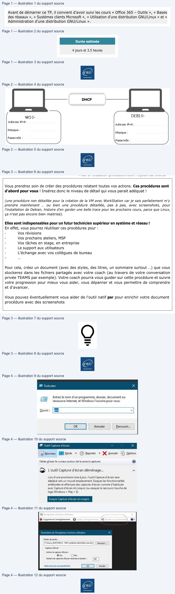
Page 5
Mise en situation professionnelle : systèmes clients
1.2 Caractéristiques matérielles des machines virtuelles
✓ Poste Client Windows
Nom : W10-VosInitiales
Système d’exploitation : Windows 10 Professionnel
Prérequis matériels :
CPU:
Allouer les ressources en suivant les
recommandations Microsoft
Mémoire :
- 1 disque dur de 32 Go
Disque dur :
- 1 disque dur additionnel de 40 Go
Réseau :
1 interface réseau en « Bridged »
✓ Poste Client Linux
Nom : DEB10-VosInitiales
Système : Debian 10
Prérequis matériels :
CPU:
1 vCPU
Mémoire :
2048 Mo
Disque dur :
- 1 disque dur de 20 Go
- 1 disque dur additionnel de 40 Go
Réseau :
1 interface réseau en « Bridged »
1.3 Tâches à réaliser
✓ Schéma et tableau récapitulatif
•
Votre première tâche sera, en utilisant l’illustration précédemment indiquée, de
reproduire le schéma et d’y faire figurer toutes les informations liées à l’adressage IP.
Vous vous servirez pour cela de tout moyen à votre convenance (www.draw.io, MS
Visio, Word ou Paint…).
Page 5/14
© ENI – Tous droits réservés
Texte relevé dans les illustrations
——
| CPU: | Allouerlesressourcesensuivantles recommandations Microsoft |
| Mémoire : | |
| Disque dur : | 1disque durde 32Go - 1 disque dur additionnel de 40 Go - |
| Réseau : | 1 interface réseau en « Bridged » |
| CPU: | 1vCPU |
| Mémoire : | 2048Mo |
| Disque dur : | 1disque durde 20Go - 1 disque dur additionnel de 40 Go - |
| Réseau : | 1 interface réseau en « Bridged » |
Page 6
Mise en situation professionnelle : systèmes clients
•
Vous produirez également un tableau récapitulant l’ensemble des informations
relatives aux configurations des systèmes (login/mots de passe, noms, adresses IP,
processeurs, mémoire…).
✓ Installation des systèmes
•
Sur le poste Microsoft sera déployé le système d’exploitation Windows 10 Edition
Professionnelle sur le 1er disque dur. Vous configurerez le système en respectant les
critères précédemment évoqués (nommage, adressage IP…). Vous empêcherez en
outre, le service Windows Update, de se connecter aux serveurs Microsoft. Vous
trouverez l’iso d’installation disponible ici (récupérez la plus récente) :
\\10.0.0.6\Distrib\iso\os\windows\10
•
Quant au Client Debian, en plus des informations déjà mentionnées, vous installerez
le système depuis l’image ISO « DVD » de la distribution Debian en version 10.x avec
un environnement graphique. Vous trouverez l’iso d’installation ici :
\\10.0.0.6\Distrib\iso\os\unix-linux\linux\Debian\debian10Buster
•
Vous partitionnerez le disque manuellement selon le schéma suivant en prenant
garde de pouvoir exploiter ultérieurement l’espace non alloué et vous conserverez
le système de fichiers par défaut des différents points de montage :
/
17 Go
/boot
512 Mo
swap
256 Mo
/home
1 Go
•
Vous laisserez cocher les paquets par défaut et sélectionnerez comme source
d’installation le serveur de dépôt français de la liste (ftp.fr.debian.org)
✓ Tester la connectivité réseau
•
Assurez-vous de la connectivité :
o Entre vos systèmes
o Avec les machines de votre binôme
Page 6/14
© ENI – Tous droits réservés
Page 7
Mise en situation professionnelle : systèmes clients
Partie 2 – Configuration des utilisateurs et de l’environnement
2.1 Création d’utilisateurs et de groupes
✓ Liste des membres du personnel
•
La société comporte 9 employés répartis en 5 services comme indiqué ci-dessous :
Services
Membres
Direction
Rick Grimes
Daryl Dixon
Commercial
Gabriel Stokes
Maggie Greene
Eugene Porter
Comptabilité
Carol Peletier (intérimaire)
Vous-même (Administrateur)
Informatique
Votre binôme (Administrateur)
Rosita Espinosa
Logistique
Morgan Jones
•
Chaque compte utilisateur sera identifié par la première lettre de son prénom, suivi
de son nom de famille entier. Les mots de passe seront affectés à votre libre
convenance,
tout
en
respectant
les
recommandations
de
l’ANSSI.
(https://www.ssi.gouv.fr/guide/mot-depasse/). Les mots de passe n’expirent jamais.
•
Vous adopterez une convention de nommage pour les groupes, que vous
conserverez, quel que soit le système d’exploitation.
✓ Sur le poste Windows 10
•
Le système Windows 10 sera utilisé par tous les utilisateurs. Vous créerez donc les
groupes et comptes nécessaires en précisant dans le champ description leur service
d’appartenance. Vous créerez une partie via la commande (la direction,
comptabilité), une partie en PowerShell (les groupes informatiques, logistiques), une
partie en graphique (les commerciaux).
•
Ces utilisateurs posséderont tous dans le dossier « Bureau » de leur profil un dossier
nommé Procédures qui contiendra, en outre, un fichier Règlement intérieur.
Page 7/14
© ENI – Tous droits réservés
| Services | Membres |
| Direction | Rick Grimes |
| Commercial | Daryl Dixon GabrielStokes Maggie Greene |
| Comptabilité | Eugene Porter Carol Peletier (inté rimaire) |
| Informatique | Vous-même (Administrateur) Votre binôme (Administrateur) |
| Logistique | Rosita Espinosa Morgan Jones |
Page 8
Mise en situation professionnelle : systèmes clients
•
Le poste d’intérimaire comptable est un emploi à mi-temps. La société a décidé de
contraindre les heures d’ouverture de session disponibles de ce compte de 9h00
jusque 12h00 tous les jours ouvrés (lundi au vendredi).
✓ Sur le poste Debian 10
• Tous les utilisateurs de la société sont susceptibles d’utiliser ce poste localement ou en
connexion à distance. Par conséquent, sa base de comptes contiendra tous les
utilisateurs et groupes. Tous les utilisateurs auront un /bin/bash sauf votre le prestataire
en KSH.
Contraintes supplémentaires :
✓ Sur le poste Windows 10
• La stratégie globale de sécurité de mots de passe comportera ces contraintes :
o 12 caractères au minimum
o Changement obligatoire tous les 25 jours
o Exigences de complexité activées
o Pour plus de sûreté, vous ajouterez un autre compte d’administrateur du
système en ligne de commande « cmd » et lui indiquerez un mot de passe.
o Les membres du service informatique doivent à l’aide de leur compte pouvoir
se connecter sur le système et bénéficier des privilèges d’administrateurs.
✓ Sur les postes Windows 10 & Debian 10
• Le changement de mot de passe du compte utilisateur de votre prestataire devra être
forcé à sa première connexion.
2.2 Configuration de l’environnement de travail
✓ Sur le poste Windows 10
• Les restrictions suivantes seront à paramétrer pour tous les utilisateurs non
administrateurs du système :
o Supprimer les fonctions de gravure CD et empêcher tout accès au lecteur CD et DVD
o Empêcher le lancement des outils de modification du registre (comme regedit…)
o Forcer l’utilisation d’une image de votre choix en tant que fond d’écran
o En outre, le pare-feu devra être obligatoirement actif sur le poste Windows,
quel que soit l’utilisateur connecté.
Page 8/14
© ENI – Tous droits réservés
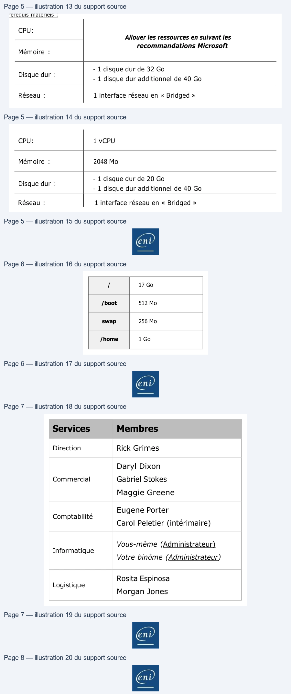
Page 9
Mise en situation professionnelle : systèmes clients
✓ Sur le poste Debian 10
•
Avec l’éditeur de texte Vim, en une seule ligne avec :g/ (remplacer), commentez les
sources deb-src dans /etc/apt/sources.list.
•
N’oubliez pas de commenter la ligne indiquant le DVD.
•
Pour améliorer le confort sous Vim, vous mettrez à jour l’application via le package
simplement nommé « vim » et activerez automatiquement la coloration syntaxique
et la numérotation des lignes.
Partie 3 – Configuration du stockage et des ressources
3.1 Partitionnement de disques
✓ Sur le poste Windows 10
• Via l’outil en ligne de commande DISKPART, sur le deuxième disque dur, vous utiliserez le
format de table de partition MBR. Vous créerez sur celui-ci une partition nommée DATA,
accessible par la lettre D: d’une taille de 15 Go.
✓ Sur le poste Debian 10
•
Trois partitions principales seront créées sur le deuxième disque dur :
o La 1re, en ext4, occupera un espace de 15 Go et se nommera PROFILS
o La 2e, formatée en ext4, fera 15 Go et s’appellera DATA
o La 3e, formatée en xfs (le système de fichiers n’est pas installé par défaut),
occupera tout l’espace restant et se nommera LOGS
3.2 Occupation des espaces disques
✓ Sur le poste Debian 10
N.B : il est fortement conseillé de réaliser un snapshot machine éteinte machine éteinte.
•
Répertoires d’accueil
Finalement, l’espace alloué au dossier contenant les profils utilisateurs « /home » a été sous-
estimé. En conséquence, il vous est demandé de remplacer définitivement ce volume par
celui nommé PROFILS, créé précédemment. Une fois les actions terminées, vous testerez
que les utilisateurs ont bien accès à leurs données personnelles.
Page 9/14
© ENI – Tous droits réservés
Texte relevé dans les illustrations
.
Page 10
Mise en situation professionnelle : systèmes clients
•
Dossiers de service
Les données mises en commun entre membres de chaque service seront stockées au sein
du volume appelé DATA. Ce dernier sera monté automatiquement dans le dossier /services
et hébergera l’arborescence ci-dessous. Faites en sorte que tout nouveau fichier créé dans
ce répertoire appartienne au groupe documentation.
•
Pour éviter tout problème de confidentialité, chaque dossier ne sera accessible en
lecture et écriture qu’aux seuls membres de chaque groupe.
Par exemple, les commerciaux seront les seuls à pouvoir accéder en lecture et modification
au dossier commercial.
✓ Sur le poste Windows 10
•
À l’emplacement D:\données, vous créerez un dossier Commerciaux, dont l’accès
sera interdit à toute personne étrangère au service.
•
De plus, les informaticiens bénéficieront pour leur propre besoin, d’un dossier
D:\Support_Info leur permettant d’y déposer des fichiers et dossiers. Son accès sera
bien évidemment restrictif.
N.B : il est fortement conseillé de réaliser un snapshot machine éteinte.
3.3 Création de partages réseau
•
En suivant les bonnes pratiques, vous partagerez le dossier Support_Info. Il sera
invisible aux yeux de tous pour plus de sécurité. En cas de nécessité de déployer un
partage similaire sur un autre poste, vous chercherez la commande PowerShell
équivalente à vos actions, que vous conserverez dans un fichier PowerShell .ps1. Vous
afficherez avec la commande cmd la liste des partages disponible.
•
Afin d’en tester l’accès, depuis sa machine W10, votre binôme doit créer un lecteur
réseau U: qui pointera vers votre dossier partagé. Ce lecteur devra apparaître
automatiquement à l’ouverture de session. À cette fin, deux méthodes
opérationnelles différentes devront être trouvées.
•
Enfin, après cela, vous validerez l’accès en écriture en y créant un fichier (toujours
depuis la machine Windows 10 de votre binôme).
Page 10/14
© ENI – Tous droits réservés
Texte relevé dans les illustrations
-
BS services
+
O9 commercial
+
© comptabilite
+ (6 direction
+
Gj informatique
+
FU Logistique
L
env
Page 11
Mise en situation professionnelle : systèmes clients
3.4 Gestion d’imprimantes
•
Une imprimante HP LaserJet M9050 MFP est à installer sur le système Windows. Elle doit
être partagée sur le réseau afin de la rendre disponible pour d’autres postes. Vous
utiliserez les pilotes fournis ici : \\10.0.0.6\Distrib\Drivers\Imprimante\upd-pcl6-x64-
7.0.0.24832.exe
•
Son adresse IP fictive sera constituée de la manière suivante :
o Les deux premiers octets seront les mêmes que ceux de W10-VosInitiales
o Le troisième octet sera 10101000
o Le dernier octet sera le même que celui de W10-VosInitiales
•
Les permissions d’utilisation de cette dernière sont les suivantes :
o Tous les utilisateurs peuvent imprimer
o Le service Comptabilité peut supprimer des impressions bloquées en cas de
problèmes
o Le service informatique possède le contrôle total
•
Après l'avoir connectée, votre binôme la déclare comme imprimante par défaut sur
son poste Windows 10.
•
Pour l’édition de documents comptables volumineux (bilan de fin d’exercice, état
des provisions…), un pool d’imprimantes devra être mis en œuvre, autorisant
l’impression sur 2 périphériques d’impression physiques Xerox Office Color
\\10.0.0.6\Distrib\Drivers\Imprimante\XCC70_5.523.0.0_PrintSetup.exe ):
•
Les adresses IP fictives seront constituées de la manière suivante :
o Les deux premiers octets seront les mêmes que ceux de DEB10-VosInitiales
o
Les troisièmes octets seront 10101000 et 10101001
o Les derniers octets seront les mêmes que celui de DEB10-VosInitiales
•
Vous tiendrez compte des caractéristiques suivantes :
o Seul le service Comptabilité est habilité à utiliser ces périphériques et
uniquement entre 19h00 et 3h00
o Les administrateurs (service informatique) possèdent le contrôle total.
•
Créer 2 files d’attente pour la Xerox Office Color. Les directeurs auront la priorité sur
les autres groupes.
•
Déplacer le spool d’impression sur D : (au lieu de C:\windows).
Page 11/14
© ENI – Tous droits réservés
Page 12
Mise en situation professionnelle : systèmes clients
Partie 4 – Configuration avancée des systèmes
4.1 Configuration avancée système Debian
N.B : il est fortement conseillé de réaliser un snapshot machine éteinte.
•
Afin d’accélérer quelque peu le démarrage du système, l’affichage du menu du
chargeur d’amorçage grub ne durera que 2 secondes.
•
Finalement, l’espace réservé à la pagination n’est pas suffisant. Il faudrait ainsi utiliser,
et ce de façon définitive un swap de 1 Go, pour cela vous vous servirez de l’espace
restant sur le premier disque.
•
Vous mettrez à jour l’intégralité des paquets de votre système Debian.
4.2 Configuration avancée système Windows 10
•
Pour permettre la reconfiguration du système Windows 10 depuis un système distant,
vous activerez la fonctionnalité du bureau à distance avec authentification au
niveau du réseau (NLA) et donnerez les autorisations adéquates pour le compte de
votre binôme.
• Vérifiez le numéro de port de RDP avec la commande netstat -an.
•
Demandez à votre binôme de se connecter à distance sur votre poste Windows 10
afin de tester le bon fonctionnement du service RDP.
Partie 5 – Installation d’applications
5.1 Installation d’application sur le Windows 10
•
Vous chercherez et validerez la possibilité d’installer de façon silencieuse le logiciel
7zip. C’est-à-dire, qu’aucune boîte de dialogue ou assistant graphique ne doit
s’afficher à l’écran au déclenchement de l’installation, hormis bien sûr l’alerte UAC
(regarder dans l’aide et la FAQ du site officiel de 7zip). Vous trouverez le logiciel ici :
\\10.0.0.6\Distrib\logiciels\applications\7zip
5.2 Installation d’application sur le poste Debian 10
•
Sans toucher aux paramétrages actuels du poste Windows, vous vous connecterez
à ce dernier à l’aide du protocole RDP. Pour cela, vous rechercherez et installerez
une application cliente disponible sur les dépôts officiels sous forme graphique
capable entre autres de gérer ce protocole, sachant que Vinagre et freerdp ne
permettent pas facilement de gérer l’authentification NLA.
•
Installez Webmin afin que l’administrateur puis effectuer une partie de son travail via
une interface web graphique.
Page 12/14
© ENI – Tous droits réservés
Texte relevé dans les illustrations
L
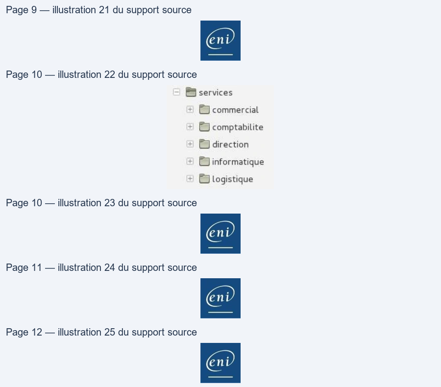
Page 13
Mise en situation professionnelle : systèmes clients
Partie 6 – Sauvegarde et restauration
6.1 Sauvegarde sur le poste Debian 10
•
Afin d’éviter toute perte de données importantes, vous planifierez la sauvegarde
quotidienne à 12h30 sous forme de fichiers « tar » :
o Des données personnelles des utilisateurs
o Des fichiers de données présents dans les dossiers de service
• Pour vous prémunir d’un arrêt brutal du système, vous configurerez une duplication des fichiers à l’aide de la commande scp en direction d’un dossier qui sera mis à disposition à distance sur le poste Debian de votre binôme.
N.B : il se peut que la commande scp ne soit pas présente sur votre système. Vous installerez le cas échéant les paquets nécessaires.
6.2 Sauvegarde sur les postes Windows 10
•
Vous ajouterez tout d’abord un nouveau disque dur de 60 Go dans le cas où vous
manqueriez d’espace de stockage.
•
Vous réaliserez une image système permettant en cas de panne importante de
restaurer le système d’exploitation en intégralité.
•
Ensuite, vous planifierez une sauvegarde journalière des données du service
informatique (dossier support informatique) à 12h45. Les fichiers résultants seront
placés sur un partage Support_Info de votre binôme (machine W10) dans un dossier
qui sera créé à cette fin.
•
Enfin, vous paramétrerez les points de restauration sur le volume C: et réserverez à
cet usage 8% de la capacité du lecteur.
Partie 7 – Pour aller plus loin – Partitionnement LVM
7.1 Configuration du stockage et des ressources
•
Sur le poste Debian, la partition nommée LOGS sera montée de façon permanente
dans le dossier /var/log afin de soulager la partition utilisée jusque-là. De nombreux
fichiers y sont positionnés et utilisés notamment par le système en quasi-permanence.
Vous veillerez donc à ne perdre aucune information vitale. Vous vérifierez après coup
que l’inscription des évènements fonctionne correctement.
•
Depuis le système Debian, vous devez monter le partage Support_Info hébergé sur
le poste Windows, à l’aide du compte utilisateur adéquat. Attention à la
problématique de version de protocole SMB supportée par Windows 10.
Page 13/14
© ENI – Tous droits réservés
Texte relevé dans les illustrations
.
Page 14
Mise en situation professionnelle : systèmes clients
7.2 Configuration avancée des systèmes
•
Sur le poste Windows : pour économiser l’espace de la partition système, vous
déplacerez le fichier de pagination (swap) à la racine du lecteur D: en laissant le
système gérer la taille du fichier.
•
Sur le poste Debian : plusieurs applications installées depuis les sources vont être
installées dans /opt. Pour plus de flexibilité, l’espace disque accessible à cet
emplacement sera géré au moyen de LVM.
o Vous ajouterez 2 nouveaux disques SCSI de 20Go ; vérifier leur bonne prise en
compte par le système.
Configuration LVM :
o Au moyen des commandes appropriées, vous créerez un volume logique LVM
de 32Go
Montage de /opt depuis le volume logique créé précédemment :
o Le volume logique créé précédemment est à formater en ext4. Il doit être
accessible depuis /opt et ce de façon permanente.
•
Vous trouverez un fichier Excel (Résultats_séminaire.xlsx) comprenant les notes des
employés aux derniers séminaires. Veuillez l’ouvrir et compléter :
o La colonne à l’aide d’une formule “Total par élève”
o La colonne à l’aide d’une formule “Moyenne par élève”
o La colonne “APPRECIATION” à l’aide d’une condition
o La ligne “Total par matière” est une somme des notes des employés dans une
matière
o La ligne “Moyenne par matière” est une moyenne des notes des employés
dans une matière
o La ligne “note maximum” indique la meilleure note des employés dans une
matière
o La ligne “note minimum” indique la note la plus faible des employés dans une
matière
o La ligne “nombre d’élèves” indique le nombre d’élèves
•
Pour calculer l'appréciation selon la condition suivante :
o Si la moyenne et l'assiduité >10 afficher Bien
o Si la moyenne <=10 et l'assiduité >=10 afficher En Progrès
o Si la moyenne >=10 et l'assiduité <10 afficher Trop d'absences
o Si la moyenne et l'assiduité <10 afficher En danger !
Page 14/14
© ENI – Tous droits réservés
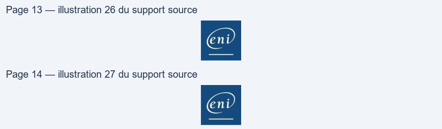
Référence du document : 1bxwStCXRceI7RosQCpD9hbMHyCRvkYD1 · SHA-256 c9ad26c2b4912579…
Support · NP_MDP_NoteTech · 11 pages transcrites
Page 1
P R E M I E R M I N I S T R E
Secrétariat général
Paris, le 5 juin 2012
de la défense
et de la sécurité nationale
No DAT-NT-001/ANSSI/SDE/NP
Agence nationale de la sécurité
Nombre de pages du document : 10
des systèmes d’information
Note technique
Recommandations de sécurité relatives
aux mots de passe
Texte relevé dans les illustrations
À
Liberté + Égalité + Fraternité
RÉPUBLIQUE FRANÇAISE
<A CURITE Des
iS
Or
4
Ye
à
©)
<,
p
=
|
Je
o
©
ue
=
IL
Nas
z
Pa
3
Z
©
=
©
5
Qs
v2 Ay
—
ANSS\
Page 2
Informations
Personnes ayant contribué à la rédaction de ce document:
Contributeurs
Rédigé par
Approuvé par
Date
Division
assistance
technique, CERT Fr
DAT
SDE
5 juin 2012
Évolutions du document :
Version
Date
Nature des modifications
1.0
23 mai 2012
Version initiale
1.1
5 juin 2012
Corrections de forme
Pour toute remarque:
Contact
Adresse
@mél
Téléphone
Bureau Communication
communication@ssi.gouv.fr
01 71 75 84 04
de l’ANSSI
51 bd de La
Tour-Maubourg
75700 Paris Cedex
07 SP
No DAT-NT-001/ANSSI/SDE/NP du 5 juin 2012
Page 1 sur 10
| Contributeurs | Rédigé par | Approuvé par | Date |
| Division assistance technique CERT Fr , | DAT | SDE | 5 juin 2012 |
| Version | Date | Nature des modifications |
| 1 0 . | 23 mai 2012 | Version initiale |
| 1 1 . | 5 juin 2012 | Corrections de forme |
| Contact | Adresse | @mél | Téléphone |
| Bureau Communication de l’ANSSI | 51 bd de La Tour-Maubourg 75700 Paris Cedex 07 SP | communication@ssi gouv fr . . | 01 71 75 84 04 |
Page 3
Préambule
Malgré le développement de mécanismes d’authentification intrinsèquement plus robustes, l’usage
des mots de passe est encore relativement répandu, notamment pour l’authentification sur Internet.
L’ANSSI recommande très fortement, dans tous les cas où cela est possible, l’utilisation de technolo-
gies d’authentification forte (utilisation de certificats d’authentification sur carte à puce, utilisation de
schéma d’authentification à plusieurs facteurs etc.). Cependant, l’utilisateur n’est pas toujours maître
des choix qui s’offrent à lui en matière d’authentification. L’objet de ce document est donc de guider
l’utilisateur dans le choix de mots de passe adéquats.
De quoi dépend la robustesse d’un mot de passe ?
Les préconisations que l’on peut retrouver dans les guides de bonne pratique en matière de robus-
tesse de mots de passe sont parfois contradictoires. Certaines recommandations préconisent le choix de
mots de passe de 12 caractères alphanumériques, d’autres de 16 lettres, etc.
En réalité, il n’existe pas de règle universelle. La robustesse d’un mot de passe dépend en pratique :
– de la force intrinsèque du mot de passe, c’est à dire sa complexité intrinsèque 1 ;
– du mécanisme mis en oeuvre pour vérifier le mot de passe et de ses caractéristiques techniques
(temps de vérification, mécanisme cryptographique sous-jacent notamment) ;
– du modèle d’attaquant considéré. La résistance contre tous les types d’attaquants imaginables
est intrinsèquement plus difficile à atteindre que la simple résistance aux attaques opportunistes
par lesquelles l’attaquant va essayer les mots de passe les plus triviaux les uns après les autres
sans connaissance a priori du système cible ;
– éventuellement, en fonction des mécanismes techniques mis en oeuvre et du modèle d’attaquant,
du nombre d’authentification ratées autorisées avant blocage d’un compte protégé par le mot de
passe ;
– des mécanismes d’alerte éventuels. Certains systèmes permettent à l’utilisateur de prendre connais-
sance de manière sûre du nombre d’échecs d’authentification infructueux. D’autres léveront une
alerte à destination d’un administrateur ou bloqueront le compte de l’utilisateur concerné.
Compte-tenu de ce qui précède, il n’existe pas de recette miracle pour déterminer à coup sûr ce qu’est
un bon mot de passe. Prenons quelques exemples plus concrets :
Exemple 1 : Certains systèmes d’authentification historiques découpaient systématiquement tous
les mots de passe de moins de 14 caractères en deux blocs de 7 caractères, sur lesquels étaient appliqués
un mécanisme de vérification similaire. Sans rentrer dans les détails techniques, le choix d’un tel mé-
canisme avait pour conséquence le fait que tous les mots de passe de moins de 14 caractères étaient à
peu de chose près équivalents en termes de robustesse. Choisir un mot de passe de 14 caractères n’était
pas réellement plus sûr que de prendre un mot de passe de 8 caractères (cf. Annexe).
Exemple 2 : Certains systèmes d’authentification disposent d’un mécanisme doublant le temps
de vérification du mot de passe après chaque échec d’authentification. Ainsi, le temps de vérification
du mot de passe devient rédhibitoire pour un attaquant après seulement quelques essais infructueux.
Cette mesure est efficace, mais uniquement contre un attaquant de niveau basique essayant tous les
mots de passe les plus probables les uns après les autres. Il n’est pas rare que l’observation des échanges
1. Voir sur le site www.securite-informatique.gouv.fr les fiches techniques "Mot de passe" et "Calculer la force d’un
mot de passe".
No DAT-NT-001/ANSSI/SDE/NP du 5 juin 2012
Page 2 sur 10
Page 4
entre l’utilisateur et la machine sur laquelle il cherche à s’authentifier fournisse suffisamment d’infor-
mation à l’attaquant pour rechercher le bon mot de passe a posteriori (on parle de recherche hors-ligne).
Exemple 3 : Certains systèmes d’information imposent à l’utilisateur de prendre un mot de passe
extrêmement compliqué mais le transmettent ensuite en clair sur le réseau. La complexité du mot de
passe choisi sur l’utilisateur n’a donc qu’un impact limité sur la sécurité du système dans son ensemble,
dès lors que l’attaquant a la possibilité d’écouter le échanges sur le réseau.
Au final, la définition d’une politique de mot de passe est une opération complexe. Cette politique
doit être ajustée le plus précisément possible afin de garantir le respect des objectifs de sécurité sans
imposer des contraintes irréalistes pour les utilisateurs.
Les recommandations minimales à respecter !
A minima, l’ANSSI estime que les 8 recommandations suivantes doivent s’appliquer indépendam-
ment de tout contexte. Lorsque les systèmes d’information utilisés le permettent, certaines doivent être
imposées techniquement.
R1
Utilisez des mots de passe différents pour vous authentifier auprès de systèmes distincts.
En particulier, l’utilisation d’un même mot de passe pour sa messagerie professionnelle et
pour sa messagerie personnelle est à proscrire impérativement.
R2
Choisissez un mot de passe qui n’est pas lié à votre identité (mot de passe composé d’un
nom de société, d’une date de naissance, etc.).
R3
Ne demandez jamais à un tiers de créer pour vous un mot de passe.
R4
Modifiez systématiquement et au plus tôt les mots de passe par défaut lorsque les systèmes
en contiennent.
R5
Renouvelez vos mots de passe avec une fréquence raisonnable. Tous les 90 jours est un bon
compromis pour les systèmes contenant des données sensibles.
R6
Ne stockez pas les mots de passe dans un fichier sur un poste informatique particulièrement
exposé au risque (exemple : en ligne sur internet), encore moins sur un papier facilement
accessible.
R7
Ne vous envoyez pas vos propres mots de passe sur votre messagerie personnelle.
R8
Configurez les logiciels, y compris votre navigateur web, pour qu’ils ne se "souviennent"
pas des mots de passe choisis.
Pour en savoir plus
Pour approfondir les méthodes d’attaque sur mots de passe et disposer ainsi de plus d’éléments
justifiant ces recommandations, le lecteur est invité à lire l’annexe de ce document qui est une mise à
jour d’une note d’information publiée en 2005 par le CERTA 2.
2. CERTA-2005-INF-001.
No DAT-NT-001/ANSSI/SDE/NP du 5 juin 2012
Page 3 sur 10
| R1 | Utilisez des mots de passe différents pour vous authentifier auprès de systèmes distincts . |
| En particulier l’utilisation d’un même mot de passe pour sa messagerie professionnelle et , | |
| pour sa messagerie personnelle est à proscrire impérativement . | |
| R2 | Choisissez un mot de passe qui n’est pas lié à votre identité ( mot de passe composé d’un nom de société d’une date de naissance etc ) , , . . |
| R3 | Ne demandez jamais à un tiers de créer pour vous un mot de passe . |
| R4 | Modifiez systématiquement et au plus tôt les mots de passe par défaut lorsque les systèmes |
| en contiennent . | |
| R5 | Renouvelez vos mots de passe avec une fréquence raisonnable Tous les 90 jours est un bon . |
| compromis pour les systèmes contenant des données sensibles . | |
| R6 | Nestockezpaslesmotsdepassedansunfichiersurunposteinformatiqueparticulièrement exposé au risque ( exemple : en ligne sur internet) encore moins sur un papier facilement , |
| accessible . | |
| R7 | Ne vous envoyez pas vos propres mots de passe sur votre messagerie personnelle . |
| R8 | Configurez les logiciels y compris votre navigateur web pour qu’ils ne se "souviennent" , , |
| pas des mots de passe choisis . |
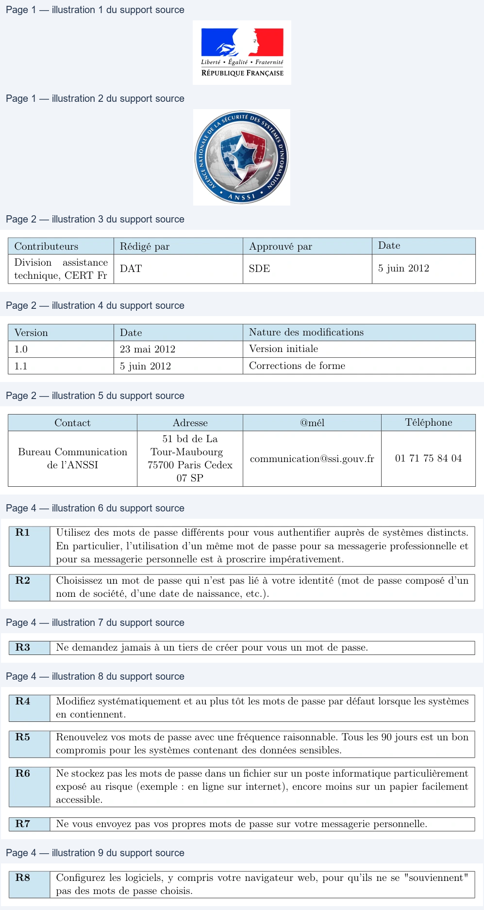
Page 5
Annexe à la note DAT-NT-001/ANSSI/SDE du 5 juin 2012.
1
Introduction
5
2
Les différentes attaques sur les mots de passe
5
2.1
Attaques par force brute . . . . . . . . . . . . . . . . . . . . . . . . . . . . . . . . . . .
6
2.2
Attaques par dictionnaires . . . . . . . . . . . . . . . . . . . . . . . . . . . . . . . . . .
6
2.3
Attaques par compromis temps/mémoire . . . . . . . . . . . . . . . . . . . . . . . . . .
6
2.4
Attaques indirectes . . . . . . . . . . . . . . . . . . . . . . . . . . . . . . . . . . . . . .
7
3
Comment créer un bon mot de passe ?
7
3.1
Méthode phonétique . . . . . . . . . . . . . . . . . . . . . . . . . . . . . . . . . . . . .
7
3.2
Méthode des premières lettres . . . . . . . . . . . . . . . . . . . . . . . . . . . . . . . .
7
4
Pourquoi et comment bien gérer les mots de passe ?
8
4.1
Politique de gestion des mots de passe . . . . . . . . . . . . . . . . . . . . . . . . . . .
8
4.1.1
Sensibilisation à l’utilisation de mots de passe forts . . . . . . . . . . . . . . . .
8
4.1.2
Mot de passe initial
. . . . . . . . . . . . . . . . . . . . . . . . . . . . . . . . .
8
4.1.3
Renouvellement des mots de passe
. . . . . . . . . . . . . . . . . . . . . . . . .
8
4.1.4
Les critères prédéfinis pour les mots de passe
. . . . . . . . . . . . . . . . . . .
8
4.1.5
Confidentialité du mot de passe . . . . . . . . . . . . . . . . . . . . . . . . . . .
8
4.1.6
Configuration des logiciels . . . . . . . . . . . . . . . . . . . . . . . . . . . . . .
9
4.2
Utilisation de mots de passe différents
. . . . . . . . . . . . . . . . . . . . . . . . . . .
9
4.3
Utilisation de mots de passe non rejouables (One Time Password) . . . . . . . . . . . .
9
4.4
Mettre en place un contrôle systématique des mots de passe . . . . . . . . . . . . . . .
9
5
Lorsque possible, préférer l’usage de certificats d’authentification sur carte à puce !
9
No DAT-NT-001/ANSSI/SDE/NP du 5 juin 2012
Page 4 sur 10
| 1 | Introduction | 5 |
| 2 | Les différentes attaques sur les mots de passe | 5 |
| 2 1 Attaques par force brute . . . . . . . . . . . . . . . . . . . . . . . . . . . . . . . . . . . . | 6 | |
| 2 2 Attaques par dictionnaires . . . . . . . . . . . . . . . . . . . . . . . . . . . . . . . . . . . | 6 | |
| 2 3 Attaques par compromis temps/ mémoire . . . . . . . . . . . . . . . . . . . . . . . . . . . | 6 | |
| 2 4 Attaques indirectes . . . . . . . . . . . . . . . . . . . . . . . . . . . . . . . . . . . . . . . | 7 | |
| 3 | Comment créer un bon mot de passe? | 7 |
| 3 1 Méthode phonétique . . . . . . . . . . . . . . . . . . . . . . . . . . . . . . . . . . . . . . | 7 | |
| 3 2 Méthode des premières lettres . . . . . . . . . . . . . . . . . . . . . . . . . . . . . . . . . | 7 | |
| 4 | Pourquoi et comment bien gérer les mots de passe? | 8 |
| 4 1 Politique de gestion des mots de passe . . . . . . . . . . . . . . . . . . . . . . . . . . . . | 8 | |
| 4 1 1 Sensibilisation à l’utilisation de mots de passe forts . . . . . . . . . . . . . . . . . . | 8 | |
| 4 1 2 Mot de passe initial . . . . . . . . . . . . . . . . . . . . . . . . . . . . . . . . . . . | 8 | |
| 4 1 3 Renouvellement des mots de passe . . . . . . . . . . . . . . . . . . . . . . . . . . . | 8 | |
| 4 1 4 Les critères prédéfinis pour les mots de passe . . . . . . . . . . . . . . . . . . . . . | 8 | |
| 4 1 5 Confidentialité du mot de passe . . . . . . . . . . . . . . . . . . . . . . . . . . . . . | 8 | |
| 4 1 6 Configuration des logiciels . . . . . . . . . . . . . . . . . . . . . . . . . . . . . . . . | 9 | |
| 4 2 Utilisation de mots de passe différents . . . . . . . . . . . . . . . . . . . . . . . . . . . . | 9 | |
| 4 3 Utilisation de mots de passe non rejouables (One Time Password) . . . . . . . . . . . . . | 9 | |
| 4 4 Mettre en place un contrôle systématique des mots de passe . . . . . . . . . . . . . . . . | 9 | |
| 5 | Lorsque possible préférer l’usage de certificats d’authentification sur carte à puce! , | 9 |
Page 6
1
Introduction
L’utilisation de mots de passe forts est l’une des briques de base dans la sécurisation d’un système
d’information. Malheureusement cette première étape est souvent absente dans la politique de sécurité.
Il est par conséquent assez fréquent de trouver des comptes avec des mots de passe triviaux, sans mot
de passe ou avec des mots de passe par défaut.
Cette note a pour but :
– de sensibiliser les utilisateurs de système d’information sur l’intérêt d’avoir des mots de passe
forts ;
– de sensibiliser les administrateurs sur l’intérêt de mettre en place un contrôle systématique de la
qualité des mots de passe ;
– de sensibiliser les concepteurs d’application sur l’importance d’une politique complète et cohé-
rente concernant l’utilisation et la gestion des mots de passe ;
– de préciser les limites de la sécurité apportée par les mots de passe.
2
Les différentes attaques sur les mots de passe
Afin d’éviter qu’un mot de passe ne soit facilement retrouvé par un outil conçu à cet effet, il peut
être intéressant de connaître les différentes méthodes utilisées par les outils automatisés pour découvrir
les mots de passe. Dans la plupart des cas, ce sont les empreintes (valeur de sortie d’une fonction
de hachage) des mots de passe qui sont stockées sur le système. Les attaques sur les mots de passe
consistent donc à calculer des empreintes et à les comparer à celles contenues dans les fichiers de mots
de passe.
En outre, toute faiblesse dans les schémas de mot de passe peut faciliter ces attaques. Il convient
donc d’en tenir compte pour choisir le bon mot de passe. Par exemple, pour les systèmes Microsoft,
lorsque le Hash LM est utilisé, si un attaquant a récupéré le hash du mot de passe, il pourra récupérer le
mot de passe originel en un temps très raisonnable à l’aide, par exemple, des Rainbow Tables. En effet,
dans ce mode, il n’y a pas de différences entre les minuscules et les majuscules et la complexité ne peut
pas dépasser 7 caractères par construction. Aussi, dans les paramètres de sécurité locaux Windows,
il convient d’empêcher le stockage Hash LM après changement de mot de passe. Le schéma qui suit
illustre le principe de fonctionnement du Hash LM :
Figure 1 – Description du Hash LM
No DAT-NT-001/ANSSI/SDE/NP du 5 juin 2012
Page 5 sur 10
Texte relevé dans les illustrations
Gp
anNiVerSAire
ANNIVERSAIRE
ON
ANNIVER
SAIREOO
@
LL
4 ns
…%$'8@jz. ©
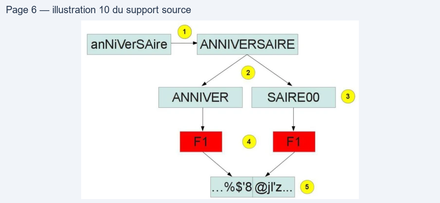
Page 7
1. La casse du mot de passe n’est pas gérée. Il peut donc être considéré que tout est en majuscules.
2. Le mot de passe est séparé en 2 mots de 7 caractères.
3. Lorsque le mote de passe a une longueur inférieure à 14 caractères, il est complété par des
caractères null.
4. Une fonction de hashage est appliquée à chaque mot.
5. Les deux hashs concaténés constituent le Hash LM.
2.1
Attaques par force brute
Cette attaque consiste à tester toutes les combinaisons possibles d’un mot de passe. Plus il existe
de combinaisons possibles pour former un mot de passe, plus le temps moyen nécessaire pour retrouver
ce mot de passe sera long.
Un mot de passe, d’une longueur minimale de douze caractères et constitué d’au moins trois des
quatre groupes de caractères enoncés ci-dessus (minuscules, majuscules, caractères spéciaux et chiffres),
ne pourra pas en général être découvert par cette attaque dans un temps raisonnable 3.
2.2
Attaques par dictionnaires
Cette attaque consiste à tester une série de mots issus d’un dictionnaire. Il existe toutes sortes
de dictionnaires disponibles sur l’Internet pouvant être utilisés pour cette attaque (dictionnaire des
prénoms, dictionnaire des noms d’auteurs, dictionnaire des marques commerciales...). En utilisant un
mot de passe n’ayant aucune signification cette attaque ne donnera aucun résultat.
Cependant, plusieurs règles de transformation des mots du dictionnaire sont utilisées par les outils
automatisés pour augmenter le nombre de combinaisons possibles. Citons par exemple :
– le remplacement d’un ou de plusieurs caractères du mot du dictionnaire par une majuscule
(bUreAU) ;
– le remplacement de certains caractères par des chiffres comme par exemple le S en 5 (mai5on) ;
– l’ajout d’un chiffre au début ou à la fin d’un mot (arbre9) ;
– l’ajout des mots de passe déjà découverts.
Il est possible d’utiliser des dictionnaires contenant une liste de mots de passe et leur empreinte
associée établie selon ces règles. Même si cette possibilité accélère le temps nécessaire pour retrouver
un mot de passe, elle nécessite plus de moyens comme une place plus importante en mémoire.
La solution idéale pour un individu malintentionné qui souhaiterait retrouver des mots de passe
le plus rapidement possible serait d’avoir une liste exhaustive de tous les mots de passe possibles et
de leur empreinte associée. Un tel dictionnaire n’est pas enviseageable car il nécessiterait une place
en mémoire bien trop importante. Cependant sur les algorithmes de chiffrement faibles (cf. exemple
précédent du Hash LM sur les systèmes Microsoft Windows), il est possible d’utiliser les attaques par
compromis temps/mémoire.
2.3
Attaques par compromis temps/mémoire
Les attaques par compromis temps/mémoire sont des solutions intermédiaires permettant de re-
trouver un mot de passe plus rapidement qu’avec une attaque par force brute et avec moins de mémoire
3. Compte tenu des moyens à la disposition de tout à chacun au moment de la rédaction de ce document.
No DAT-NT-001/ANSSI/SDE/NP du 5 juin 2012
Page 6 sur 10
Page 8
qu’en utilisant une attaque par dictionnaire. Ces compromis sont réalisés à partir de chaînes construites
à l’aide de fonctions de hachage et de fonctions de réduction. Pour retrouver un mot de passe, il faudra
d’abord retrouver à quelle chaîne appartient l’empreinte recherchée. Une fois que la chaîne aura été
retrouvée il sera alors facile de retrouver le mot de passe, à partir du début de cette chaîne.
Par ailleurs, des méthodes efficaces s’appuyant sur les statistiques comme le calcul de la probabilité
d’apparition d’une lettre dans un mot de passe selon celle qui la précède 4 permettent de fixer certains
paramètres pour optimiser les attaques.
2.4
Attaques indirectes
D’autres attaques assez connues car très pratiquées (en particulier le filoutage et les logiciels de
captures des frappes au clavier) consistent non pas à déterminer le mot de passe par une recherche
technique mais à le capturer au moment où il est saisi, ou encore à se le faire communiquer en usant
de supercherie.
Face à ces attaques, la qualité (ou « force ») du mot de passe doit être complétée par des mesures
organisationnelles essentielles :
– procédures robustes de création de compte (initialisation et première fourniture du mot de passe) ;
– sensibilisation et bonne information des utilisateurs afin qu’ils détectent les tentatives pour leur
soutirer leur mot de passe ;
– procédures robustes de réinitialisation en cas d’oubli ou perte du mot de passe par un utilisateur ;
– ne pas réutiliser des mots de passe identiques sur des systèmes différents. En particulier, ne pas
mettre le même mot de passe sur une application peu protégée et sur une application sensible.
3
Comment créer un bon mot de passe ?
Un bon mot de passe est avant tout un mot de passe fort, c’est à dire difficile à retouver même à l’aide
d’outils automatisés. La force d’un mot de passe dépend de sa longueur et du nombre de possibilités
existantes pour chaque caractère le composant. En effet, un mot de passe constitué de minuscules, de
majuscules, de caractères spéciaux et de chiffres est techniquement plus difficile à découvrir qu’un mot
de passe constitué uniquement de minuscules.
Néanmoins, un bon mot de passe doit être facile à retenir pour rester fort. En effet, si un mot de passe
est trop compliqué à retenir, l’utilisateur trouvera différentes astuces comme, par exemple, l’inscription
du mot de passe sur un papier collé sur l’écran ou sous le clavier lui permettant de s’authentifier. Pour
ne pas mettre bêtement en danger la sécurité du SI, il existe différents moyens mnémotechniques pour
fabriquer et retenir des mots de passe forts.
3.1
Méthode phonétique
Cette méthode consiste à utiliser les sons de chaque syllabe pour fabriquer une phrase facile à retenir.
Par exemple la phrase « J’ai acheté huit cd pour cent euros cet après midi » deviendra ght8CD%E7am.
3.2
Méthode des premières lettres
Cette méthode consiste à garder les premières lettres d’une phrase (citation, paroles de chanson...)
en veillant à ne pas utiliser que des minuscules. Par exemple, la citation « un tiens vaut mieux que
deux tu l’auras » donnera 1tvmQ2tl’A.
4. Utilisation des chaînes de Markov.
No DAT-NT-001/ANSSI/SDE/NP du 5 juin 2012
Page 7 sur 10
Page 9
4
Pourquoi et comment bien gérer les mots de passe ?
4.1
Politique de gestion des mots de passe
Les mots de passe sont souvent la seule protection d’une station de travail. Il est donc indispensable
de mettre en œuvre une politique de gestion des mots de passe intégrée à la politique de sécurité du
système d’information.
Cette politique de gestion de mots de passe devra être à la fois technique et organisationelle. Les
éléments suivants pourront, entre autres, y être inscrits.
4.1.1
Sensibilisation à l’utilisation de mots de passe forts
Les utilisateurs d’un système d’information doivent être sensibilisés à l’utilisation de mots de passe
forts afin de comprendre pourquoi le risque d’utiliser des mots de passe faibles peut entraîner une
vulnérabilité sur le système d’information dans son ensemble et non pas sur leur poste uniquement.
4.1.2
Mot de passe initial
Le mot de passe initial doit être de préférence fourni sur un canal sûr. Lorsque ce mot de passe initial
est fourni par l’administrateur du système ou lorsqu’il est communiqué sur un canal non confidentiel,
il doit être changé dès la première connexion de l’utilisateur.
L’administrateur qui a fourni un mot de passe sur un canal non sûr doit avoir une vigilance plus
soutenue afin de s’assurer que le mot de passe n’est pas utilisé par un tiers.
4.1.3
Renouvellement des mots de passe
Les mots de passe doivent avoir une date de validité maximale. A partir de cette date l’utilisateur
ne doit plus pouvoir s’authentifier sur le système si le mot de passe n’a pas été changé. Ceci permet
de s’assurer qu’un mot de passe découvert par un utilisateur mal intentionné, ne sera pas utilisable
indéfiniment dans le temps.
4.1.4
Les critères prédéfinis pour les mots de passe
Plusieurs critères peuvent être définis et mis en œuvre dans de nombreux systèmes pour s’assurer
de la qualité des mots de passe. Ces critères sont, par exemple :
– une longueur minimale obligatoire prédéfinie ;
– l’impossibilité de réutiliser les n derniers mots de passe ;
– le nombre de tentatives possibles avant verrouillage de compte ;
– la manière de déverrouiller un compte qui a été bloqué. Pour éviter les dénis de service liés au
blocage de tous les comptes sur un système d’information, il peut être intéressant que le déblocage
des comptes se fasse de manière automatique après un certain délai ;
– la mise en place d’une veille automatique avec un déblocage par saisie du mot de passe.
4.1.5
Confidentialité du mot de passe
Un mot de passe sert à s’authentifier sur un système. Dans ce but, il est important de veiller à
ne pas divulguer son mot de passe. Un mot de passe ne doit jamais être partagé ni stocké dans un
fichier ni sur papier sans protection adaptée. Ainsi, il est possible que la politique de sécurité demande
No DAT-NT-001/ANSSI/SDE/NP du 5 juin 2012
Page 8 sur 10
Page 10
aux utilisateurs d’un système d’information de stocker les mots de passe sur papier dans un lieu sûr
(enveloppe cachetée dans un coffre ignifugé) pour le cas ou un problème surviendrait.
4.1.6
Configuration des logiciels
Une large majorité de logiciels comme par exemple les logiciels de navigation Internet proposent
d’enregistrer les mots de passe, par le biais d’une petite case à cocher «retenir le mot de passe»,
pour éviter à l’utilisateur la peine d’avoir à les ressaisir. Ceci pose plusieurs problèmes de sécurité
notamment lorsqu’une personne mal intentionnée prend le contrôle de l’ordinateur d’un utilisateur,
il lui suffit de récupérer le fichier contenant la liste des mots de passe enregistrés pour pouvoir se
connecter sur des sites à accès protégé.
4.2
Utilisation de mots de passe différents
Il est important de garder à l’esprit qu’un mot de passe n’est pas inviolable dans le temps. C’est
pour cette raison qu’il est nécessaire de changer régulièrement son mot de passe et qu’il est important
de ne pas utiliser le même mot de passe pour tous les services vers lesquels on se connecte.
En effet, si le poste de travail est compromis et qu’un renifleur de clavier est installé, un utilisateur
mal intentionné peut récupérer tous les mots de passe entrés au clavier durant la période pendant
laquelle le renifleur de clavier était installé (même si ces mots de passe sont forts) et accéder à l’ensemble
des services nécessitant ces mots de passe. Tant que les mots de passe capturés n’ont pas été changés,
des accès malveillants sont possibles, l’impact de l’attaque est durable.
C’est pourquoi changer régulièrement de mots de passe, à partir de machines saines, permet de
diminuer la durée de l’impact de l’attaque.
4.3
Utilisation de mots de passe non rejouables (One Time Password)
Il est possible d’utiliser des solutions permettant de s’authentifier à un système par le biais d’un
mot de passe ne pouvant être utilisé qu’une seule fois. Cette solution présente l’avantage que lorsqu’un
mot de passe est découvert, il ne peut pas être réutilisé. Cette technique reste toutefois vulnérable aux
attaques de l’intercepteur (man in the middle).
4.4
Mettre en place un contrôle systématique des mots de passe
Pour s’assurer de l’absence de mots de passe faibles, il peut être intéressant pour un administrateur,
s’il y est autorisé, de réaliser des tests sur la robustesse des mots de passe utilisés sur son système
d’information. Des outils commerciaux ou gratuits sont disponibles sur l’Internet. Le choix de l’outil
le plus adapté dépend du type de mots de passe que l’on désire analyser. Une telle démarche peut être
très utile à des fins de sensibilisation des utilisateurs.
5
Lorsque possible, préférer l’usage de certificats d’authentification sur carte à
puce !
L’utilisation de certificats de clés publiques sur les postes clients et serveurs permet de détecter
l’intercepteur (man in the middle), mais reste vulnérable au vol sur le poste de travail du code porteur
ou de la clé privée si elle n’est pas protégée dans un matériel adéquat (par exemple une carte à puce).
No DAT-NT-001/ANSSI/SDE/NP du 5 juin 2012
Page 9 sur 10
Page 11
Si le client peut disposer d’un certificat d’authentification et d’une clef privée stockée sur une carte
à puce qualifiée par l’ANSSI, alors il est préférable d’utiliser ce dispositif plutôt qu’un mot de passe
pour l’authentification. À titre d’exemple, le schéma infra illustre un cas d’usage associant une clé
privée stockée sur carte à puce et un protocole d’authentification robuste : Kerberos.
Figure 2 – Authentification Kerberos sur un réseau Microsoft
1. L’utilisateur saisit un code PIN après avoir introduit sa carte à puce.
2. Une demande de ticket signée avec sa clé privée stockée sur la carte à puce est émise vers le
KDC 5. Le certificat de l’utilisateur est aussi envoyé.
3. Le KDC s’assure que l’utilisateur existe dans le domaine Active Directory.
4. Le TGT 6 et la clé de session sont chiffrés par le KDC avec la clé publique de l’utilisateur.
5. Le tout est adressé au client Windows qui peut alors le déchiffrer avec la clé privée de l’utilisateur.
Il est important de rappeler que, dans le cadre des échanges entre autorités administratives et entre
une autorité administrative et les citoyens, l’annexe B3 du référentiel général de sécurité fixe l’ensemble
des règles techniques à respecter en matière d’authentification dont celles liées à l’emploi de certificats.
5. Key Distribution Center.
6. Ticket Granting Ticket.
No DAT-NT-001/ANSSI/SDE/NP du 5 juin 2012
Page 10 sur 10
Texte relevé dans les illustrations
ge: Ÿ
—ÿJ
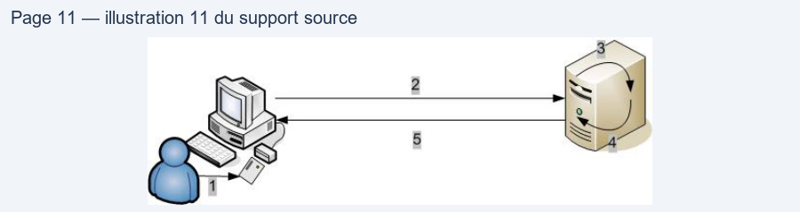
Référence du document : 1qk3cQ-TONKzFhhwdss6BMmBO0Wf2rCVE · SHA-256 fc957c480ed04687…
Correction · MSP_Systemes_clients_solution_172.16.0.128-26 · 27 pages transcrites
Correction originale : à consulter après avoir tenté l’exercice.
Page 1
MSP Systèmes clients - Solution adaptée au réseau 172.16.0.128/26
MSP SYSTÈMES CLIENTS
Solution complète, expliquée et adaptée
Réseau choisi : 172.16.0.128/26
Basé sur l’énoncé actuel, la note technique ANSSI, les ressources, les scripts et le corrigé modèle fournis.
Les noms et logins personnels restent à remplacer avant exécution.
Page 1
Texte relevé dans les illustrations
W10-<INITIALES>
DEB10-<INITIALES>
172.16.0.189
172.16.0.188
Windows 10 Pro
Debian 10
Réseau 172.16.0.128/26
W10-BINOME
DEB10-BINOME
172.16.0.187
172.16.0.186
Windows 10 Pro
Debian 10
Plage utilisable
: 172.16.0.129 à 172.16.0.190 - Broadcast
: 172.16.0.191
Page 2
MSP Systèmes clients - Solution adaptée au réseau 172.16.0.128/26
Sommaire
Sommaire automatique : mettre à jour le champ dans Word si nécessaire.
1. Analyse du dossier et règles de priorité
2. Paramètres à personnaliser et plan d’adressage
3. Partie 1 - Installation des systèmes
4. Partie 2 - Utilisateurs et environnement
5. Partie 3 - Stockage, partages et imprimantes
6. Partie 4 - Configuration avancée
7. Partie 5 - Installation des applications
8. Partie 6 - Sauvegarde et restauration
9. Partie 7 - LVM, montages avancés et tableur
10. Matrice de validation et livrables fournis
Page 2
Page 3
MSP Systèmes clients - Solution adaptée au réseau 172.16.0.128/26
1. Analyse complète du dossier
Tous les fichiers accessibles de l’archive ont été inventoriés et exploités. Les exécutables ont été identifiés et leurs
métadonnées/version ont été contrôlées, mais ils n’ont pas été lancés dans cet environnement Linux.
Catégorie
Fichier
Analyse / utilisation
Sujet
Enoncé MSP - Systèmes clients.pdf
14 pages. Référence prioritaire pour toutes
les tâches et contraintes.
Documentation
NP_MDP_NoteTech.pdf
11 pages. Recommandations ANSSI : mots
de passe distincts, non liés à l’identité,
robustes, temporaires à changer, stockage
prudent.
Ressource
7zip.exe
Installateur 7-Zip 19.00 x64 ; installation
silencieuse avec /S.
Ressource
Pilote_HP_LaserJet_M9050_MFP.exe
Pilote HP pour l’imprimante fictive.
Installation via port TCP/IP standard.
Ressource
Pilote_Xerox_Office_Color_C60C70.exe
Archive auto-extractible Xerox C60/C70 ;
utilisée pour le pool et les files prioritaires.
Tableur
Résultats_séminaire.xlsx
Classeur à compléter avec SOMME,
MOYENNE, MAX, MIN, NBVAL et SI/ET.
Corrigé
Modèle_Solution_MSP.pdf
143 pages. Référence de méthode et de
chemins graphiques, adaptée au sujet
actuel.
Scripts / CSV
création_groupes, création_utilisateur,
groupes.csv, utilisateurs.csv
Méthode d’import et de création en masse.
Plusieurs erreurs de guillemets,
d’encodage et de syntaxe ont été corrigées
dans les scripts fournis avec cette solution.
Tableurs corrigés
Résultats_séminaire_corrigé.xlsx,
Tableau_récap.xlsx
Valeurs et formules utilisées pour
contrôler les résultats et la convention de
nommage.
1.1 Règle de priorité appliquée
Priorité documentaire
1) Énoncé actuel. 2) Méthodes du cours et du corrigé modèle. 3) Amélioration technique uniquement lorsque
la méthode fournie est erronée, dangereuse ou ne satisfait pas le sujet actuel.
1.2 Incohérences détectées et décision retenue
Point
Contradiction
Décision appliquée
Réseau VMware
Utiliser Bridged, car le sujet actuel est
prioritaire.
Le sujet actuel demande Bridged ; le
corrigé modèle et le tableau récap
utilisent Host-only.
Mémoire Debian
Le sujet actuel impose 2048 Mo ; le corrigé
modèle montre 512 Mo.
Utiliser 2048 Mo.
Nombre de comptes
Le texte annonce 9 employés, mais le
tableau contient 10 personnes.
Créer les 10 comptes du tableau.
Page 3
| Catégorie | Fichier | Analyse / utilisation |
| Sujet | Enoncé MSP - Systèmes clients.pdf | 14 pages. Référence prioritaire pour toutes les tâches et contraintes. |
| Documentation | NP_MDP_NoteTech.pdf | 11 pages. Recommandations ANSSI : mots de passe distincts, non liés à l’identité, robustes, temporaires à changer, stockage prudent. |
| Ressource | 7zip.exe | Installateur 7-Zip 19.00 x64 ; installation silencieuse avec /S. |
| Ressource | Pilote_HP_LaserJet_M9050_MFP.exe | Pilote HP pour l’imprimante fictive. Installation via port TCP/IP standard. |
| Ressource | Pilote_Xerox_Office_Color_C60C70.exe | Archive auto-extractible Xerox C60/C70 ; utilisée pour le pool et les files prioritaires. |
| Tableur | Résultats_séminaire.xlsx | Classeur à compléter avec SOMME, MOYENNE, MAX, MIN, NBVAL et SI/ET. |
| Corrigé | Modèle_Solution_MSP.pdf | 143 pages. Référence de méthode et de chemins graphiques, adaptée au sujet actuel. |
| Scripts / CSV | création_groupes, création_utilisateur, groupes.csv, utilisateurs.csv | Méthode d’import et de création en masse. Plusieurs erreurs de guillemets, d’encodage et de syntaxe ont été corrigées dans les scripts fournis avec cette solution. |
| Tableurs corrigés | Résultats_séminaire_corrigé.xlsx, Tableau_récap.xlsx | Valeurs et formules utilisées pour contrôler les résultats et la convention de nommage. |
| Point | Contradiction | Décision appliquée |
| Réseau VMware | Le sujet actuel demande Bridged ; le corrigé modèle et le tableau récap utilisent Host-only. | Utiliser Bridged, car le sujet actuel est prioritaire. |
| Mémoire Debian | Le sujet actuel impose 2048 Mo ; le corrigé modèle montre 512 Mo. | Utiliser 2048 Mo. |
| Nombre de comptes | Le texte annonce 9 employés, mais le tableau contient 10 personnes. | Créer les 10 comptes du tableau. |
Page 4
MSP Systèmes clients - Solution adaptée au réseau 172.16.0.128/26
Point
Contradiction
Décision appliquée
Expiration des mots de passe
« N’expirent jamais » puis politique
Windows avec changement tous les 25
jours.
Sous Windows, appliquer 25 jours car
cette contrainte est plus précise et
vérifiable. Sous Debian, conserver sans
expiration sauf changement initial du
prestataire.
Adresses imprimantes
Appliquer exactement le sujet actuel : 168
et 169 en décimal.
Le corrigé modèle emploie des IP proches
des postes ; le sujet actuel impose des
troisièmes octets binaires 10101000 et
10101001.
deb-src
Le corrigé écrit parfois « décommenter »
alors que le sujet demande de commenter.
Commenter les lignes deb-src et la source
DVD.
Sauvegarde Debian
Le sujet demande tous les jours ; le corrigé
planifie seulement du lundi au vendredi.
Cron quotidien : 30 12 * * *.
SMB
Le corrigé évoque l’activation d’un ancien
support SMB.
Utiliser SMB 3.0 avec cifs-utils ; ne pas
activer SMB1.
Groupe documentation
Le sujet le demande sans le définir dans la
liste des services.
Créer un groupe supplémentaire
documentation et appliquer le bit setgid
à /services.
Page 4
| Point | Contradiction | Décision appliquée |
| Expiration des mots de passe | « N’expirent jamais » puis politique Windows avec changement tous les 25 jours. | Sous Windows, appliquer 25 jours car cette contrainte est plus précise et vérifiable. Sous Debian, conserver sans expiration sauf changement initial du prestataire. |
| Adresses imprimantes | Le corrigé modèle emploie des IP proches des postes ; le sujet actuel impose des troisièmes octets binaires 10101000 et 10101001. | Appliquer exactement le sujet actuel : 168 et 169 en décimal. |
| deb-src | Le corrigé écrit parfois « décommenter » alors que le sujet demande de commenter. | Commenter les lignes deb-src et la source DVD. |
| Sauvegarde Debian | Le sujet demande tous les jours ; le corrigé planifie seulement du lundi au vendredi. | Cron quotidien : 30 12 * * *. |
| SMB | Le corrigé évoque l’activation d’un ancien support SMB. | Utiliser SMB 3.0 avec cifs-utils ; ne pas activer SMB1. |
| Groupe documentation | Le sujet le demande sans le définir dans la liste des services. | Créer un groupe supplémentaire documentation et appliquer le bit setgid à /services. |
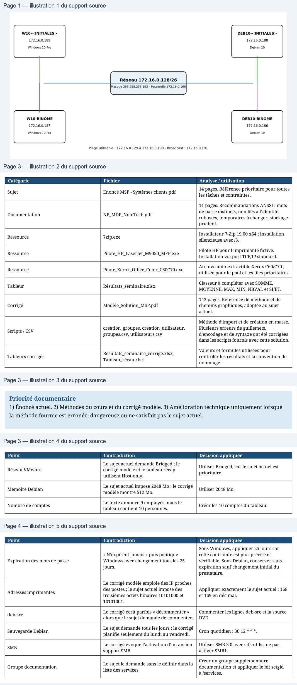
Page 5
MSP Systèmes clients - Solution adaptée au réseau 172.16.0.128/26
2. Paramètres à personnaliser et plan IP
2.1 Remplacements obligatoires
Variable
À remplacer par
Exemple
<INITIALES>
Vos initiales
AB
<VOTRE_LOGIN>
Première lettre du prénom + nom
jdupont
<VOTRE_PRENOM_NOM>
Votre identité
Jean Dupont
<LOGIN_BINOME>
Login de votre binôme
mmartin
<PRENOM_NOM_BINOME>
Identité du binôme
Marie Martin
Avant toute exécution
Remplacer les valeurs entre chevrons dans les scripts. Ne jamais exécuter une commande de disque avant
d’avoir contrôlé le numéro du disque avec list disk, detail disk, lsblk et fdisk -l.
2.2 Calcul du sous-réseau 172.16.0.128/26
Un préfixe /26 laisse 6 bits pour les hôtes : 2^6 = 64 adresses. Le bloc commence à .128 et se termine à .191. La
première adresse est le réseau et la dernière est le broadcast, donc 62 adresses sont utilisables.
Élément
Valeur
Pourquoi
Adresse réseau
172.16.0.128
Identifie le sous-réseau ; ne jamais
attribuer à une machine.
Masque
255.255.255.192
Équivalent décimal du /26.
Première IP utilisable
172.16.0.129
Premier hôte possible.
Dernière IP utilisable / passerelle
retenue
172.16.0.190
Le corrigé modèle place la passerelle
sur la dernière IP utilisable.
Broadcast
172.16.0.191
Adresse de diffusion ; ne jamais
attribuer.
Hypothèse de passerelle
La passerelle 172.16.0.190 reprend la méthode du corrigé modèle. Si le formateur ou le DHCP fournit une
autre passerelle/DNS, conserver les IP des postes mais remplacer la passerelle et le DNS par les valeurs
réellement fournies.
Page 5
| Variable | À remplacer par | Exemple |
| <INITIALES> | Vos initiales | AB |
| <VOTRE_LOGIN> | Première lettre du prénom + nom | jdupont |
| <VOTRE_PRENOM_NOM> | Votre identité | Jean Dupont |
| <LOGIN_BINOME> | Login de votre binôme | mmartin |
| <PRENOM_NOM_BINOME> | Identité du binôme | Marie Martin |
| Élément | Valeur | Pourquoi |
| Adresse réseau | 172.16.0.128 | Identifie le sous-réseau ; ne jamais attribuer à une machine. |
| Masque | 255.255.255.192 | Équivalent décimal du /26. |
| Première IP utilisable | 172.16.0.129 | Premier hôte possible. |
| Dernière IP utilisable / passerelle retenue | 172.16.0.190 | Le corrigé modèle place la passerelle sur la dernière IP utilisable. |
| Broadcast | 172.16.0.191 | Adresse de diffusion ; ne jamais attribuer. |
Page 6
MSP Systèmes clients - Solution adaptée au réseau 172.16.0.128/26
2.3 Adresses retenues
Équipement
Adresse
Masque
Passerelle
DNS conseillé
W10-<INITIALES>
172.16.0.189
255.255.255.192
172.16.0.190
172.16.0.190 ou DNS
fourni
DEB10-<INITIALES>
172.16.0.188
255.255.255.192
172.16.0.190
172.16.0.190 ou DNS
fourni
W10 du binôme
172.16.0.187
255.255.255.192
172.16.0.190
idem
Debian du binôme
172.16.0.186
255.255.255.192
172.16.0.190
idem
Les adresses hautes sont retenues pour reproduire la logique du corrigé modèle et limiter le risque d’utiliser les
premières adresses souvent réservées. Il faut néanmoins vérifier la plage DHCP avant de les fixer.
2.4 Adresses fictives des imprimantes
10101000₂ = 168 et 10101001₂ = 169. Le sujet impose de conserver le dernier octet du poste concerné.
Périphérique
Calcul
Adresse
HP LaserJet M9050 MFP
172.16 + 168 + dernier octet W10 (.189)
172.16.168.189
Xerox physique 1
172.16 + 168 + dernier octet Debian
(.188)
172.16.168.188
Xerox physique 2
172.16 + 169 + dernier octet Debian
(.188)
172.16.169.188
Pourquoi ces IP sont hors du /26 ?
Elles sont explicitement annoncées comme fictives. Elles servent à créer les ports TCP/IP et à démontrer la
configuration d’impression ; elles ne sont pas destinées à répondre au ping sur votre sous-réseau.
Page 6
Texte relevé dans les illustrations
W10-<INITIALES>
DEB10-<INITIALES>
172.16.0.189
172.16.0.188
Windows 10 Pro
Debian 10
Réseau 172.16.0.128/26
W10-BINOME
DEB10-BINOME
172.16.0.187
172.16.0.186
Windows 10 Pro
Debian 10
Plage utilisable
: 172.16.0.129 à 172.16.0.190 - Broadcast
: 172.16.0.191
| Équipement | Adresse | Masque | Passerelle | DNS conseillé |
| W10-<INITIALES> | 172.16.0.189 | 255.255.255.192 | 172.16.0.190 | 172.16.0.190 ou DNS fourni |
| DEB10-<INITIALES> | 172.16.0.188 | 255.255.255.192 | 172.16.0.190 | 172.16.0.190 ou DNS fourni |
| W10 du binôme | 172.16.0.187 | 255.255.255.192 | 172.16.0.190 | idem |
| Debian du binôme | 172.16.0.186 | 255.255.255.192 | 172.16.0.190 | idem |
| Périphérique | Calcul | Adresse |
| HP LaserJet M9050 MFP | 172.16 + 168 + dernier octet W10 (.189) | 172.16.168.189 |
| Xerox physique 1 | 172.16 + 168 + dernier octet Debian (.188) | 172.16.168.188 |
| Xerox physique 2 | 172.16 + 169 + dernier octet Debian (.188) | 172.16.169.188 |
Page 7
MSP Systèmes clients - Solution adaptée au réseau 172.16.0.128/26
2.5 Tableau des machines virtuelles
Machine
CPU
Mémoire
Disques
Réseau
Système
Bridged
W10-<INITIALES>
2 vCPU
4 Go conseillés (2
Go minimum)
Windows 10
Professionnel 64
bits
32 Go système + 40
Go données + 60 Go
sauvegarde si
nécessaire
Bridged
DEB10-<INITIALES>
1 vCPU
2048 Mo
20 Go système + 40
Go données + 2 x 20
Go pour LVM
Debian 10 avec
environnement
graphique
Page 7
| Machine | CPU | Mémoire | Disques | Réseau | Système |
| W10-<INITIALES> | 2 vCPU | 4 Go conseillés (2 Go minimum) | 32 Go système + 40 Go données + 60 Go sauvegarde si nécessaire | Bridged | Windows 10 Professionnel 64 bits |
| DEB10-<INITIALES> | 1 vCPU | 2048 Mo | 20 Go système + 40 Go données + 2 x 20 Go pour LVM | Bridged | Debian 10 avec environnement graphique |
Page 8
MSP Systèmes clients - Solution adaptée au réseau 172.16.0.128/26
3. Partie 1 - Installation des systèmes
3.1 Préparation VMware
1.
Créer W10-<INITIALES> et DEB10-<INITIALES> dans des dossiers distincts.
2.
Ajouter immédiatement les deux disques demandés, mais installer chaque système uniquement sur le premier
disque.
3.
Configurer l’interface réseau en Bridged. Ne pas utiliser Host-only malgré le corrigé modèle.
4.
Monter l’ISO Windows 10 Professionnel la plus récente et l’ISO DVD Debian 10.x.
5.
Créer un snapshot machine éteinte après chaque grande étape : installation, utilisateurs, stockage, imprimantes.
Pourquoi les snapshots machine éteinte ?
Ils permettent un retour fiable avant une opération risquée sur les partitions, /home, /var/log, le swap ou le
spool d’impression.
3.2 Installation de Windows 10 Professionnel
6.
Démarrer sur l’ISO et sélectionner Windows 10 Professionnel.
7.
Choisir l’installation personnalisée et sélectionner uniquement le disque de 32 Go.
8.
Créer le compte administrateur initial, appliquer les mises à jour de pilotes nécessaires, puis renommer le poste
W10-<INITIALES>.
9.
Configurer IPv4 statiquement avec 172.16.0.189/26, passerelle 172.16.0.190 et le DNS retenu.
10. Arrêter Windows Update selon la méthode du cours, puis appliquer la stratégie locale qui interdit la connexion aux
emplacements Windows Update sur Internet.
Chemins de configuration
services.msc Service : Windows Update (wuauserv) Type de démarrage : Manuel État : Arrêté
gpedit.msc Configuration ordinateur > Modèles d’administration > Composants Windows > Windows Update Activer : Ne pas se connecter aux emplacements Internet Windows Update
Vérification
hostname ipconfig /all sc query wuauserv
Pourquoi arrêter le service et ajouter une stratégie ?
Le service arrêté satisfait la méthode du corrigé. La stratégie évite qu’un utilisateur ou une tâche ne relance
ensuite une connexion aux serveurs Microsoft.
3.3 Installation de Debian 10
11. Démarrer l’installation graphique depuis l’ISO DVD.
12. Nommer la machine DEB10-<INITIALES> et configurer l’adresse 172.16.0.188/26.
Page 8
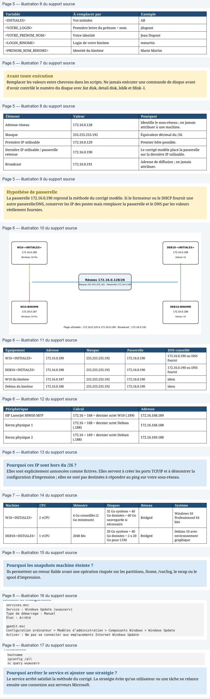
Page 9
MSP Systèmes clients - Solution adaptée au réseau 172.16.0.128/26
13. Choisir le partitionnement manuel et placer les partitions dans l’ordre indiqué ci-dessous afin que le swap soit suivi
par l’espace libre.
14. Conserver les systèmes de fichiers proposés par l’installateur pour chaque point de montage.
15. Laisser les paquets par défaut, conserver l’environnement graphique et choisir ftp.fr.debian.org comme miroir
français.
Partition
Taille
Point de montage / type
Remarque
/dev/sda1
512 Mo
/boot
Système de fichiers par
défaut de l’installateur.
/dev/sda2
17 Go
/
Racine du système.
/dev/sda3
1 Go
/home
Sera remplacée plus tard par
PROFILS.
/dev/sda4
256 Mo
swap
À agrandir à 1 Go avec
l’espace libre contigu.
Espace non alloué
environ 1 Go ou plus
aucun
Conservé pour agrandir le
swap.
Point important
Le numéro réel des partitions peut varier. Dans toutes les commandes ultérieures, utiliser lsblk -f et swapon --
show plutôt que de recopier aveuglément /dev/sda4.
3.4 Configuration réseau et tests
Sous Windows, utiliser les propriétés IPv4 de la carte réseau. Sous Debian graphique, utiliser NetworkManager.
La carte doit être désactivée/réactivée après modification si l’adresse ne se met pas à jour.
# Windows ipconfig /all ping 172.16.0.188 ping 172.16.0.187 ping 172.16.0.186
# Debian ip -br a ip route cat /etc/resolv.conf ping -c 4 172.16.0.189 ping -c 4 172.16.0.187 ping -c 4 172.16.0.186
Si le ping vers Windows échoue, autoriser la règle prédéfinie « Partage de fichiers et d’imprimantes (Demande
d’écho - Trafic entrant ICMPv4) » dans le pare-feu, plutôt que d’ouvrir tous les protocoles.
Contrôle à conserver dans la procédure
Capturer les quatre adresses, le masque /26, la passerelle, puis un ping réussi entre vos deux machines et vers
les deux machines du binôme.
Commandes de vérification
Page 9
| Partition | Taille | Point de montage / type | Remarque |
| /dev/sda1 | 512 Mo | /boot | Système de fichiers par défaut de l’installateur. |
| /dev/sda2 | 17 Go | / | Racine du système. |
| /dev/sda3 | 1 Go | /home | Sera remplacée plus tard par PROFILS. |
| /dev/sda4 | 256 Mo | swap | À agrandir à 1 Go avec l’espace libre contigu. |
| Espace non alloué | environ 1 Go ou plus | aucun | Conservé pour agrandir le swap. |
Page 10
MSP Systèmes clients - Solution adaptée au réseau 172.16.0.128/26
ipconfig /all ip -br a ping ...
Page 10
Page 11
MSP Systèmes clients - Solution adaptée au réseau 172.16.0.128/26
4. Partie 2 - Utilisateurs et environnement
4.1 Convention de nommage et comptes
Convention commune aux deux systèmes : groupes locaux en minuscules sans accent, préfixés par l_. Les groupes
de service sont l_direction, l_commercial, l_comptabilite, l_informatique et l_logistique. Le groupe documentation
est ajouté pour satisfaire la consigne de /services.
Service
Nom
Login
Direction
Rick Grimes
rgrimes
Commercial
Daryl Dixon
ddixon
Commercial
Gabriel Stokes
gstokes
Commercial
Maggie Greene
mgreene
Comptabilité
Eugene Porter
eporter
Comptabilité
Carol Peletier
cpeletier
Informatique
Vous-même
<VOTRE_LOGIN>
Informatique
Votre binôme / prestataire
<LOGIN_BINOME>
Logistique
Rosita Espinosa
respinosa
Logistique
Morgan Jones
mjones
Mots de passe
Utiliser un mot de passe temporaire unique d’au moins 12 caractères, sans nom/prénom, mélangeant
plusieurs types de caractères. Le fournir de manière sûre et le changer à la première connexion lorsque
demandé. Ne pas réutiliser le même mot de passe entre Windows et Debian.
4.2 Création sous Windows selon les trois méthodes imposées
Direction et comptabilité - Invite de commandes
net localgroup l_direction /add /comment:"Groupe local du service Direction" net localgroup l_comptabilite /add /comment:"Groupe local du service Comptabilite" net user rgrimes * /add /fullname:"Rick Grimes" /comment:"Direction" /expires:never net localgroup l_direction rgrimes /add net user eporter * /add /fullname:"Eugene Porter" /comment:"Comptabilite" /expires:never net localgroup l_comptabilite eporter /add net user cpeletier * /add /fullname:"Carol Peletier" /comment:"Comptabilite - interimaire" /expires:never net localgroup l_comptabilite cpeletier /add net user cpeletier /times:L-V,09:00-12:00
Le caractère * demande le mot de passe sans l’écrire dans le script. Le fichier 01_direction_comptabilite.cmd
fourni reprend ces commandes.
Informatique et logistique - PowerShell
$pwd = Read-Host 'Mot de passe temporaire' -AsSecureString New-LocalGroup -Name 'l_informatique' -Description 'Service Informatique' New-LocalUser -Name '<VOTRE_LOGIN>' -FullName '<VOTRE_PRENOM_NOM>' -Description 'Informatique - administrateur' -Password $pwd
Page 11
| Service | Nom | Login |
| Direction | Rick Grimes | rgrimes |
| Commercial | Daryl Dixon | ddixon |
| Commercial | Gabriel Stokes | gstokes |
| Commercial | Maggie Greene | mgreene |
| Comptabilité | Eugene Porter | eporter |
| Comptabilité | Carol Peletier | cpeletier |
| Informatique | Vous-même | <VOTRE_LOGIN> |
| Informatique | Votre binôme / prestataire | <LOGIN_BINOME> |
| Logistique | Rosita Espinosa | respinosa |
| Logistique | Morgan Jones | mjones |
Page 12
MSP Systèmes clients - Solution adaptée au réseau 172.16.0.128/26
Add-LocalGroupMember -Group 'l_informatique' -Member '<VOTRE_LOGIN>' Add-LocalGroupMember -Group 'Administrateurs' -Member '<VOTRE_LOGIN>'
Utiliser le script 02_informatique_logistique.ps1 pour les quatre comptes. Il demande les mots de passe de
manière sécurisée et ajoute les deux membres informatiques au groupe Administrateurs.
Commercial - Interface graphique
16. Exécuter lusrmgr.msc.
17. Créer le groupe l_commercial avec une description explicite.
18. Dans Utilisateurs, créer ddixon, gstokes et mgreene avec leur nom complet et la description Commercial.
19. Ajouter les trois comptes au groupe l_commercial.
20. Vérifier les membres depuis les propriétés du groupe.
4.3 Dossier Procédures sur le Bureau
21. Créer C:\Users\Default\Desktop\Procédures.
22. Créer le fichier Règlement intérieur.txt dans ce dossier.
23. Le profil Default sert de modèle aux futurs profils. Pour les profils déjà ouverts, recopier le dossier manuellement
ou exécuter 03_preparer_profils.ps1.
Pourquoi Default ?
Un simple dossier créé dans le Bureau de l’administrateur ne sera visible que pour ce compte. Le profil
Default garantit sa présence pour tout nouvel utilisateur.
4.4 Horaires de Carol Peletier
net user cpeletier /times:L-V,09:00-12:00 net user cpeletier
Sur certains systèmes, les noms de jours sont localisés différemment. Utiliser net help user si la syntaxe L-V est
refusée. Le contrôle doit afficher les heures autorisées du lundi au vendredi.
4.5 Stratégie de mots de passe et administrateurs
24. Ouvrir secpol.msc > Stratégies de comptes > Stratégie de mot de passe.
25. Définir longueur minimale = 12, durée de vie maximale = 25 jours et exigences de complexité = Activées.
26. Créer le compte adminsecours en CMD et l’ajouter au groupe Administrateurs.
27. Ajouter <VOTRE_LOGIN> et <LOGIN_BINOME> au groupe Administrateurs.
28. Forcer le changement du mot de passe du binôme à la première connexion.
net accounts /minpwlen:12 /maxpwage:25 net user adminsecours * /add /fullname:"Administrateur de secours" net localgroup Administrateurs adminsecours /add net localgroup Administrateurs <VOTRE_LOGIN> /add net localgroup Administrateurs <LOGIN_BINOME> /add net user <LOGIN_BINOME> /logonpasswordchg:yes net accounts
Contradiction assumée
La politique globale de 25 jours rend impossible « mot de passe n’expire jamais » pour tous les comptes. La
solution retient la contrainte spécifique de 25 jours, plus tardive et contrôlable dans secpol.msc.
Page 12
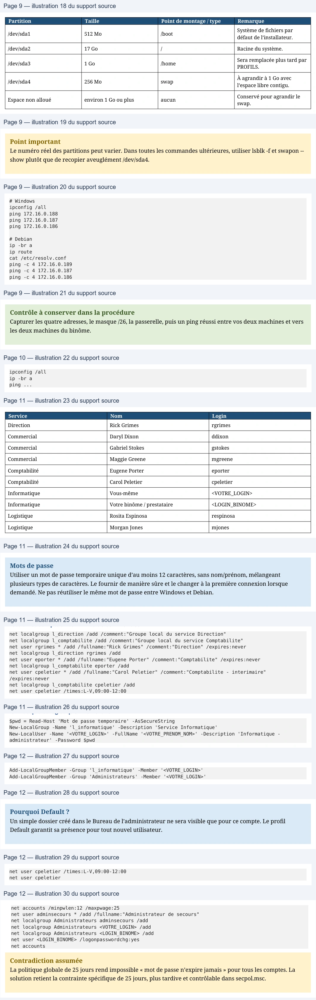
Page 13
MSP Systèmes clients - Solution adaptée au réseau 172.16.0.128/26
4.6 Comptes et groupes sous Debian
Exécuter le script 01_utilisateurs_groupes.sh après avoir remplacé les variables. Il installe KSH, crée les six
groupes, les dix comptes et force le changement initial du binôme.
chmod +x 01_utilisateurs_groupes.sh sudo ./01_utilisateurs_groupes.sh
# Contrôles getent passwd rgrimes ddixon gstokes mgreene eporter cpeletier <VOTRE_LOGIN> <LOGIN_BINOME> respinosa mjones getent group l_direction l_commercial l_comptabilite l_informatique l_logistique documentation chage -l <LOGIN_BINOME>
Correction du corrigé modèle
useradd -p n’accepte pas un mot de passe en clair : il attend un hash. Le script utilise passwd, ce qui est sûr et
fonctionnel. Le fichier correct est /etc/group, pas /etc/groups.
4.7 Stratégies locales pour les non-administrateurs Windows
29. Exécuter mmc, ajouter le composant Éditeur d’objet de stratégie de groupe, cliquer Parcourir > Utilisateurs > Non-
administrateurs.
30. Configuration utilisateur > Modèles d’administration > Système > Accès au stockage amovible : activer CD et DVD -
Refuser l’accès en lecture et en écriture.
31. Configuration utilisateur > Modèles d’administration > Composants Windows > Explorateur de fichiers : supprimer
les fonctions de gravure de CD.
32. Configuration utilisateur > Modèles d’administration > Système : activer Empêcher l’accès aux outils de
modification du Registre.
33. Configuration utilisateur > Modèles d’administration > Bureau > Bureau : activer Papier peint du Bureau et indiquer
un chemin local lisible par tous.
34. Dans la stratégie ordinateur, ouvrir les propriétés du Pare-feu Windows Defender et activer les profils Domaine,
Privé et Public.
35. Exécuter gpupdate /force et contrôler avec gpresult /r.
gpupdate /force gpresult /r netsh advfirewall show allprofiles
4.8 Sources APT et confort Vim
36. Ouvrir /etc/apt/sources.list avec Vim.
37. Commenter en une seule commande toutes les lignes deb-src non commentées.
38. Commenter la ligne du DVD.
39. Mettre à jour la base de paquets et installer vim.
40. Activer la coloration, la numérotation et le mode non compatible dans /etc/vim/vimrc.local.
sudo vim /etc/apt/sources.list :g/^\s*deb-src/s/^/#/ :g/^\s*deb cdrom:/s/^/#/ :wq
sudo apt update
Page 13
Page 14
MSP Systèmes clients - Solution adaptée au réseau 172.16.0.128/26
sudo apt install -y vim sudo tee /etc/vim/vimrc.local >/dev/null <<'EOF' set nocompatible syntax on set number EOF
Dans Vim, :g applique la substitution à toutes les lignes correspondantes. Le motif ne cible que les lignes actives,
donc il évite de doubler les #.
Contrôle à conserver dans la procédure
Capturer le fichier sources.list avec les lignes commentées et un fichier ouvert dans Vim montrant les
numéros de lignes et la coloration.
Commandes de vérification
grep -nE '^(deb-src|deb cdrom:)' /etc/apt/sources.list || echo 'Toutes les lignes demandées sont commentées' vim --version | head
Page 14
Page 15
MSP Systèmes clients - Solution adaptée au réseau 172.16.0.128/26
5. Partie 3 - Stockage, partages et imprimantes
5.1 Partition DATA de 15 Go sous Windows avec DISKPART
Risque de destruction
La commande clean n’est pas nécessaire ici et n’est volontairement pas utilisée. Vérifier que le disque
sélectionné est bien le second disque de 40 Go.
diskpart list disk select disk 1 detail disk offline disk online disk convert mbr create partition primary size=15360 format fs=ntfs quick label=DATA assign letter=D list volume exit
15360 Mo correspond à 15 Gio. Si le formateur attend la convention du corrigé modèle, size=15000 donne environ
15 Go décimaux.
5.2 Partitions PROFILS, DATA et LOGS sous Debian
41. Identifier le disque de 40 Go avec lsblk -o NAME,SIZE,MODEL,TYPE,MOUNTPOINTS.
42. Lancer fdisk /dev/sdb et créer trois partitions primaires : +15G, +15G, puis tout le reste.
43. Écrire avec w, installer xfsprogs puis formater avec les labels demandés.
sudo fdisk /dev/sdb # n, p, 1, Entrée, +15G # n, p, 2, Entrée, +15G # n, p, 3, Entrée, Entrée # w sudo partprobe /dev/sdb sudo apt install -y xfsprogs sudo mkfs.ext4 -L PROFILS /dev/sdb1 sudo mkfs.ext4 -L DATA /dev/sdb2 sudo mkfs.xfs -f -L LOGS /dev/sdb3 lsblk -f
5.3 Remplacement définitif de /home par PROFILS
44. Éteindre la VM et créer un snapshot.
45. Démarrer en mode secours afin qu’aucun utilisateur n’écrive dans /home.
46. Monter PROFILS temporairement et copier toutes les données avec les droits.
47. Commenter l’ancienne ligne /home dans /etc/fstab et ajouter LABEL=PROFILS.
48. Redémarrer et vérifier que les comptes retrouvent leurs fichiers.
sudo systemctl isolate rescue.target sudo mkdir -p /mnt/profils sudo mount LABEL=PROFILS /mnt/profils sudo cp -a /home/. /mnt/profils/ sudo vim /etc/fstab # Commenter l'ancienne ligne /home # Ajouter :
Page 15
Page 16
MSP Systèmes clients - Solution adaptée au réseau 172.16.0.128/26
LABEL=PROFILS /home ext4 defaults 0 2 sudo reboot
Contrôle à conserver dans la procédure
Le point /home doit provenir de LABEL=PROFILS et un utilisateur doit pouvoir créer un fichier dans son
profil.
Commandes de vérification
findmnt /home df -hT /home su - ddixon -c 'touch ~/test-profils && ls -l ~/test-profils'
5.4 Montage de DATA dans /services et confidentialité
sudo mkdir -p /services
sudo sh -c 'echo "LABEL=DATA /services ext4 defaults 0 2" >> /etc/fstab'
sudo mount -a
sudo mkdir -p /services/{commercial,comptabilite,direction,informatique,logistique}
sudo chown root:documentation /services
sudo chmod 2770 /services
sudo chown root:l_commercial /services/commercial
sudo chown root:l_comptabilite /services/comptabilite
sudo chown root:l_direction /services/direction
sudo chown root:l_informatique /services/informatique
sudo chown root:l_logistique /services/logistique
sudo chmod 2770 /services/{commercial,comptabilite,direction,informatique,logistique}
Le bit 2 (setgid) force les nouveaux fichiers à hériter du groupe du dossier. À la racine, ils appartiennent à
documentation ; dans chaque dossier de service, ils héritent du groupe du service, ce qui permet la
confidentialité.
Contrôle à conserver dans la procédure
La première commande doit réussir et la seconde doit renvoyer Permission non accordée.
Commandes de vérification
su - ddixon -c 'touch /services/commercial/test-ok' su - ddixon -c 'touch /services/comptabilite/test-interdit'
5.5 Dossiers NTFS Commerciaux et Support_Info
49. Créer D:\donnees\Commerciaux et D:\Support_Info.
50. Dans Sécurité > Avancé, désactiver l’héritage et supprimer les autorisations héritées.
51. Conserver SYSTEM et Administrateurs en contrôle total.
52. Accorder Modifier au groupe l_commercial sur Commerciaux et au groupe l_informatique sur Support_Info.
53. Utiliser l’onglet Accès effectif pour tester un membre autorisé et un utilisateur étranger au service.
mkdir D:\donnees\Commerciaux mkdir D:\Support_Info icacls D:\donnees\Commerciaux /inheritance:r icacls D:\donnees\Commerciaux /grant:r "SYSTEM:(OI)(CI)F" "Administrateurs:(OI)(CI)F" "l_commercial:(OI) (CI)M" icacls D:\Support_Info /inheritance:r icacls D:\Support_Info /grant:r "SYSTEM:(OI)(CI)F" "Administrateurs:(OI)(CI)F" "l_informatique:(OI)(CI)M
Page 16
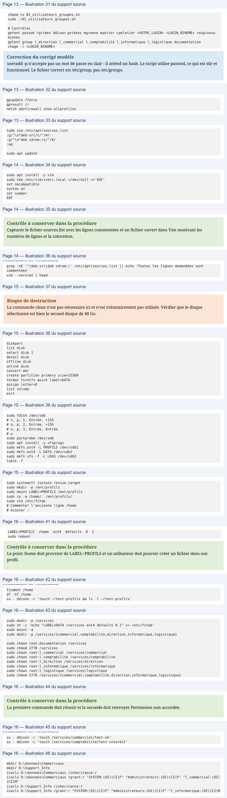
Page 17
MSP Systèmes clients - Solution adaptée au réseau 172.16.0.128/26
Règle NTFS + partage
Lors d’un accès réseau, le droit effectif est l’intersection des permissions de partage et NTFS. Il faut donc
contrôler les deux niveaux.
5.6 Partage caché Support_Info$ et lecteur U:
Exécuter le script 04_partage_support_info.ps1. Le signe $ rend le partage non visible lors de l’exploration, mais il
reste accessible avec son chemin exact.
New-SmbShare -Name 'Support_Info$' -Path 'D:\Support_Info' -ChangeAccess 'l_informatique' -FullAccess 'Administrateurs' Get-SmbShare net share
Méthode 1 - CMD persistante sur le poste du binôme
net use U: \\172.16.0.189\Support_Info$ /persistent:yes U: echo Test d'écriture > test-binome.txt
Méthode 2 - PowerShell ou interface graphique
New-PSDrive -Name U -PSProvider FileSystem -Root '\\172.16.0.189\Support_Info$' -Persist
Méthode graphique équivalente : Explorateur > Ce PC > Connecter un lecteur réseau > U: > chemin UNC >
Reconnexion à l’ouverture de session.
5.7 Imprimante HP LaserJet M9050 MFP
54. Extraire ou installer le pilote HP fourni.
55. Ouvrir printmanagement.msc, ajouter un port TCP/IP standard avec 172.16.168.189. Si la détection échoue, choisir
Carte réseau générique et désactiver la requête SNMP.
56. Ajouter l’imprimante avec le pilote HP, la nommer HP LaserJet M9050 MFP et la partager sous HP-M9050.
57. Dans Sécurité : Tout le monde = Imprimer ; l_comptabilite = Imprimer + Gérer les documents ; l_informatique =
Imprimer + Gérer cette imprimante + Gérer les documents.
58. Depuis le W10 du binôme, ouvrir \\172.16.0.189, connecter l’imprimante et la définir par défaut.
Pourquoi « Gérer les documents » pour la comptabilité ?
Ce droit permet de supprimer une impression bloquée sans permettre de modifier toute la configuration de
l’imprimante.
5.8 Pool Xerox, horaires et priorités
59. Installer le pilote Xerox C60/C70 fourni.
60. Créer les ports TCP/IP 172.16.168.188 et 172.16.169.188.
61. Créer une imprimante Xerox-Comptabilite, ouvrir Ports, activer le pool et sélectionner les deux ports.
62. Sécurité : supprimer Tout le monde, autoriser l_comptabilite à imprimer et l_informatique en contrôle total.
63. Avancé : définir Disponible de 19:00 à 03:00.
64. Créer une deuxième file Xerox-Direction utilisant le même pilote et les mêmes ports ; priorité 99 contre priorité 1
pour la file normale.
65. Limiter Xerox-Direction au groupe l_direction et conserver l_informatique en contrôle total.
Page 17
Page 18
MSP Systèmes clients - Solution adaptée au réseau 172.16.0.128/26
Pourquoi deux files ?
Deux files logiques peuvent envoyer vers les mêmes ports physiques. Windows traite d’abord la file ayant la
priorité la plus haute, ce qui donne la priorité aux directeurs.
5.9 Déplacement du spool vers D:
66. Créer D:\Spool avec les droits SYSTEM et Administrateurs.
67. Arrêter le service Spouleur d’impression.
68. Dans les propriétés avancées du serveur d’impression, remplacer le dossier de spool par D:\Spool, ou exécuter
05_deplacer_spool.ps1.
69. Redémarrer le service et envoyer une page de test.
Stop-Service Spooler -Force New-Item D:\Spool -ItemType Directory -Force Set-ItemProperty 'HKLM:\SYSTEM\CurrentControlSet\Control\Print\Printers' -Name DefaultSpoolDirectory -Value 'D:\Spool' Start-Service Spooler
Page 18
Page 19
MSP Systèmes clients - Solution adaptée au réseau 172.16.0.128/26
6. Partie 4 - Configuration avancée
6.1 GRUB à 2 secondes
sudo vim /etc/default/grub # Modifier : GRUB_TIMEOUT=2 sudo update-grub grep '^GRUB_TIMEOUT=' /etc/default/grub
update-grub régénère le fichier réellement lu au démarrage ; modifier uniquement /etc/default/grub sans cette
commande ne suffit pas.
6.2 Agrandissement définitif du swap à 1 Go
Snapshot obligatoire
Cette opération modifie la table du premier disque. Relever avec précision le numéro de la partition swap et
l’espace libre avant de continuer.
swapon --show lsblk -f sudo swapoff -a sudo fdisk /dev/sda # p : relever la partition swap et l'espace libre # d : supprimer uniquement l'ancienne partition swap # n : recréer la partition swap à 1G dans l'espace disponible # t : type Linux swap (82 sur MBR) # w sudo partprobe /dev/sda sudo mkswap -L SWAP /dev/sda4 sudo vim /etc/fstab # Remplacer l'ancienne ligne par : LABEL=SWAP none swap sw 0 0 sudo swapon -a swapon --show free -h
Le swap ne contient pas de données à conserver : il peut être désactivé, recréé plus grand, puis réactivé.
Adapter /dev/sda4 au numéro réellement observé.
6.3 Mise à jour Debian
sudo apt update sudo apt full-upgrade -y sudo apt autoremove --purge -y
6.4 Bureau à distance Windows avec NLA
70. Panneau de configuration > Système > Paramètres d’utilisation à distance.
71. Autoriser les connexions distantes et conserver l’authentification au niveau du réseau (NLA).
72. Ajouter <LOGIN_BINOME> ou le groupe l_informatique aux Utilisateurs du Bureau à distance.
73. Vérifier l’écoute sur le port 3389 puis demander au binôme de se connecter.
Add-LocalGroupMember -Group 'Utilisateurs du Bureau à distance' -Member '<LOGIN_BINOME>' netstat -ano | findstr :3389 Get-NetTCPConnection -LocalPort 3389 -State Listen
Page 19
Page 20
MSP Systèmes clients - Solution adaptée au réseau 172.16.0.128/26
Contrôle à conserver dans la procédure
Capturer la ligne LISTENING sur 0.0.0.0:3389 ou [::]:3389 et une session RDP réussie depuis le poste du binôme.
Commandes de vérification
netstat -ano | findstr :3389
Page 20
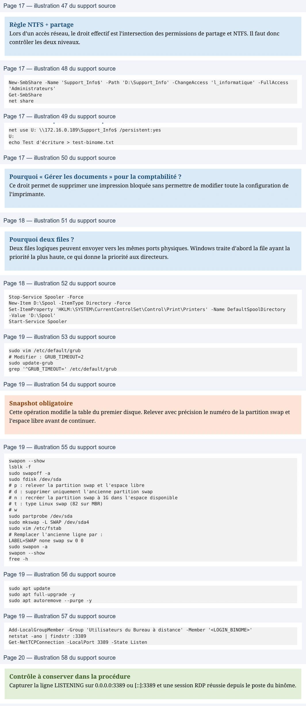
Page 21
MSP Systèmes clients - Solution adaptée au réseau 172.16.0.128/26
7. Partie 5 - Installation des applications
7.1 Installation silencieuse de 7-Zip sous Windows
La ressource fournie est l’installateur 7-Zip 19.00 x64. L’option /S lance le mode silencieux et /D définit le dossier,
à placer en dernier.
cd <DOSSIER_RESSOURCES> 7zip.exe /S "C:\Program Files\7-Zip\7z.exe" i
Aucune boîte de dialogue ne doit apparaître, hors éventuelle demande UAC. La seconde commande prouve que le
programme est installé.
7.2 Client RDP graphique sous Debian : Remmina
sudo apt update sudo apt install -y remmina remmina
74. Créer un profil RDP vers 172.16.0.189.
75. Renseigner le login Windows autorisé et son mot de passe.
76. Conserver la négociation de sécurité automatique/NLA.
77. Se connecter et capturer le Bureau Windows affiché dans Remmina.
7.3 Installation de Webmin
La méthode du corrigé installe un paquet .deb, laisse dpkg signaler les dépendances, puis les répare avec apt.
Utiliser le paquet officiel téléchargé pour Debian.
sudo apt update sudo apt install -y perl openssl libauthen-pam-perl libio-pty-perl apt-show-versions sudo dpkg -i webmin_*.deb sudo apt --fix-broken install -y sudo systemctl enable --now webmin sudo ss -lntp | grep 10000
Accéder depuis le navigateur à https://172.16.0.188:10000/. Le certificat auto-signé provoque un avertissement
normal dans ce laboratoire. S’authentifier avec root ou un compte autorisé.
Page 21
Page 22
MSP Systèmes clients - Solution adaptée au réseau 172.16.0.128/26
8. Partie 6 - Sauvegarde et restauration
8.1 Sauvegarde quotidienne Debian à 12 h 30
Le script 02_sauvegarde_quotidienne.sh crée deux archives tar datées : une pour /home et une pour /services. Il
les copie ensuite vers le Debian du binôme par SCP.
78. Sur le Debian du binôme, installer openssh-server et créer /srv/sauvegardes/DEB10-<INITIALES> avec les droits du
compte distant.
79. Sur votre Debian, installer openssh-client, générer une clé SSH pour root et copier la clé publique avec ssh-copy-id.
80. Adapter REMOTE_USER, REMOTE_HOST et REMOTE_DIR dans le script.
81. Tester le script manuellement avant de le planifier.
82. Ajouter une tâche cron quotidienne à 12 h 30.
sudo apt install -y openssh-client sudo ssh-keygen -t ed25519 -f /root/.ssh/id_ed25519 sudo ssh-copy-id -i /root/.ssh/id_ed25519.pub <LOGIN_BINOME>@172.16.0.186 sudo install -m 700 02_sauvegarde_quotidienne.sh /usr/local/sbin/sauvegarde-msp sudo /usr/local/sbin/sauvegarde-msp sudo crontab -e 30 12 * * * /usr/local/sbin/sauvegarde-msp >> /var/log/sauvegarde-msp.log 2>&1
Pourquoi une clé SSH ?
Cron ne peut pas répondre à une demande de mot de passe interactive. La clé permet une copie automatique ;
elle doit être protégée par des permissions strictes.
Contrôle à conserver dans la procédure
Les deux archives doivent exister localement et sur la machine distante.
Commandes de vérification
sudo crontab -l ls -lh /var/backups/msp ssh <LOGIN_BINOME>@172.16.0.186 ls -lh /srv/sauvegardes/DEB10-<INITIALES>
8.2 Image système Windows
83. Ajouter le disque de 60 Go dans VMware, l’initialiser et le formater en NTFS avec une lettre libre, par exemple E:.
84. Ouvrir Panneau de configuration > Sauvegarder et restaurer (Windows 7) > Créer une image système.
85. Choisir le disque de 60 Go comme destination et inclure les volumes critiques proposés.
86. Lancer la sauvegarde et vérifier la présence du dossier WindowsImageBackup.
Alternative en ligne de commande
wbadmin start backup -backupTarget:E: -include:C: -allCritical -quiet wbadmin get versions
8.3 Sauvegarde du dossier Support_Info vers le W10 du binôme à 12 h 45
87. Sur le W10 du binôme, créer dans son partage Support_Info$ un dossier Sauvegarde_W10_<INITIALES>.
88. Ouvrir Sauvegarder et restaurer > Configurer la sauvegarde > Enregistrer sur un réseau.
89. Saisir \\172.16.0.187\Support_Info$\Sauvegarde_W10_<INITIALES> et un compte autorisé.
90. Choisir Me laisser choisir, sélectionner D:\Support_Info et décocher l’image système.
Page 22
Page 23
MSP Systèmes clients - Solution adaptée au réseau 172.16.0.128/26
91. Créer la planification quotidienne. Si l’interface ne propose pas 12 h 45, modifier la tâche AutomaticBackup dans le
Planificateur de tâches.
Pourquoi un sous-dossier dédié ?
Il évite de mélanger les sauvegardes de plusieurs postes et simplifie la restauration et la preuve de
fonctionnement.
8.4 Points de restauration : 8 % sur C:
92. Ouvrir Protection du système.
93. Sélectionner C: > Configurer > Activer la protection du système.
94. Placer l’utilisation maximale à 8 %.
95. Créer un point nommé Avant_MSP_Final et vérifier qu’il apparaît.
Enable-ComputerRestore -Drive 'C:\' vssadmin resize shadowstorage /For=C: /On=C: /MaxSize=8% Checkpoint-Computer -Description 'Avant_MSP_Final' -RestorePointType 'MODIFY_SETTINGS'
Page 23
Page 24
MSP Systèmes clients - Solution adaptée au réseau 172.16.0.128/26
9. Partie 7 - Pour aller plus loin
9.1 Montage permanent de LOGS dans /var/log sans perte
96. Créer un snapshot machine éteinte.
97. Passer en mode secours pour réduire les écritures dans /var/log.
98. Monter la partition LOGS dans un emplacement temporaire et copier les journaux en préservant les attributs.
99. Ajouter LABEL=LOGS dans /etc/fstab puis monter la nouvelle partition sur /var/log.
100.Redémarrer et vérifier que de nouvelles lignes sont écrites.
sudo systemctl isolate rescue.target sudo mkdir -p /mnt/logs sudo mount LABEL=LOGS /mnt/logs sudo cp -a /var/log/. /mnt/logs/ sudo sh -c 'echo "LABEL=LOGS /var/log xfs defaults 0 0" >> /etc/fstab' sudo mount -a sudo reboot findmnt /var/log sudo tail -n 30 /var/log/syslog
Pourquoi cp -a ?
cp -a conserve propriétaires, groupes, permissions, dates et liens. Une copie simple risquerait d’empêcher
certains services d’écrire leurs journaux.
9.2 Montage du partage Windows depuis Debian avec SMB 3
101.Installer cifs-utils.
102.Créer /mnt/support_info et un fichier d’identifiants root-only.
103.Ajouter le partage caché du W10 du binôme dans /etc/fstab avec vers=3.0 et _netdev.
104.Monter et tester la création d’un fichier.
sudo apt install -y cifs-utils sudo mkdir -p /mnt/support_info sudo tee /root/.smb-support >/dev/null <<'EOF' username=<LOGIN_BINOME> password=<MOT_DE_PASSE_WINDOWS> EOF sudo chmod 600 /root/.smb-support sudo sh -c 'echo "//172.16.0.187/Support_Info$ /mnt/support_info cifs credentials=/root/.smb- support,vers=3.0,iocharset=utf8,uid=<VOTRE_LOGIN>,gid=l_informatique,file_mode=0660,dir_mode=0770,_netde v,nofail 0 0" >> /etc/fstab' sudo mount -a findmnt /mnt/support_info touch /mnt/support_info/test-debian.txt
Ne pas activer SMB1
Windows 10 et cifs-utils savent utiliser SMB2/SMB3. SMB1 est obsolète et inutile pour cette tâche.
9.3 Déplacement du fichier de pagination Windows vers D:
105.Système > Paramètres système avancés > Performances > Paramètres > Avancé > Mémoire virtuelle > Modifier.
106.Décocher la gestion automatique.
Page 24
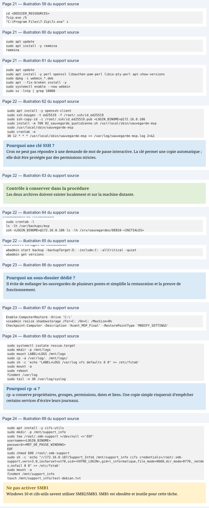
Page 25
MSP Systèmes clients - Solution adaptée au réseau 172.16.0.128/26
107.Sélectionner C: > Aucun fichier d’échange > Définir.
108.Sélectionner D: > Taille gérée par le système > Définir.
109.Valider et redémarrer. Vérifier la présence de D:\pagefile.sys.
9.4 Volume LVM de 32 Go monté sur /opt
110.Ajouter deux disques SCSI de 20 Go et vérifier qu’ils sont /dev/sdc et /dev/sdd.
111.Installer lvm2, créer les volumes physiques, le groupe vg_applications et le volume logique lv_opt de 32 Go.
112.Formater en ext4, copier le contenu actuel de /opt puis ajouter le montage permanent.
113.Le script 03_lvm_opt.sh automatise ces opérations après une confirmation explicite.
sudo pvcreate /dev/sdc /dev/sdd sudo vgcreate vg_applications /dev/sdc /dev/sdd sudo lvcreate -L 32G -n lv_opt vg_applications sudo mkfs.ext4 -L OPT /dev/vg_applications/lv_opt sudo mkdir -p /mnt/nouveau_opt sudo mount /dev/vg_applications/lv_opt /mnt/nouveau_opt sudo cp -a /opt/. /mnt/nouveau_opt/ # Ajouter l'UUID dans /etc/fstab puis : sudo mount -a pvs vgs lvs findmnt /opt
Pourquoi copier /opt avant le montage ?
Monter un nouveau volume sur /opt masque les fichiers déjà présents. La copie évite de perdre l’accès aux
applications existantes.
9.5 Formules du classeur Résultats_séminaire.xlsx
Zone
Formule française à saisir puis recopier
F5 - Total par élève
=SOMME(B5:E5)
G5 - Moyenne par élève
=MOYENNE(B5:E5)
I5 - Appréciation
=SI(ET(G5>10;H5>10);"Bien";SI(ET(G5<=10;H5>=10);"En
progrès";SI(ET(G5>=10;H5<10);"Trop d'absences";"En danger!")))
B15 - Total par matière
=SOMME(B5:B12)
B16 - Moyenne par matière
=MOYENNE(B5:B12)
B17 - Note maximum
=MAX(B5:B12)
B18 - Note minimum
=MIN(B5:B12)
B19 - Nombre d’élèves
=NBVAL(A5:A12)
Recopier F5:G5 et I5 jusqu’à la ligne 12. Recopier B15:B18 vers les colonnes C à E. Le classeur
Resultats_seminaire_solution_complete.xlsx fourni contient toutes les formules, y compris celles manquantes
dans certaines lignes du corrigé distribué.
Page 25
| Zone | Formule française à saisir puis recopier |
| F5 - Total par élève | =SOMME(B5:E5) |
| G5 - Moyenne par élève | =MOYENNE(B5:E5) |
| I5 - Appréciation | =SI(ET(G5>10;H5>10);"Bien";SI(ET(G5<=10;H5>=10);"En progrès";SI(ET(G5>=10;H5<10);"Trop d'absences";"En danger!"))) |
| B15 - Total par matière | =SOMME(B5:B12) |
| B16 - Moyenne par matière | =MOYENNE(B5:B12) |
| B17 - Note maximum | =MAX(B5:B12) |
| B18 - Note minimum | =MIN(B5:B12) |
| B19 - Nombre d’élèves | =NBVAL(A5:A12) |
Page 26
MSP Systèmes clients - Solution adaptée au réseau 172.16.0.128/26
Cas limite de la consigne
La règle ne définit pas explicitement le cas moyenne > 10 et assiduité = 10. La formule du corrigé utilise En
danger! comme cas par défaut. Les données fournies ne contiennent pas cette combinaison, donc les résultats
attendus restent identiques.
10. Matrice de validation finale
Bloc
Preuve minimale à insérer dans votre procédure
VM et réseau
Paramètres VMware, noms des VM, ipconfig /all, ip -br a, pings
croisés.
Utilisateurs Windows
net user, listes de membres des groupes, compte Carol et heures,
secpol.msc, Administrateurs.
Utilisateurs Debian
getent passwd, getent group, shell KSH du binôme, chage -l.
GPO / Vim
gpresult /r, pare-feu actif, refus regedit sur un non-admin,
sources.list et Vim numéroté.
Disques
DISKPART list volume, lsblk -f, findmnt /home, findmnt /services.
Permissions
Accès effectif Windows ; test autorisé/interdit sous Debian.
Partage
Get-SmbShare, net share, lecteur U: persistant et fichier créé
depuis le binôme.
Imprimantes
Ports TCP/IP, permissions, pool, deux files/priorités, dossier D:
\Spool.
Avancé
GRUB_TIMEOUT=2, swap 1 Go, paquets mis à jour, RDP 3389 et
connexion réussie.
Applications
7-Zip installé sans assistant, Remmina connecté, Webmin sur le
port 10000.
Sauvegardes
Archives tar locales et distantes, cron, image système,
sauvegarde Windows à 12 h 45, point de restauration.
LVM et tableur
pvs/vgs/lvs, findmnt /opt, formules et résultats du classeur.
10.1 Fichiers fournis avec ce document
Fichier
Rôle
scripts/windows/01_direction_comptabilite.cmd
Création CMD des groupes/comptes Direction et Comptabilité,
horaires de Carol, admin de secours.
scripts/windows/02_informatique_logistique.ps1
Création PowerShell des comptes Informatique et Logistique et
droits administrateurs.
scripts/windows/03_preparer_profils.ps1
Création du dossier Procédures dans Default et les profils
existants.
scripts/windows/04_partage_support_info.ps1
Permissions NTFS et partage caché Support_Info$.
scripts/windows/05_deplacer_spool.ps1
Déplacement du spool vers D:\Spool.
scripts/debian/01_utilisateurs_groupes.sh
Création des groupes et dix comptes Debian, KSH et changement
initial.
scripts/debian/02_sauvegarde_quotidienne.sh
Archives tar, copie SCP et rétention locale.
Page 26
| Bloc | Preuve minimale à insérer dans votre procédure |
| VM et réseau | Paramètres VMware, noms des VM, ipconfig /all, ip -br a, pings croisés. |
| Utilisateurs Windows | net user, listes de membres des groupes, compte Carol et heures, secpol.msc, Administrateurs. |
| Utilisateurs Debian | getent passwd, getent group, shell KSH du binôme, chage -l. |
| GPO / Vim | gpresult /r, pare-feu actif, refus regedit sur un non-admin, sources.list et Vim numéroté. |
| Disques | DISKPART list volume, lsblk -f, findmnt /home, findmnt /services. |
| Permissions | Accès effectif Windows ; test autorisé/interdit sous Debian. |
| Partage | Get-SmbShare, net share, lecteur U: persistant et fichier créé depuis le binôme. |
| Imprimantes | Ports TCP/IP, permissions, pool, deux files/priorités, dossier D: \Spool. |
| Avancé | GRUB_TIMEOUT=2, swap 1 Go, paquets mis à jour, RDP 3389 et connexion réussie. |
| Applications | 7-Zip installé sans assistant, Remmina connecté, Webmin sur le port 10000. |
| Sauvegardes | Archives tar locales et distantes, cron, image système, sauvegarde Windows à 12 h 45, point de restauration. |
| LVM et tableur | pvs/vgs/lvs, findmnt /opt, formules et résultats du classeur. |
| Fichier | Rôle |
| scripts/windows/01_direction_comptabilite.cmd | Création CMD des groupes/comptes Direction et Comptabilité, horaires de Carol, admin de secours. |
| scripts/windows/02_informatique_logistique.ps1 | Création PowerShell des comptes Informatique et Logistique et droits administrateurs. |
| scripts/windows/03_preparer_profils.ps1 | Création du dossier Procédures dans Default et les profils existants. |
| scripts/windows/04_partage_support_info.ps1 | Permissions NTFS et partage caché Support_Info$. |
| scripts/windows/05_deplacer_spool.ps1 | Déplacement du spool vers D:\Spool. |
| scripts/debian/01_utilisateurs_groupes.sh | Création des groupes et dix comptes Debian, KSH et changement initial. |
| scripts/debian/02_sauvegarde_quotidienne.sh | Archives tar, copie SCP et rétention locale. |
Page 27
MSP Systèmes clients - Solution adaptée au réseau 172.16.0.128/26
Fichier
Rôle
scripts/debian/03_lvm_opt.sh
Création LVM de 32 Go et montage sécurisé de /opt.
tableur/Resultats_seminaire_solution_complete.xlsx
Classeur complété avec toutes les formules.
Page 27
| Fichier | Rôle |
| scripts/debian/03_lvm_opt.sh | Création LVM de 32 Go et montage sécurisé de /opt. |
| tableur/Resultats_seminaire_solution_complete.xlsx | Classeur complété avec toutes les formules. |
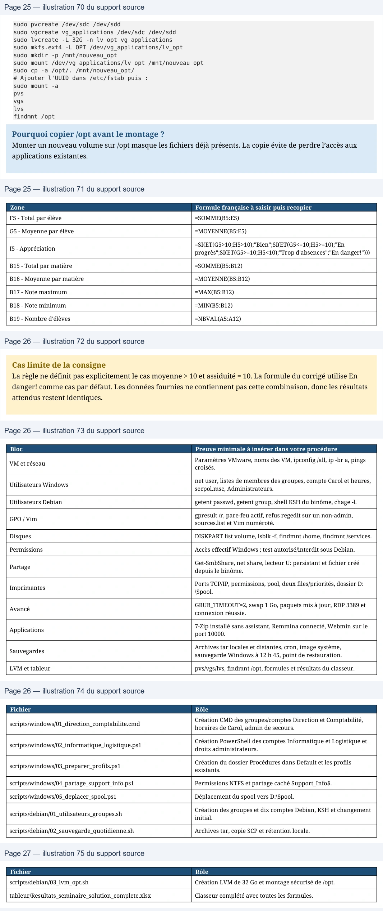
Référence du document : 1_JPJfmmHFM8G1DMi4S2wR1lFDzt0DV_c · SHA-256 7857985d194bb795…
Correction · Modèle_Solution_MSP · 143 pages transcrites
Correction originale : à consulter après avoir tenté l’exercice.
Page 1
MSP systèmes clients
Avant de démarrer ce TP, il convient d’avoir suivi les vidéos des cours Outils
collaboratifs offices 365, Base des réseaux, Windows client, Linux client.
Durée estimée
4 jours et 2 heures
Énoncé
1. Partie 1 – Installation des systèmes
1.1 Présentation
L’objectif de cette mise en situation professionnelle est d’installer et configurer
progressivement deux systèmes d’exploitation : Microsoft Windows 10 et Debian 10.
DHCP
1.1.1 Vous installerez 2 systèmes clients à l’aide de l’outil de virtualisation VMware
Workstation en respectant les caractéristiques spécifiques qui vous seront fournies
plus tard.
1.1.2 Certaines tâches demandées nécessiteront de travailler en binôme.
Texte relevé dans les illustrations
Li
—
W10-
DEB10-
Adresse IPv4
:
Adresse IPv4:
Masque
:
Masque
:
Passerelle
:
Passerelle
:
File
Edit
View
VM
Tabs
Help
a
Hea
LS
pehectoserch
7]
My
Computer
~
‘VMware ESXi 5x/root/E
Your evaluation period ends in 406
<
VCSA-5.1.0.5200-880472)
aes
1. Geta license key
2. Enter a license
key
Debst
eee
WORKSTATION 16 PRO”
Ubuntu
646
Deb10.MSP
A
—
(©)
eA
2
Page 2
Vous prendrez soin de créer des procédures relatant toutes vos actions. Ces
procédures doivent être partagées avec votre coach à des fins d'aide et de
vérification.
Grace à l’outil PSR et capture écran. Nous pourrons faire rapidement des procédures.
Nous paramétrons le nombre de capture à 200 minimum pour avoir suffisamment de
ressources.
Texte relevé dans les illustrations
Æ Exécuter
*
=
Entrez le nom d'un programme, dossier, document ou
=
ressource Internet, et Windows l'ouvrira pour vous.
Annuler
Parcourir...
@ Outil Capture d'écran
=
x
Be Nouveau
[fm] Mode
+ ( Reporter
+ x Annuler
42
Options
Faites glisser le curseur autour de la zone à capturer.
©
PA) L'outil Capture d'écran déménage...
A
Lors d'une prochaine mise à jour, l'outil Capture d'écran sera
déplacé vers un nouvel emplacement. Essayez les fonctionnalités
améliorées et effectuez des captures d'écran comme d'habitude
avec Capture d'écran et croquis (ou essayez le raccourci touche de
logo Windows + Maj + S).
Essayer Capture d'écran et croquis
Cel
_————————
Pa
N
=
_
7
.
@ Commencer l'enregistrement
@
=
\
@-
Paramètres de l'Enregistreur d'actions utilisateur
X
Fichier de sortie :
F:\Cours_ENI\TSSR\4 - MSP systèmes cients\Dev\correct|
| Parcourir.
Capture d'écran
Activer la capture d'écran :
©oui
ONon
Nombre de captures d'écran récentes à stocker :
50]
Aidez-moi avec ces paramètres
Ex |
pir
Page 3
1.2 Caractéristiques matérielles des machines virtuelles
✓ Poste Client Windows
Nom : W10-VosInitiales
Système d’exploitation : Windows 10 Professionnel
Prérequis matériels :
CPU:
Allouer les ressources en suivant les
recommandations Microsoft
Mémoire :
- 1 disque dur de 32 Go
Disque dur :
- 1 disque dur additionnel de 40 Go
Réseau :
1 interface réseau en « Bridged »
✓ Poste Client Linux
Nom : DEB10-VosInitiales
Système : Debian 10
Prérequis matériels :
CPU:
1 vCPU
Mémoire :
2048 MB
- 1 disque dur de 20 Go
Disque dur :
- 1 disque dur additionnel de 40 Go
Réseau :
1 interface réseau en « Bridged »
| CPU: | 1 vCPU |
| Mémoire : | 2048 MB |
| Disque dur : | -1 disque dur de 20 Go -1 disque dur additionnel de 40 Go |
| Réseau: | 1 interface réseau en «Bridged » |
| CPU: | Allouer les ressources en suivant les |
| Mémoire : | recommandations Microsoft |
| Disque dur : | -1 disque dur de 32 Go -1 disque dur additionnel de 40 Go |
| Réseau: | 1 interface réseau en « Bridged » |
Page 4
Création des machines virtuelles
Texte relevé dans les illustrations
New Virtual Machine Wizard
x
VMWARE
Welcome to the New Virtual
WORKSTATION — Machine Wizard
” 16
What type ofconfiguration do you want?
@ Typical (recommended)
Create a Workstation 16.x virtual machine
in a few easy steps.
Create a virtual he ine with advanced
options, such as a SCSI controller type,
virtual disk type and compatibility with
older VMware products,
New Virtual Machine Wizard
x
Guest Operating System Installation
A virtual machine is like a physical computer; it needs an operating
system. How will you install the guest operating system?
Install from:
w= Lecteur DVD RW (D:)
¥
=>
Insert the installer disc into this drive to continue,
O Installer disc image file (iso):
Browse
)T will install the seed
9 system later.
The virtual machine
Wil
be created with a blank hard disk,
Heip
< Back
Next
>
Cancel
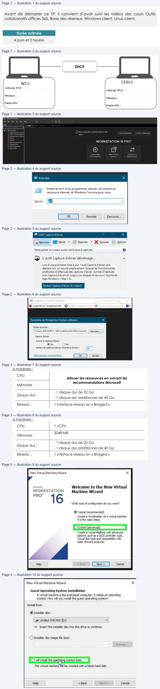
Page 5
Texte relevé dans les illustrations
New
Virtual Machine Wizard
x
Select a Guest Operating System
Which operating system wil be instaled on this wirhaal machine?
Guest operating system
©) Microsoft Windows
(Linux
Cane EX
Oather
Verson
Windows 10 x64
w
Help
< Back
Mexfs
Cancel
New Virtual Machine Wizard
x
Processor Configuration
Spedfy the number of processers for this virtual machine
Processors
Number of processors:
| a
|
Number of cores per processor:
[2
Total processor cores;
2
Heb
cad
cane
Configuration requise pour installer Windows 10
Processeur
Processeurde 1 GHz ou plus rapide ou SoC
_—a le
16 Go pour système 32 bits où 32 Go pour système 64 bits
carte
om
10
graphique
DirectX 9 ou version ultérieure avec pilote WDDM 1.0
Écran
8001600
Page 6
Texte relevé dans les illustrations
New Virtual Machine Wizard
x
Memory for the Virtual Machine
How much memory would you like to use for this virtual machine?
Specify the amount of memory allocated to this virtual machine, The memory size
must be à multiple
of 4MB.
126 GB
Memory for this virtual machine:
>| MB
2e
|=
32GB
16GB
4
568
@ Maximum recommended
memory:
468
13,4 GB
2681
MN <
EN
M Recommended memory:
512 MB
268
256 MB
128 M8
ame
Guest OS recommended minimum:
328
168
16 MB
ama
ame
Help|
<Back |[net>
] |
_concet
New Virtual Machine Wizard
x
Specify
Disk Capacity
How large do you want this disk to be?
Maximum disk size (GB):
32 4
Recommended
size for Windows 10 x64: 60 GB
FA Altocate
al disk space now,
Allocating the ful capacity can enhance performance but requires all of the physical
disk space to be available right now. If you do not allocate all the space news, the
virtual disk starts small and grows as you add data to 2.
@ Store virtual disk ax a single fle
O)Spiit virtual disk into muttipls files
Splitting the disk makes & easier to move the virtual machine to another computer but
may reduce performance
with very large disks.
Help
_<Back Cs
oe
Page 7
Spécifié un emplacement pour le disque (le mieux et de mettre le disque virtuelle sur un
disque physique different du système d’exploitation).
Choississez la carte reseau virtuelle “host-only”:
Texte relevé dans les illustrations
New Virtual Machine Wizard
x
Specify Disk File
Where would you lke to store the disk file?
Disk file
One 32 GE dik file will be crasted using this file name,
CAMESMSPDIE
MSP, vmdk
]
Help
ET
Next >
Cancel
New Virtual Machine Wizard
x
Network Type
What type of network do you want to add?
Network connection
(@ Use bridged networking
Give the quest operating system direct access to an external Ethernet
network, The guest must have its own IP address on the external network.
(C)Use network address translation (NAT)
Give the guest operating system access to the host computer's dial-up or
external Ethernet network connection using the host's IP address.
(Use host-only networking
Connect the guest operating system to a private virtual network on the host
computer.
oO Do not use a network connection
Help
< Back
Cancel
Page 8
Nous insérons dans le lecteur virtuel de la VM l’iso demander :
Texte relevé dans les illustrations
Virtual Machine Settings
x
Hardware
Options
Device
Summary
Device satus
=
connected
EE Mamory
2e
Fr
[4]Connectat power on
Lak
Processors:
ra
FA Hardi Disk (VIe)
32 GE (Preaiocated)
ae
() Cb/Dve (SATA)
Auto detect
= ue
iva
dé
SO Network Adapter
Bridged (Automatic)
Q)se
pliyscal
deve:
=] USB Controler
Present
tu Sound Card
Auto detect
(a) Use 150 image fis:
dap Printer
Present
SS SSeS ro
Copie
Buts detect
[Erbsesenenenetipenniesteir
Windows? v]
Advanced...
|
add,
Remove
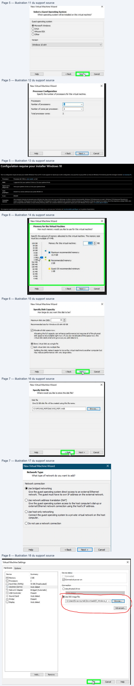
Page 9
Ajout d’un disque :
Texte relevé dans les illustrations
Ajout d'un disque
:
Virtual Machine Settings
x
Hardware
Options
Device
Summary
Disk file
ES Memory
268
C:\VM\W19_MSP\Config\W20_MSP.vmdk
(S) Processors
2
Cry
©) co/pvo (SATA)
Auto detect
Current size: 32 GB
SE Network Adapter
Bridged (Automatic)
System free: 122.4 GB
F3 USB Controller
Present
Maximum size: 32 GB
0 Sound Card
Auto detect
© Pnrter
Present
Disk information
Diospiey
Auto detect
Disk space isprestiocated
for this hard disk,
Hard diskcontents
are stored in à single fie.
Disk utiles
Map this virtual machine disk to a local volume.
Map
Expand diak capacty.
Expand...
Compact disk to recisim unused space,
Compact
Advanced...
SS] ENS ES
ict
ine
Sett
Hardware
Options
Device
Summary
Disk file
Memory
sali
CAAVM\W10_MSP\Config\W/10_MSP.vmdk
(2) Processors
2
© Hard Disk (vie)
32 GB (Prestiocated)
Capacty
© coyovo (sata)
cran
Sa Network Adapter | Add Hardware Wizard
x
FA USB Controller
:
& coankcadd
Specify Disk File
=, printer
Where would you like to store the disk file?
Ci vspiey
Disk file
One 40 G8 disk file wil be crested using this fle name,
Defragment
Expand...
Compact
<Back TS
Cancel
|
Add.
Remove
[
x
Cancel
Hep
Page 10
1.3 Tâches à réaliser
✓ Schéma et tableau récapitulatif
1.3.1 Votre première tâche sera, en utilisant l’illustration précédemment indiquée, de
reproduire le schéma et d’y faire figurer toutes les informations liées à l’adressage IP.
Vous vous servirez pour cela de tout moyen à votre convenance (www.draw.io, MS
Visio, Word ou Paint…).
Voici le schéma demandé (les adresses IP sont ici à titre d'exemple et ne seront
certainement pas les vôtres):
1.3.2 Vous produirez également un tableau récapitulant l’ensemble des informations
relatives aux configurations des systèmes (login/mots de passe, noms, adresses IP,
processeurs, mémoire…).
Texte relevé dans les illustrations
—_—
nn
_
Adresse IPv4: 172.16.63.253
Adresse Ipva: 172.16.63.252
.
255.255.255.192
Masque
:
Masque:
299.255.255.192
passerelle :172.16.63.254
Passerelle:
172.16.63.254
A
B
Œ
D
E
1
W10-10
DEB10-10
PA
Processeur
1
1
D
Mémoire
2GB
512 MB
30GO
40GO
20GO,
EM
Disque dur
60GO,
4060
CR
Réseau
interface réseau host-only
interface réseau host-only
CM
adresse IP
172,16,63,253/26
172,16,63,252/26
vam
identifiant / mot de passe
9
(Services
gj Membres
gilogin
c
LR Commercial
Daryl Dixon
ddixon
DDP4$$VVOrl)
commercial
12
GabrielStokes
© gstokes ©
SPAS$WVOrl) vendeurderèe |
13
Maggie Greene
mgreene
MGP4$$SVVOrl)
commercial
14
Eugene Porter
eporter
EPPASSWOr)
comptable |
15
Carol Peletier (intérimaire)
cpeletier
CPP4S$SVVOrl)
(intérimaire)
16
Vous-même (Administrateur)
TLPASSVVOrI) …administratrice Tre
17
Votre binôme (prestataire)
jmaccree
JMP4SSVVOrl)
prestataire
19
Morgan Jones
mjones
MJP4SSVVOrl)
porteur
|
Page 11
✓ Installation des systèmes
1.3.3 Sur le poste Microsoft sera déployé le système d’exploitation Windows 10 édition
professionnelle, sur le 1er disque dur qui ne comportera qu’une seule partition
utilisant l’intégralité de l’espace. Vous configurerez le système en respectant les
critères précédemment évoqués (nommage, adressage IP…). Vous empêcherez en
outre, le service Windows Update, de se connecter aux serveurs Microsoft. Vous
trouverez l’iso d’installation ici : \\Distrib\iso\os\windows\10\
Lors de l’installation du système d’exploitation windows 10 selectionner « windows 10
professionnel » :
Texte relevé dans les illustrations
© di installation de Windows
nid
Sélectionner
le système
d'exploitation à
installer
Système d'exploitation
Architecture
Datede mod.
*
Windows 10 FamilleN
64
12/03/2019
Windows 10 Famille Langue unique
64
12/03/2019
Windows 10 Education
64
12/03/2019
Windows 10 Education N
64
12/03/2019
Windows 10 Professionnel
64
12/03/2019
Windows10 Professionnel N
364
12/03/2019
y
Description
Windows 10 Professionnel
Suivant
EL,
1 Collecte des informations
2
Installation de Windows
Page 12
Dans services.msc nous pouvons voir le service windows update. Il nous suffit de le
mettre en démarrage manuel (au lancement du système d’exploitation) et de
l’arrêter.
Texte relevé dans les illustrations
+4 DEIVICE USET Experience VIT...
ASSUTE 1a pri...
vesactive
>ysteme 10cal
àwevette - Chelan
Propriétés de Windows Update (Ordinateur local)
x
Service SSTP (Secure Socket... Prendench...
En
Général Connexion
Récupération Dépendances
5G Services Bureau à distance
Autorise les ...
Ko Services de chiffrement
Fournit trois...
Et
Nom du service :
wuauserv
‘Gh Shared PC Account Manager Manages pr...
Nom complet :
Windows Update
\GLSMP de l'Espace de stockag...
Service héte...
El
-
—
_-
‘©)Spouleur d'impression
Ceservice…
En
Description :
fran deo mse jour rca
*
Ko Station de travail
Crée et mai.
El
‘attrac nmnrammas Gina canine act déeartive
©
Ko Stratégie de retrait de la cart... Autorise les...
Chemin d'accès des fichiers exécutables :
© SysMain
Gére etamé...
E
C:\Windows \system32\svchost.exe k netsvcs -p
“Système d'événement COM+ Prendench...
E
Type de démarage :
ik Système defichiers EFS (En...
Fournit la te...
‘Gh,Télécopie
Vous perme...
1} Téléphonie
Prend en ch...
‘Gh Temps Windows
Conserve la...
Thèmes
Foumituns.…
E
État du service: En cours d'exécution
Ko UnistoreSvc_20a8f
Gérelestoc…
El
Démarrer
Suspendre
Reprendre
‘© Update Orchestrator Service
Gèreles mis.
El
ee
.
Ko UserDataSvc_20a8f
Fournit l'ac…
E
Vous pouvez spéciier les paramètres qui s'appliquent au démarage du
‘Oh Vérificateur de points
Vérifie les e...
|
© VMware Alias Manager and... Alias Mana
En
Parameties de démarrage
VMware Snapshot Provider
VMware Sn...
‘©: VMware SVGA Helper Service
Helps VMw...
Et
‘© VMware Tools
Fournit uns...
El
1: WalletService
Objets d'hé...
-
‘© WarpJITSve
Provides a JI...
| Annuler |
Appiquer
‘Gh WebClient
Permet à un...
Manuel (Déclencher...
Service local
1:Windows Connect Now - R.... WCNCSVC...
Manuel
Service local
‘© Windows Installer
Ajoute, mo...
Manuel
Systéme local
‘© WindowsSearch
Fournit des...
Enco...
Automatique (débu...
Système local
Windows Update ,
Active la dé...
Enco..
Manuel (Déclencher... Système local
PP Aa
ee
WD
Paie ne
nant
CRE
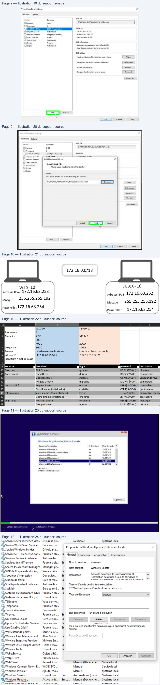
Page 13
1.3.4 Quant au Client Debian, en plus des informations déjà mentionnées, vous installerez
le système depuis l’image ISO « DVD » de la distribution Debian en version 10.x avec
un environnement graphique. Vous trouverez l’iso d’installation ici :
\\10.0.0.6\Distrib\iso\os\unix-linux\linux\Debian\debian 10 Buster\debian-10.2.0-
amd64-DVD-1.iso
Vous partitionnerez le disque manuellement selon le schéma suivant en prenant garde de
pouvoir exploiter ultérieurement l’espace non alloué et Vous conserverez le système de fichiers
par défaut des différents points de montage.
/
17 Go
/boot
512 Mo
swap
256 Mo
/home
1 Go
Pour la racine nous sélectionnerons le disque à partitionner :
Texte relevé dans les illustrations
Sélection des logiciels
Actuellement, seul le système de base est installé. Pour adapter l'installation à vos besoins, vous
pouvez choisir d'installer un ou plusieurs ensembles prédéfinis de logiciels.
Logiciels à installer :
.… GNOME
[]
... Xfce
C1
... KDE
[]
... Cinnamon
[]
... MATE
[1
... LXDE
[] serveur web
serveur d'impression
[] serveur SSH
utilitaires usuels du systeme
|
Capture d'écran
|
| Revenir en arriére
|
| / | 17Go |
| /boot | 512Mo |
| swap | 256Mo |
| /home | 1Go |
Page 14
Une nouvelle partition apparait alors, il nous suffit maintenant de la modeler comme nous
le désirons :
Puis nous utiliserons le « gestionnaire de partition logique » :
Puis nous ferons un groupe de volume :
Texte relevé dans les illustrations
Partitionner les disques
Voici la table des partitions et les paints de montage actuellement con
modifier ses caractéristiques (système de fichiers, paint de montage, €
partifon ou un périphérique pour créer sa table des partitions.
Partitionnement assisté
Configurer les volumes iSCSI
S$CS5I3 (0,0,0) (sda) - 21.5 GB VMware, VMware Virtual S
SCS13 (0,1,0) (sdb) - 42.9 GB VMware, VMware Virtual S
+ §CSI3 (0,0,0) (sda) - 21.5 GB VMware, VMware Virtual &
>
priflog
21.5 GB
Espace libre
(Odebian
Partitionner les disques
x
La taille maximale possible pour cette partition est 21.5 GB.
Il est possible d'utiliser « max » comme méthode simplifiée pour choisir la taille maximale ou d'indiquer un
pourcentage (p. ex. « 20% ») pour utiliser ce pourcentage de la taille maximale.
Nouvelle taille de la partition :
O
debian
Partitionner les disques
Voici la table des partitions et les points de montage actuellement configurés. Vous pouvez ch
modifier ses caractéristiques (système de fichiers, point de montage, etc), un espace libre po
partition ou un périphérique pour créer sa table des partitions.
Partitionnement assisté
1
Configurer le RAID avec gestion logicielle
:
Configurer le gestionnaire de volumes logiques (LVM)
~Configurerles
volumes thiffres———_
#7
Configurer les volumes iSCSI
Page 15
Ensuite nous ferons nos 3 volumes :
On le nomme :
Texte relevé dans les illustrations
CO
debian
Partitionner les disques
Synthèse de la configuration du gestionnaire de volumes logiques
:
Volumes physiques libres:
0
Volumes physiques utilisés
: 0
Groupes de volumes:
0
Volumes logiques
:
0
Action de configuration de LVM :
Afficher les détails de configuration
Créer un groupe de volumes
F
+
debian
Partitionner les disques
Veuillez chbisir les périphériques pour le nouveau groupe de volume
Vous pouvez sélectionner un ou plusieurs périphériques.
Périphériques pour le nouveau groupe de volumes :
i /dev/sdal
(16998MB; ext4)
C1 Idev/sda free #1
(4475MB; Espace libre)
Sn
Partitionner les disques
Synthèse de la configuration du gestio
Volumes physiques libres:
0
Volumes physiques utilisés
: 1
Groupes de volumes
:
1
Volumes logiques
:
0
Action dh configuration de LVM :
Afficher les détails de configuration
Créer un groupe de volumes
Créer un volume logique
Supprimer un groupe de volumes
Etendre un groupe de volumes
Terminer
Page 16
On le taille :
Puis les 2 autres (boot et swap) et on termine :
Texte relevé dans les illustrations
O debian
Partitionner les disques
X euillez indiquer le nom que vous souhaitez employer pour le nouveau volume logique.
Nom du volume logique
:
racine
O debian
Partitionner les disques
Veuillez indiquer la taille du nouveau volume logique. Les tailles peuvent étre ir
suivants : 10K (kilo-octets), 10M (mégaoctets), 10G (gigaoctets), 10T (téraoctets
mégaoctet.
Taille du volume logique :
17GB|
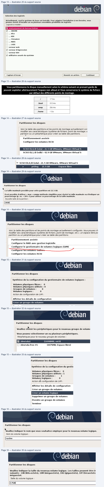
Page 17
Ce qui nous donne :
Nous sélections le bon volume :
Texte relevé dans les illustrations
+
(
«
Partitionner les disques
Synthese de la configuration du gestionnaire de volumes lo
Volumes physiques libres:
O
Volumes physiques utilisés
: 1
Groupes de volumes
:
1
Volumes logiques
:
3
Action de configuration de LVM :
Afficher les détails de configuration
Créer un groupe de volumes
Créer un volume logique
Supprimer un volume logique
Étendre un groupe de volumes
Vv Grothe de volumes LVM start, volume logique boot - 511.7 MB Linux device-mapper (linear)
>
n°1
511.7 MB
T Groupe de volumes LVM start, volume logique racine - 17.0 GB Linux device-mapper (linear)
>
n°1
17.0 GB
Y Groupe de volumes LVM start, volume logique swap - 255.9 MB Linux device-mapper (linear)
>
n°1
255.9 MB
Y SCSI3 (0,0,0) (sda) - 21.5 GB VMware, VMware Virtual S
>
n°1
primaire
18.0 GB
K
lvm
>
pri/log
3.5 GB
Espace libre
SCSI3 (0,1, 0) (sdb) - 42.9 GB VMware, VMware Virtual S
Page 18
Pour sélectionner le bon montage :
Texte relevé dans les illustrations
/ debian
Partitionner les disques
Voici la table des partitions et les points de montage actuellement configurés. Vous pouvez choisir une partition et
modifier ses caractéristiques (système de fichiers, point de montage, etc.), un espace libre pour créer une nouvelle
partition ou un périphérique pour créer sa table des partitions.
Configurer le gestionnaire de volumes logiques (LVM)
Configurer les volumes chiffrés
Configurer les volumes iSCSI
Vv Groupe Ne volumes LVM start, volume logique boot - 511.7 MB Linux device-mapper (linear)
>
n°1
511.7 MB
Vv Groupe de volumes LVM start, volume logique racine - 17.0 GB Linux device-mapper (linear)
Groupe de volumes LVM start, volume logique swap - 255.9 MB Linux device-mapper (linear)
>
n°1
255.9 MB
VY SCSI3 (0,0,0) (sda) - 21.5 GB VMware, VMware Virtual S
>
n°1
primaire
18.0 GB
K
lm
>
pri/log
3.5 GB
Espace libre
SCSI3 (0,1,0) (sdb) - 42.9 GB VMware, VMware Virtual S
Fr
+
O
debian
Partitionner les disques
Vous modifiez la partition n° 1 sur Groupe de volumes LVM start, va
fichiers n'a été détecté sur cette partition.
Caractéristiques de la partition
:
Utiliser comme:
ne pas utiliser
Effacer les données de cette partition
Fin du paramétrage de cette partition
F+
O
debian
Partitionner les disques
Méthode d'utilisation de cette partition :
système de fichiers journalisé ext4
système de fichiers journalisé ext3
système de fichiers ext2
système de fichiers journalisé btrfs
Page 19
Pour obtenir les points de montage par défaut nous entrerons dans « point de montage » :
Une fois satisfait de notre partition nous cliquerons sur :
Texte relevé dans les illustrations
Partitionner les disques
k
Vous modifiez la partition n° 1 sur SCSI3 (0,0,
0) (sda). Aucun système
partition.
Caractéristiques de la partition
:
Utiliser comme
:
système de fichiers journalisé ext4
Point de montage :
i
in
4-5.
Partitionner les disques
Paint de montage pour cette partition :
f- système de fichiers racine
boot - fichiers statiques du programme de démarrage
fhome- répertoires personnels des utilisateurs
‘tmp -fichiers temporaires
fusr - données statiques
War - données variables
fsrv - données des services fournis par le système
fopt - ensembles logiciels additionnels
fusr/local - hiérarchie locale
Autre choix
Ne pas utiliser cette partition
Partitionner les disques
vouskmodifiez la partition n° 2 sur SCSI3 (0,
partition.
Caractéristiques de la partition :
Utiliser comme
:
système de fichi
Point de montage
:
/boot
Options de montage:
defaults
Etiquette :
aucune
Blocs réservés
:
5%
Utilisation habituelle
:
standard
Indicateur d'amorçage :
absent
Supprimer la partition
Fin du paramétrage de cette partition
Page 20
Afin de pouvoir continuer, pour les autres volumes de la manière.
Pour le swap nous devrons cliquer sur « utiliser comme » une fois la partition définit :
Texte relevé dans les illustrations
F+
O
debian
Partitionner les disques
Vous modifiez la partition n° 1 sur SCSI3 (0, 0,0) (sda). Aucun systén
partition.
Caractéristiques
de la partition
:
Œoriiser comme :
système de fichiers journalisé ext4
(Odebi
Partitionner les disques
Méthode d'utilisation de cette partition :
système de fichiers journalisé ext4
système de fichiers journalisé ext3
système de fichiers ext2
système de fichiers journalisé btrfs
système de fichiers journalisé JFS
système de fichiers journalisé XFS
système de fichiers FAT16
système de fichiers FAT32
espace d'échange (« swap »)
volume physique pour chiffrement
volume physique pour RAID
volume physique pour LVM
Ne pas utiliser la partition
|
Capture d'écran
|
|
Aide
|
| Revenir en arrière
|
Continuer
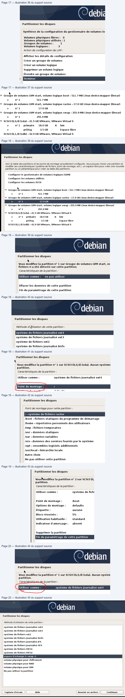
Page 21
Voici le résultat attendu :
1.3.5 Vous laisserez cochés les paquets par défaut et sélectionnerez comme source
d’installation le premier serveur de dépôt miroir français de la liste.
Texte relevé dans les illustrations
_
+
debian
Partitionner les disques
Voici la table des partitions et les points de montage actuellement configurés. Vous pouvez choisir une partition et
modifier ses caractéristiques (système de fichiers, point de montage, etc.), un espace libre pour créer une nouvelle
partition ou un périphérique pour créer sa table des partitions.
Conngtrer les volumes cninres
A
Configurer les volumes iSCSI
Vv Groupe de volumes LVM VG_START, volume logique Racine - 17.0 GB Linux device-mapper (linear)
>
n°1
17.0 GB
F
ext4
/
Y Groupe de volumes LVM VG_START, volume logique boot - 511.7 MB Linux device-mapper (linear)
>
n°1
511.7 MB
F
ext4
/boot
Vv Groupe de volumes LVM VG_START, volume logique swap - 255.9 MB Linux device-mapper (linear)
>
n°1
255.9 MB
F
swap
swap
‘Vv Groupe de volumes LVM vg_home, volume logique LV_home - 998.2 MB Linux device-mapper (linear)
VY SCSI3 (0,0,0) (sda) - 21.5 GB VMware, VMware Virtual S
>
n°1
primaire
18.0GB
K
lvm
>
n°5
logique
3.5 GB
K
lvm
SCSI3 (0,1,0) (sdb) - 42.9 GB VMware, VMware Virtual S
vy)
|
Capture d'écran
|
|
Aide
|
Revenir en arrière
|
Page 22
Tester la connectivité réseau
1.3.6 Assurez-vous de la connectivité :
o Entre vos systèmes
o Avec les machines de votre binôme
Texte relevé dans les illustrations
~
+
(Odebian
Configurer l'outil de gestion des paquets
Veuillez choisir un miroir de l'archive Debian. Vous devriez utiliser un miroir situé dans votre pays ou
votre région si vous ne savez pas quel miroir possède la meilleure connexion Internet avec vous.
Généralement, deb.debian.org est un choix pertinent.
Miroir de l'archive Debian :
3
debian.proxad.net
t
deb-mirl.naitways.net
debian. univ-lorraine.fr
ftp.u-picardie.fr
ftp.u-strasbg.fr
deb.debian.org
debian-archive.trafficmanager.net
ftp.ec-m.fr
mirror. plusserver.com
debian. mirror. ate. info
debian. univ-tlse2.fr
ftp.rezopole.net
debian. univ-reims.fr
F2
Capture d'écran
|
Revenir en arrière
|
Page 23
Tout d’abord nous devrons vérifier les cartes réseaux de nos machines :
Sur la machine Windows
Ouvrir le panneau de configuration :
Cliquer sur "Réseau et Internet"
Texte relevé dans les illustrations
=
SE
&
Filtres
\
a
:
DM!
Appicatonceburenu
Applications
#4 Panneau de saisie mathématique
Suggestions
de recherche
A panne
- Afficher les résultats Web
>
&
Ed
=
CM]
panneau de configuration
[if
-
ES Panneau de configuration
=
o
#K
>
Panneau
de configuration
Ajuster les paramètres
de
l'ordinateur
-
Système
et
sécurité
-
omptes d'utilisateurs
6
IE
Page 24
Aller dans le "Centre Réseau et partage"
Accéder aux propriétés de la carte réseau
Texte relevé dans les illustrations
Centre Réseau
et partage
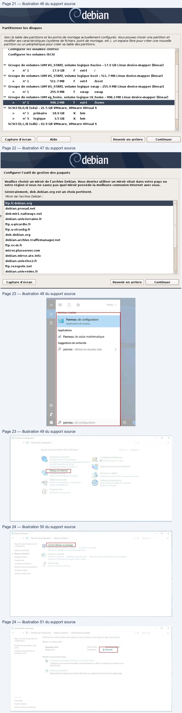
Page 25
Cliquer sur "Propriétés"
Double-clic sur "Protocole Internet version 4"
Texte relevé dans les illustrations
| CB
Protocole intemet version 4 (TCP/IPv4)
1
Protocolede muiltiotsxane.de.cate
seau Micood +
C4
le
+
TC
Page 26
Valider en cliquant sur "OK"
Vérifiez vos adresse et autres informations IP (passerelle, DNS…) à l'aide de la
commande ipconfig /all
Pour que le test de ping que nous allons faire puisse fonctionner nous devons l’autoriser
avec l’aide d’une règle dans le pare-feu. (Par défaut le ping ICMPv4 echo 8 est
bloqué).
Allons dans le pare-feu:
Texte relevé dans les illustrations
Propriétés de: Protocole Internet version 4 (TCP/1Pv4)
x
Général
Configuration alternative
Les paramètres IP peuvent être déterminés automatiquement si votre
réseau le permet. Sinon, vous devez demander les paramètres IP
appropriés à votre administrateur réseau,
(@ Obtenir une adresse IP automatiquement
CjUtiliser l'adresse IP suivante
:
(@ Obtenir les adresses des serveurs DNS automatiquement
CUtiliser l'adresse de serveur DNS suivante
:
Valider les paramètres en quittant
CET
& Pare-feu Windows Defender
+
+ 4
>
Panneau de configuration
+
Système etsécurité
>
Pare-feu Windows Defender
Page 27
Créons une nouvelle règle :
Texte relevé dans les illustrations
& Pare-feu Windows Defender
e
+
fp &
> Panneau de configuration
,
.
Protégez
Page d'accueil du panneau de
g
configuration
9
Le Pare-feu
.
.
votre ordina
Autoriser une application ou
une fonctionnalité
via le
.
Pare-feu Windows Defender
@ Par séc
@ Modifier les paramètres de
notification
|g R
@
Activer ou désactiver le
Pare-feu Windows Defender
ag R
@ Paramètres par défaut
-
-
Réseaux da
@
Paramètres avancés
Dépanner mon réseau
État du Pan
Oe
nei
Créons une nouvelle régle
:
2
PCEE a aces
=
Pal
ls desécurité de conne|@ Affichage sansfi (TCP entrant)
Affichage sans fil
Tout
Oui
iouvelle
de.
PR A
En
|
|
x
Anal deerater
ul Demande. Ana
deorme
vue Tout
Non
LES
Analyse del'ordinateur
virtuel (Demande...Analyse
de l'ordineteur virtuel Tout
Non
[7 Fitrer
par état
a
Po
Analyse de l'ordinateur
virtuel
(NB-Sessio... Analyse
de l'ordinateur virtuel Tout
Non
IY Fittrer
par groupe
>
© >a
Anadetordinter
vite (RPC)
Ambredeforuter
itu Toot
Non
chose
»
on
And ardt tu
fic ent Annedem Vito
Tout
Non
|
Régie entrante pour l'arrét à distance (RP... Arrét
àdistance
Tout
Non
cca
#
Régle entrante pourl'arrét à distance (TC... Arrêt
à distance
Tout
Non
> Erporter
leliste.
sioner dance
DCOMN
Asstnced dunce
Dome
Où | au
|| e@asstanced dance ONRP-Envin)
Aséanceldne
Dom
Oui
|| @acaitance
à distance PNRP-Entent)
Assistance
àdistance
Pubic
Oui
fichagesan fi (TCP entrant)
i
sion
dence SOP TCP ene
Asistencia
Dom. Otero rig
| @ since stance
GSOPUDP-enert Asitncedeince
Dome ONY oper
cone’ dtnce (CPE)
Asitanced tance
Pate
Ou
© Assistance à distance (TCP-Entrée)
‘Assistanceà distance
Doma...
Oui
3 Copier
|) @ Assistance à distance (Trafic entrant TCP … Assistance
à distance
Doma...
Oui
IX Supprimer
Découverte homologue deBntiCx.
Srnchcoche-Decnuretess
Tout
Now |
(ABS Pritts
Eancon ducomensdeBrnenccbe(~
Banrcare-Bancens
Tot
Non
Ly ue
ServardecachehebergédeBrnchCac..
BrnchCache-Seneurdee
Tout
Non
Oum dance” Mode titer (TC. Brea tance
Tot
Où
| @ Bureau
à distance -Modeutilisateur
(UD... Bureau
à distance
Tout
Oui
© corpogen mucon
Crpendel codes
Tot
On
| @ compagne console Xbox
reRs pie=
Cooder dencre Soles Coord
debenacion= Dons.
Mot
Cerna
ares
oles … Coord teacon
orn.
Men
©
Nowell ve
E © taper ici pour rechercher
mi
m
>
m ©
#
©
©
©
Em
A
age,
O
Page 28
Nous créerons une règle personnalisée :
Autorisant tous les programmes:
Texte relevé dans les illustrations
LA
Type de
SelKi
=
louer Crmermne iumeeus ©
-
=
=
=
=
SEITE?
Bi donatemens
an
À mourut
,
©
1, roi
Pie ai cartes comme din pega
are pr
et
ol
Pat
:
{Règle au corteles connexiona d'un pot TCP ou UDP.
amamp
Le
9
Actuakser
Fae adored caressa ene Ween
Bi ae
eT |
| Aftichage sans (TCP entrant)
a
DT
à Dm rge
X
Supprimer
FE
=
T
~
TT
Bureau
distance (TCP.WSS-entrant)
Bureau ddistance (WebSock.. Tout
Non
Bocopemuemene
Creme
(Où
Las CES
: EFFETS
|
&
200%, D
@
a
=
mlOurreumen Ours eue @-
=a
=
=,
ARTATETE SEEN
|
:
Es Nove.
CE RP
a blem (ee
mel def
mis rem min Ana
7 Fitrer
par état
,
+
md
Lite
1 Fierpr groupe
,
CA
en
Ouest es diem Pres
‘Mfichoge
>
orn
G acier
al a
Derrte
D
Ase
rT
Age ne (TC ett
3
agi are
ee
Decne
ora
+
conse
D sper
D Ase
cree Ce
T
TT ER
Yok
Won
FE CEE
mi
wae aeme ee cw ew
8 90,8%, D
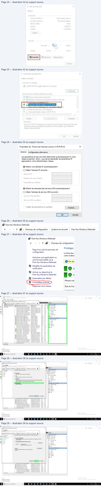
Page 29
Tous les ports:
Sur tout l’IPV4:
Texte relevé dans les illustrations
@
rata
oe
EE
= ==
=
Re
ARS
GET ETAT
Wile
me
V7 Fitrerpar profi
»
LE
ES
Numéro
de
protocle
:
re
o1°
Age
»
orn
mail
a
BR noms
Eng 3 OT
CS
Ent
3
(Exemple : 80, 443, 5000-5010
9
”
nu
a
me
T
Tirana
nance CPW TR WSCC
Tot
Non
FEN CES
mi eaeeeeecurnr
Bw
fA orem Ol
@
Era
=
EE
= ==
=
Tipe deride
3 Nowell régle.
@
de Programm
(À quelles adresses IP locales cefterègle s'applique 4-elle 7
V7 Fitrer
par profit
,»
e nr
LR
V Fütrer
par état
>
oi"
age
,
®
@ Nem
Gi
Actualiser
CS
Pommerene cmaerene:
(REE
Ent
3
© Ces adresses IP
oe
nu
a
me
T
Tirana
nance CPW TR WSCC
Tot
Non
FEN CES
mi eaeeeeecurnr
Bw
fA orem Ol
Page 30
Sur tous les profils:
Texte relevé dans les illustrations
@
het
oe
Étapes
£
=
9
=
:
e
Jee > ||Régles
detrafic entrant
=
Re
IRETURN
AE CET
=
Ml
Nowvete rege.
e ass
(Cela comprend les connexions qui sant protégées par le protocole IPsec. ainsi que cellesqui
‘YF Fittrer
par état
>
2
ST
nn,
a
,
oy
Ca cir nietfrite te
ade chrotc Fe a
Afichage
;
Se
cae
ar pra cheeener,
Aon
RSR
tle
a
> marne
aa
Cuero
Ent
3
Decne
—
cope
D sys
à
mopités
nu
a
me
T
EC OT
Tout
Won
Elo weLs
mi aeemee eee
er mw
f AMY mou D
@
Prot
oe
Étapes
£
=
9
=
:
e
Jee > ||Régles
detrafic entrant
=
——
NES
=
Ml
Nowvete rege.
Wile Pepe
V7 Fitrerpar profi
»
@ Protocole
et pots
F1 Domaine
Oh.
en
(TT ET
dpe
Y Fiterparat
y
e
~
‘Y
Fütrer
par
groupe
>
or
om
F1Prive
ER
Sa
aredel comenon dun arénateur à un enpacemert réseau pv par nome à
Affichage
,
>
ris
BR noms
©
Nam
© Paie
{Lors de la connexion d'un ordinateur à un emplacement public.
Le
as
aa
Ent
3
Decne
—
cope
D sys
à
mopités
nu
a
me
T
1]
Bureau distance- MCP-WSS-entrant)
Bureau à distance (WebSock. Tout
Non
FE CEE
Dim zu
CS
#2
© L
©
œ
ecw 5, D
Page 31
Puis nous la nommerons:
Nous faisons par la suite un ping vers notre machine Debian (elle doit être configurée) afin de
vérifier la connexion :
Texte relevé dans les illustrations
#
+
[2 mme
x
|nom
Jen Dsenbctoesinenet Oateruent Simenemen
©
-
me
=
lo
Keane
li Neuvele
@ fo
Pom
7 Fverparpol
,
“+
_
SF Fryar
,
|
mr
ES
Aisa netC et
"
@ Deacon
—
cose
D sci
Ba
oe CR
me
T
TT
Bureau stance - (1CP-WSS-entrant)
‘Bureau
à distance (WebSock..
Tout
Non
Crea ANaNeE CMTed
Où
SC
CM
di
Ocmpepeomdoronte
Conpepoleiemaeuse.
oma Où
Ccalmpameniacs
ONDUERMRE.
on.
Du
ere
ds.
me De de
Condo
van
daibvie Coodmus drnain. Dem
New
ass
Dei Cho at
Dore M D
+ CRE
EX C\Windows\system32\cmd.exe
C:\>ping 172.16.63.252
nvoi d’une requête
‘Ping’
172.16.63.252 avec 32 octets de données
:
téponse de 172.16.63.252
:
octets=32 temps<ims TTL=64
téponse de 172.16.63.252
:
octets=32 temps<ims TTL=64
téponse de 172.16.63.252
:
octets=32 temps<ims TTL=64
téponse de 172.16.63.252
:
octets=32 temps<ims TTL=64
Statistiques Ping pour 172.16.63.252:
Paquets
:
envoyés
= 4,
reçus = 4,
perdus
= @ (perte 0%),
urée approximative des boucles en millisecondes
:
Minimum
= @ms,
Maximum = @ms,
Moyenne = @ms
Page 32
Sur la machine Linux:
Texte relevé dans les illustrations
Sur la machine Linux:
a)
O-
<
@
sa Filaire connecté
-
Eteindre
Paramètres filaire
æ
= lapinnoir
>
*
ib
o
Q
Paramétres
Réseau
x
$
Bluetooth
Filaire
+
©
arrière-plan
Connecté - 1000 Mb/s
«_
A
Notifications
É
Q
Recherche
VPN
+
Fe: Payette
Non configuré
@ Acces universel
& Comptes enligne
Serveur mandataire
ésactivé
4
&
Confidentialité
<
Partage
di
Son
&
Energie
@
Réseau
%
Périphériques
>
Di
e
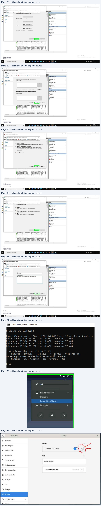
Page 33
Désactiver puis réactiver la carte réseau afin que les changement soient bien pris en
compte.
Pour finir nous ferons la commande ip a afin de vérifier l'adresse IP de la machine
Debian puis nous ferons un test de ping vers la machine windows afin de vérifier la
connexion:
Texte relevé dans les illustrations
IPv4
Méthode IPv4.
Automatique (DHCP)
Réseau local seulement
®
Manuel
Désactiver
Adresses
Filaire
+
Connecté - 1000 Mb/s
(©)
© )
tt
lapinnoir@Deb10MSP: ~
lapinnoir@DeblOMSP: ~ 85x26
Page 34
2
Partie 2 – Configuration des utilisateurs et de
l’environnement
2.1 Création d’utilisateurs et de groupes
✓ Liste des membres du personnel
2.1.1 La société comporte 9 employés répartis en 5 services comme indiqué ci-
dessous :
Services
Membres
Direction
Rick Grimes
Daryl Dixon
Commercial
Gabriel Stokes
Maggie Greene
Eugene Porter
Comptabilité
Carol Peletier (intérimaire)
Vous-même (Administrateur)
Informatique
Votre binôme (prestataire)
Rosita Espinosa
Logistique
Morgan Jones
2.1.2 Chaque compte utilisateur sera identifié par la première lettre de son prénom,
suivi de son nom. Les mots de passe seront affectés à votre libre convenance,
tout en respectant les recommandations de l’ANSSI.
( https://www.ssi.gouv.fr/guide/mot-de-passe/ )
Voici les recommandations de l’ANSSI pour la création de mot de passe :
Choisissez des mots de passe d’au moins 12 caractères de types différents (majuscules,
minuscules, chiffres, caractères spéciaux).
https://www.ssi.gouv.fr/guide/mot-de-passe/
Pour aller plus vite nous utiliserons Excel :
Pour le mdp nous utiliserons la première lettre du nom (en majuscule) et la
première lettre du prénom (en majuscule) + P4$$vv0I):
=MAJUSCULE(STXT([@Prénom];1;1))&MAJUSCULE(STXT([@Nom];1;1))&"P4$$VV0rI)"
Pour le login :
=MINUSCULE(STXT([@Prénom];1;1)&MINUSCULE([@Nom]))
Pour le mail (qui servira d’UPN plus tard sur un serveur) :
=MINUSCULE([@Prénom])&MINUSCULE([@Nom])&"@gmail.com"
| Services | Membres |
| Direction | Rick Grimes |
| Commercial | Daryl Dixon Gabriel Stokes Maggie Greene |
| Comptabilité | Eugene Porter Carol Peletier (intérimaire) |
| Informatique | Vous-même (Administrateur) Votre binôme (prestataire) |
| Logistique | Rosita Espinosa Morgan Jones |
Page 35
Ensuite nous utiliserons une commande powershell afin de créer nos utilisateurs :
Attention de bien lancer votre PowerShell en administrateur.
Voici la commande utiliser pour la création d’un utilisateur avec un mot de
passe :
New-LocalUser -FullName "Lena Oxton" -Description "Adminstratrice trop rapide" -Name
"loxton" -Password (ConvertTo-SecureString -AsPlainText " OLP4$$VV0rI)" -Force) -
PasswordNeverExpires
Texte relevé dans les illustrations
A
B
€
D
E
F
1
[Prénom
~ Nom
~
mail
M password
- description
Col
Pam
Rick
Grimes
rgrimes
Tickgrimes@gmail.com
RGP4S$VVOrl) directeur
ER
Daryl
Dixon
ddixon
“Garyldixon@gmail.com
DDP4SSVvOrl) commercial
EX
Gabriel
Stokes
gstokes
gabrielstokes@gmail.com
GSP4SSVVOrl) vendeur de rêve
ER
Maggie
Greene
mgreene
"maggiegreene@gmail.com MGP4SSVVOrl) commercial
CM
Eugene
Porter
eporter
eugeneporter@gmail.com EPP4SSVVOrl) comptable
LA
Carol
Peletier
cpeletier
carolpeletier @gmail.com
CPP4SSVVOrl) (intérimaire)
ER
Lena
Oxton
loxton
lenaoxton @gmail.com
LOP4SS$VVOrl) Adminsitratrice Tracer trop rapide
CM Jesse
MacCree
jmaccree
jessemaccree @gmail.com JMP4SSVVOrl) prestataire
LU Rosita
Espinosa
respinosa
Tositaespinosa@gmail.com REP4SSVVOrl) logistique
ium Morgan
Jones
mjones
"morgan jones @gmail.com MJP4SSVVOrl) porteur
12
13
14
LE Carol Peletier (intérimaire)
"MINUSCULE(STXT([@ Prénom];1;1))&IMIINUSCULE(STXT([@Nom];1;1))&"P4SSVVOrl)”
LEA Tracer Lexton (Administrateur)
LA Jesse MacCree (prestataire)
18
sie
La fonction STXT prend donc trois paramètres
:
20
PAR
1.Le texte qui va être traité : dans notre cas les cellules de la colonne B.
EPA
2. L'endroit à partir duquel le texte sera traité
: dans notre cas, dès la première lettre, donc 1.
PER
3. Le nombre de caractère à prendre
: dans notre cas on ne veut que la première lettre, donc 1.
24
‘pour ajouter une formule tapez &
yam
la fonction MINUSCLE et MAJUSCLE portent biel pour ajouter du texte tapez "LeTexte"
Meilleur résultat
“jy
Windows PowerShell ISE
|
Application
Applications
7%
Windows Pow
_
|
|
LG
Exécuter en tant qu'administrateur
7 Windows Pow
Îl
Ouvrir l'emplacement du fichier
! Windows Pow
_.,
Epingler au menu Démarrer
:
Rechercher dans lent _-
Épingler à la barre des tâches
A powershell - Ai
Ti]
Désinstaller
professionnels el.
Page 36
Pour plus de facilité encore nous pouvons faire de notre excel un .csv puis, nous
écrirons un script qui créera les utilisateurs pour nous :
###############################################################
# Script de création des utilisateurs dans windows 10 client #
# Tracer Lexton #
# créé le 20 octobre 2020 #
# Mis à jour le 20 octobre 2020 #
# Mis à jour par Jesse MacCree #
# le 20 octobre 2020 #
# Fonctionnel sous Windows 10 entreprise build 2004 #
###############################################################
# Indiquer l'adresse complète du fichier utilisateurs .csv
# Indiquer le délimiteur pour le fichier .csv
# Indiquer les noms d'en-têtes
$datasource=Import-CSV -Path "C:\Users\fx\Desktop\utilisateurs.csv" -Delimiter ";" -
Header Prénom,Nom,login,mail,password,description
#Boucle d'alimentation
Foreach($data in $datasource) {
# Nom et prénom de famille
$FullName=$data.Nom + " " + $datasource.Prénom
# Nom de famille
$login=$data.Nom
#le mot de passe
$password=$data.password
#la description
$description=$data.description
#creation utilisateur avec les toutes les données renseignées
New-LocalUser -FullName "$FullName" -Description "$description" -Name "$login" -
Password (ConvertTo-SecureString -AsPlainText "$password" -Force)
# Fait une liste
$nomliste=$affich
$liste = $liste + $nomliste + ","
}
# Affiche le résultat des imports
write-host "Les utilisateurs : " -ForegroundColor Black
write-host "$liste" -foregroundcolor red
write-host "ont été créés" -ForegroundColor Black
2.1.3 Vous adopterez une convention de nommage pour les groupes, que vous
conserverez, quel que soit le système d’exploitation.
Nous pouvons proposer comme convention de nommage :
L_ Le nom du groupe_Le droit accorder au groupe
L indiquant que le groupe est local
R indiquant le droit de lecture
W indiquant le droit de modification
X indiquant le droit d’exécution
CT indiquant le droit de contrôle total
Exemple :
L_Comptabilité le groupe contenant tous les comptables
L_Commercial_W le groupe pour les commerciaux avec les droits en modification
L_Informatique_CT les groupes pour les informaticiens avec le droit en contrôle total
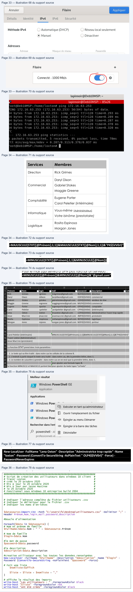
Page 37
✓ Sur le poste Windows 10
2.1.4 Le système Windows 10 sera utilisé par tous les membres. Vous créerez donc les
groupes et comptes nécessaires en précisant dans le champ description leur
service d’appartenance. Vous créerez une partie via la commande (la
direction, comptabilité), une partie en PowerShell (les groupes informatiques,
logistiques), une partie en graphique (les commerciaux).
Nous utiliserons comme pour les utilisateurs une commande PowerShell :
New-LocalGroup -Name ”L_informatique” -Description “groupe informatiques”
Pour les groupes nous pouvons procéder comme pour les utilisateurs :
###############################################################
# Script de création des groupes dans windows 10 client #
# Tracer Lexton #
# créé le 20 octobre 2020 #
# Mis à jour le 20 octobre 2020 #
# Mis à jour par Jesse MacCree #
# le 20 octobre 2020 #
# Fonctionnel sous Windows 10 entreprise build 2004 #
###############################################################
# Indiquer l'adresse complète du fichier utilisateurs .csv
# Indiquer le délimiteur pour le fichier .csv
# Indiquer les noms d'en-têtes
$datasource=Import-CSV -Path "C:\Users\fx\Desktop\groupes.csv" -Delimiter ";" -Header
Groupes,description
#Boucle d'alimentation
Foreach($data in $datasource) {
# Nom des groupes
$groupes=$data.Groupes
# description des groupes
$description=$data.description
#creation du groupe avec les données renseignées dnas le tableau csv
New-LocalGroup -Name ”$groupes” -Description “$description”
# Fait une liste
$nomliste=$affich
$liste = $liste + $nomliste + ","
}
# Affiche le résultat des imports
write-host "Les groupes : " -ForegroundColor Black
write-host "$liste" -foregroundcolor red
write-host "ont été créés" -ForegroundColor Black
Avec la commande :
Net localgroup direction /add
Net localgroup direction /comment:”le groupe de la direction”
Net localgroup comptabilite /add
Net localgroup comptabilite /comment:”le groupe de ceux qui compte”
Page 38
Avec l’interface graphique :
Ouvrir la console "lusrmgr.msc"
Sous "Groupes" : clic-droit -> Nouveau Groupe..."
Texte relevé dans les illustrations
=
DB
@
Filtres V
Meilleur résultat
[a
Bu lusrmgr.mse
Ka)
2"
Document de la console commune Microsoft
Suggestions de recherche
A lusrmgr.msc-
Afficher
les
résultats Web
Pd
z
CCR
©
lusrmgr.msc
Page 39
Puis cliquer sur créer :
Pour ajouter un utilisateur dans un groupe :
Add-LocalGroupMember -Group "L_comptabilite" -Member "eporter"
Add-LocalGroupMember -Group "L_comptabilite" -Member "cpeletier"
Add-LocalGroupMember -Group "L_commercial" -Member "ddixon"
Add-LocalGroupMember -Group "L_commercial" -Member "gstokes”
Add-LocalGroupMember -Group "L_commercial" -Member "mgreene"
Texte relevé dans les illustrations
Nouveau groupe
?
x
Nom du groupe:
Description
:
groupe de ceux qui vendent du rével
Membres
:
Ajouter...
Page 40
2.1.5 Ces utilisateurs possèderont tous dans le dossier « Bureau » de leur profil un
dossier nommé « Procédures » qui contiendra, en outre, un fichier « Règlement
intérieur ».
Dans le dossier 'C:\Users\Default\Desktop', ajouter le dossier 'Procédures' qui
contiendra le fichier 'Règlement intérieur'
2.1.6 Le poste d’intérimaire comptable est un emploi à mi-temps. La société a décidé
de contraindre les heures d’ouverture de session disponibles de ce compte de
9h00 jusque 12h00 tous les jours ouvrés (lundi au vendredi).
Nous utiliserons une commande pour cela :
net user cpeletier /times:lundi-vendredi,9:00-12:00
✓ Sur le poste Debian 10
2.1.7 Tous les utilisateurs de la société sont susceptibles d’utiliser ce poste localement
ou en connexion à distance. Par conséquent, sa base de comptes contiendra
tous les utilisateurs et groupes. Tous les utilisateurs auront un /bin/bash sauf votre
le prestataire en KSH
Commencer par ajouter les groupes avec la commande 'addgroup' :
# addgroup direction commercial comptabilite informatique logistique
Pour chaque utilisateurs:
Ajouter l'utilisateur en lui attribuant un commentaire, un login, un répertoire
home, un groupe, un shell et un mot de passe:
# useradd -c "Rick Grimes" rgrimes -m -g direction --shell /bin/bash -p RGP4$$VV0rI)
Texte relevé dans les illustrations
+ | Desktop
oO
x
| Fichier |
Accueil
Partage
Affichage
@
-
DPN
Users\Default\Desktop
v]
©
| Rechercher
dans
: Deskto}
-
i
Nom
Type
Taille
wr Accès rapide
Procédures
D
er de fichier
EM Bureau
À Téléchargements
=|
Documents
©)
Images
À Musique
System32
B Vidéos
@ OneDrive
En Cepc
v
«
>
1 élément
==]
=
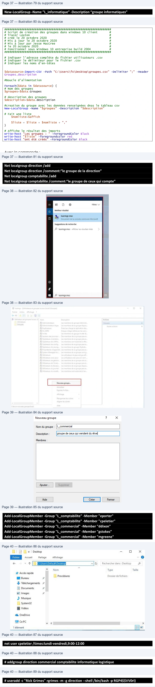
Page 41
Pour le shell KSH de notre prestataire :
# useradd -c "365 magnum et presta bien faite" jmaccree -m -g informatique --shell /bin/ksh -
p JMP4$$VV0rI)
Pour vérifier nous pouvons regarder les utilisateurs :
#cat /etc/shadow
Regarder les groupes :
#cat /etc/groups
Et nous connecter avec les utilisateurs :
#su loxton
Contraintes supplémentaires
✓ Sur le poste Windows 10
2.1.8 La stratégie globale de sécurité de mots de passe comportera les contraintes
suivantes :
2.1.9 12 caractères au minimum
2.1.10 Changement obligatoire tous les 25 jours
2.1.11 Exigences de complexité actives
Pour cela nous devons ouvrir avec “executer” secpol.msc :
Texte relevé dans les illustrations
Entrez le nom d'un programme, dossier, document ou
ressource Internet, et Windows l'ouvrira pour vous.
Annuler
Parcourir.
Page 42
Modifier :
- Durée de vie maximale du mot de passe : 25 jours
- Le mot de passe doit respecter des exigences de complexité : Activer
- Longueur minimale du mot de passe : 12 caractères
Pour plus de sureté, vous ajouterez un autre compte d’administrateur du système en
ligne de commande « cmd » et lui indiquerez un mot de passe.
Pour ajouter un utilisateur en administrateur (attention il faut que l’invite de commande
soit exécutée en administrateur):
net user admin rgrimes /add
Pour changer son mot de passe :
net user rgrimes *
2.1.12 Les membres du service informatique doivent à l’aide de leur compte pouvoir se
connecter sur le système et bénéficier des privilèges d’administrateurs.
Add-LocalGroupMember -Group "Administrateurs" -Member "loxton"
Add-LocalGroupMember -Group "Administrateurs" -Member "jmaccree"
Texte relevé dans les illustrations
E. Stratégie de sécurité locale
=
oO
x
Fichier
Action
Affichage
?
+27
XEB|RE
à Paramètres de sécurité
Stratégie
‘
Paramètre de sécurité
Y
Ba Stratégies de comptes
5 Audit de la longueur minimale du mot de passe
Non défini
A Stratégie de mot de passe
,
:
;
:
Conserver l'historique des mots de passe
0 mots de passe mémori...
À Stratégie de verrouillage du comp
.
-
.
Durée de vie maximale du mot de passe
25 jours
à Stratégies locales
Durée d
led
td
0
_| Pare-feu Windows Defender avec fon
uree
de vie minimale
du mot
de passe
Jours
Straté
-
Enregistrer les mots de passe en utilisant un chiffrement rév.
Désactivé
|
Stratégies du gestionnaire de listes de||
=
.
.
>",
=”
| Stratégies de clé publique
[Le
mot de passe doit respecter
des exigences
de complexité
Activé
À Stratégies de restriction logicielle
Longueur minimale du mot de passe
12 caractère(s)
| Stratégies de contrôle de l'application]
& Stratégies de sécurité IP sur Ordinateu
| Configuration avancée de la stratégie
C:\Users\fx>net
user loxton
*
Entrez un mot de passe pour l'utilisateur
:
Entrez
à nouveau le mot de passe pour confirmer
:
Page 43
✓ Sur les postes Windows 10 & Debian 10
2.1.13 Le changement de mot de passe du compte utilisateur de votre binôme devra
être forcé à sa première connexion.
Sur le poste Debian pour forcer le changement de mot de passe de notre prestataire
informatique Jesse Mac Cree :
# chage jmaccree -d 0
Texte relevé dans les illustrations
=
M Fichier
Action
Affichage
Favoris
Fenêtre
?
= |
El X
>|
me
À Racine de la console
Nom
Nom complet
Description
v © Utilisateurs et
groupes
locaux (local
A
g
een
€ group
D ||Badmin
Propriétés de: rgrimes
?
x
{|
Utilisateurs
Wy Administrat...
Groupes
a
Wa DefaultAcco... | Général
Membre de
Profil
if
a Invite
XL
rgrimes
BA rgrimes
{
-
Wa WDAGUtility...
Nom complet
rimes Rick
Description
directeur
L'utilisateur doit changer le mot de passe à la prochaine ouverture de session
[Le compte est désactivé
Page 44
2.2 Configuration de l’environnement de travail
✓ Sur le poste Windows 10
2.2.1 Les restrictions suivantes seront à paramétrer pour tous les utilisateurs non-
administrateurs du système :
2.2.2 Supprimer les fonctions de gravure CD et empêcher tout accès au lecteur CD et
DVD
2.2.3 Empêcher le lancement des outils de modification du registre (comme
regedit…)
2.2.4 Forcer l’utilisation d’une image de votre choix en tant que fond d’écran
2.2.5 En outre, le pare-feu devra être obligatoirement actif sur le poste Windows, quel
que soit l’utilisateur connecté.
Pour cela nous allons utiliser des GPO local :
Nous allons donc ouvrir un console : mmc
Ajouter le composant enfichable "Editeur d'objets de stratégie",
Texte relevé dans les illustrations
Sy
Entrezle nom d'un programme, dossier, document ou
=
ressource Internet, etWindows l'ouvrira pour vous,
Annuler
Parcourir.
F= Consolel - [Racine de la console]
a
Fichier
Action
Affichage
Favoris
Fenêtre
?
a
Nouveau
Ctrl+N
=
Ouvrir.
Ctrl+O
Enregistrer
Ctrl+s
Enregistrer sous...
Ajouter/Supprimer un composant logiciel enfichable...
Ctrl+M
Options...
Fichier récent
Quitter
————Ne
ee
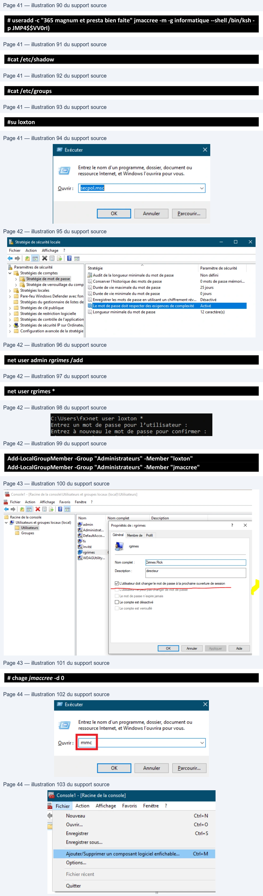
Page 45
Dans l'assistant cliquer sur Parcourir,
Aller sur l'onglet Utilisateurs et choisir "Non-administrateurs"
Texte relevé dans les illustrations
Ajouter ou supprimer des composants logiciels enfichables
x
Vous pouvez sélectionner des composants logiciels enfichables parmi ceux disponibles sur votre ordinateur, et les configurer. Pour les
composants logiciels enfichables extensibles, vous pouvez spécifier quelles extensions doivent être activées.
Composants logiciels enfichables disponibles :
Composants logiciels enfi. sélectionnés
:
Composant logiciel enfichable
a
(Racine de la console
Modifier les extensions...
Contrôle WMI
Anis
J Dossier
fl Dossiers partagés
|
{Editeur d'objets de stratégie de groupe
Monter
{Gestion de l'impression
(3 Gestion de l'ordinateur
TENTE
2
ee
Ajouter >
® Gestion de la stratégie de sécurité IP
FT Gestion des disques
PF: Gestion du module de plateforme sécurisée
ÆdGestionnaire d'autorisations
il Gestionnaire depériphériques
L=] Jeu de stratégie résultant
v
<
:
_
>
Avancé.
Description
:
Ce composant logiciel enfichable vous permet de modifier des objets de stratégie de groupe locale enregistrés sur un ordinateur.
Cox]
amuier
Sélectionner un objet de
stratégie de groupe
x
Assistant Stratégie de groupe
F
Les objets de stratégie de groupe locale sont stockés sur
l'ordinateur local.
Utilisez le bouton Parcourir pour sélectionner un objet de
stratégie de groupe.
Objet de stratégie de groupe
:
Ordinateur local
[[] Autoriser la modification du composant logiciel
enfichable de stratégie de groupe lors de l'exécution à
partir de la ligne de commande. Ceci ne s'applique que
si vous enregistrez la console.
< Précédent
Annuler
Page 46
Sous "Configuration utilisateur" - "Modèles d'administration" - "Accès au stockage
amovible » : Activer "CD et DVD : refuser l'accès en lecture/écriture"
Texte relevé dans les illustrations
Rechercher un objet Stratégie de groupe
?
X
Lilisateurs et groupes locaux compatibles avec la stratégie de groupe locale
:
Nom
ll existe des objets de str...
Be Administrateur
Non
Be Defaut Account
Non
#2 gbadmin
Non
BW DAGUtility Account
Non
2% Non-administrateurs
Mon
metre:
i
ei
‘
‘
»
Th
Configuration utitsateur
£
L
I Paramètres du logiciel
Ag
mini
+
+
©) Paramètres Windows
D:
EE Scripts (ouverture/fermet|| ,
i Paramètres
de sécurité
|] 'd-ce en lecture
a
au Q0S basée sur la stratégie) | st
imu Imprimantes déployées
:
B® Modèles d'adminitation || 5
F
L
} Composants Windows || 5
VE
Système
op Accès
au stockage arr | Si
é
ede
Page 47
Sous "Composant Windows" - "Windows Store", désactiver l'application Store
Sous "Modèles d'administration" - "Système", activer "Empêche l'accès aux outils de
modifications du Registre"
Texte relevé dans les illustrations
|
Désactiver l'application Store
=)
Empéche l'accès aux outils de modifications du Registre
N
»
Page 48
Sous "Modèle d'administration" - "Bureau" -"Bureau", configurer "Papier peint du Bureau
Activer et ajouter le chemin de l'image de fond d'écran
Texte relevé dans les illustrations
| D Corsolet - [Récine de ls canisole\Stratégie Ordinate
local Confiquretian utilsaiaur\ Modéles d'edministretion\furenu\ Bureau]
—
EH
*
@ Fichier
Action
Affichage
Favons
Fenétre
|
>
a
r
Racine de La console
FE
|Actions
¥ 2? Stratégie Ordinateur local
_—
de
die
én
eal
=
À i Configuration onfineter
Papier peint du Bureau
aramétre
fet | Bu
|
Paramètres du logiciel
A
;
~—
pn
EE Activer Active Desktop
Non canfig)
Autres actions
+
|
Paramètres Windows
SSSR
to Désactiver
Active Desktop
Non contig
|
DE
|
Madèles d'administration
Configuration requise
TT Interdireles modifications
Non contig
pie peint
du Bbreons)|
Paremétres du logiciel
LE:
_] Empécher
l'ajout d'éléments
Non config
Paramètres Window
not)
:
1. Empécher lafermeture d'éléments
Wan config
Spécifie l'image d'arriére-plan
S 2 Madéles d'administration
ie
papier peint
affichéesur le
Empécherla suppression
d'éléments
Nan pong
+ 1 Bureau
Bureau des utilisateurs
1 Empécher
In modification d'éléments
Non config
Composants Windo:
dex utilisateurs et empéchéces
1) N'autoriser que les papiers peints au format bnp
Noni config
Dossiers
partagés
derniers de modifier l'image ou sa
Menu Démarrer et barre des||
présentation, Le papier peint
Panheou de configuration || spécifié peut être enregistré dans
|
EST
ou JPEG ("jpg
Tous les paramètres
Pour utiliser ce paramétre. entrez
le chemin d'accés completetle
™
¢
> | \ Etendu À Standard
11 paramétrets)
& Papier peint du Bureau
oO
“
=) Papier peint du Bureau
==
:
—
Parametre précédent
Parametre suivant
© Non configuré
Comrrentaire
|
|
© Active
|
|
|
() Désactivé
|
Pris
en
charge #1
z
pan
Pris en charge sur:
| Ay) minimum Windows 2000
|
|
|
Gptions
Aide
x
-
Spécifie l'image
d'arrière-plen (le « papier
paint
«) affichéesurle | +
Nom du papier peint:
Spécifie l'image d'arrière-pler
papier paint ») affichée
sur
le
Bureau des utilisateurs.
dows\Web\Wallpaper\Themel\img1 ipd
Ce parametre vous permet de spécifier le papier peint du Bureau
Exemple
: avec un chemin local
:
des utilisateurs et empêche ces dermiers de modifier l'image ou
C\windows\web\wallpapeñhome.jpg
52 presentation. Le papier peint spécifie peut étre enregistré dans
un fichier de type bitmap (*.bmp) ou JPEG (* jpg)
a
a
OT CITE
Dre
1
|
Server Share, Corp.jp
Pour utiliser ce paramétre, entrezlé chemin d'acces complet et le
_
nom du fichier
contenant le papier paint, Vous pouver taper un
Style
du
papier
peint
A
7
&
\
EL
PSENES
PEN
Ayuster
chemin d'acces local, tel que
C\Windows\web\wellpsper
\sccueil. jpg ou un chemin d'accés UNC,
tel que \\Serveur
Sartage\Loqejpag. & le fichier spécifie n'est pas disponibie
lorsque |'utilisateur ouvre sa session, aucun papier peint n'est
affiché. Les utilisateurs ne peuvent pas spécifier un autre papier
peint.
Vous pouver également utiliser ce paramètre afin de
spécifier si l'image du papier peint dait étre centrée én mosaique
ou étirée. Les utilisateurs ne peuvent pas modifier cette
spécification
S vous désactivez ce parametre où ne le confiqurez pas, aucun
v
Ok
Anruler
Appliquet
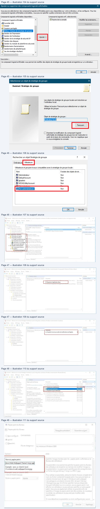
Page 49
Sous "Configuration ordinateur" - "Paramètres de sécurité" - "Pare-feu Windows
Defender"
"Propriétés du Pare-feu Windows"
Texte relevé dans les illustrations
& Consolet - [Racine de le cansole\Stratégie Ordinateur lacal\ Configuration ardinateur\Paramètres Windows\Parameétres de securite\ParefeuWindows Defenderavec]
—
O
x
GB Fichier
Action
Affichage
Fevoris
Fenêtre
Racine de a console
||
©
[Actions
+2
Stratégie Ordinateur local
Vue
d'ensemble
strategie
ei
|
4
bb
Pare-feu Windows D. =
CON
oruinetely:
Profil de domaine
CD
>
[M] Paramètres
du logiciel
us
ip
ui
,
importer ta strat,
+ Bree
@
Le
Parefeu Windows Defender eat active
ou.
|
> I Sictégie
de réolubon de noms
À)
Le campattement par défaut des connexions ertrantes n'est pas configuré
Rien
1 Scripts (démarrage/arrét)
7)
Le comportement par défaut des connenona nortantes n'est pan configure
ee
> 1 Imprimantes déployées
-
Diagnostiquer
vB Paramètres de sécurité
biel ace
Affichage
»
> [4 Stratégies
de comptes
@
Le Pare-feu Windows Defender est active
Hoochie?
> (i Stratégies locales
TD)
be comportement par défaut des connexions entrants n'est pas confiqué
eee
‘.
|
Ii Pare-feu Windows Defender a
D émane: au TN Cesfau née
Ga aak eae
Actueliser
V 1 Pare-feu Windows Defend
L
Propriétés
Es égles detrficentant |
| | Profil public
My Regles detreficsortent
| | @2
Le Parefeu Windows Defender est activé
@ Ace
Ba
Ri
&urtédece
| |
&
Stratégies du gestionnaire del
||
ae
ARTE
à
| |
@ Le comportement par défaut des cunnasions sonaries n'est
pas configuré
|
Stratégies de clé publique
|
|
Stratégies de restriction logich
| | y
Prepvicton
i
D
|
Stratégies de contrôle de [apr
|
B
Stratégies de sécurité
IP
surO
| [Démans
BS Consolel - [Racine dele cansole\Stratégie Ordinateur local\Configuration ardinateu\Parametres Window Paramètres de sécurités Pare-feu Windows Defender avec]
= —
o
x
B
Fichier
Action
Affichage
Favoris
Fenêtre
Racine de fa console
a
© | Actions
v
Stratégie
Ordinateur
local
Vue
d'ensemble
Spee eur
local
d'ensembl
Pare-feu Windows D. a
+ de
Configuration ordinateur
PGi odindine.
2
Parametres du logiciel
Importer ta strat.
|
ee
@
Le Parefeu Windows Delender est active
+ 2 Patamétres Windows
Exporter la strat.
Stratégie de résolution de noms
À)
Le comportement par défaut des connexions entranies n'est pas configuré
Supprimer a str.
Scripts
(démarrage/arrét}
À}
Le comportement
par défaut des connenonn nortantea n'est pan configuré
a) Imprimantes déployées
à
Diagnostique:
YB
Paramtres de sécurité
Profil pavé
Affichage
»
à Stratégies de comptes
©
Le Parefeu Windows Defender est active.
%
a
”
Nouvelle fenêtre
à Stratégies
locales
1)
Le comportement
par défaut des connexions entrantes n'est pas coniquré
|
28
Pare-feu Windows
Defender a
Ï}
Le comportement par défaut des
connevions tertantes n'est par configuré
i
+ 1
Pare-feu Windows Defend
Propriétés
EB Règles de trafic entrant
Profil public
M
Regles
de sécunité
dec
;
Peis ares
7)
Le comportement par défaut desconnenana enirartes rest pas configure
|
Stratégies du gestionnaire de
|
Stratégie dee publique
D)_Le
comportement par défaut des
cannesiers sortartes n'est
pas
configuré
|
Stratgies de restriction logici
ED Proniétés
du Parefeu Windows Delender
|
Stratégies de controle de apr
[=
|
|
& Strategies de sécurité |P sur Où
Démarrer
|
nnfinuratian avancée de tasŸ
ln +
ie
+
.
.
D
of
Page 50
Il faudra l’activer sur tous les profils :
Texte relevé dans les illustrations
Page WindowsUS avec fj tions avancées de sécurité -… X
Profil de domaine
Profil privé
Profil public
Paramètres IPsec
Spécifiez le comportement lorsqu'un ordinateur est connecté à un
emplacement de domaine d'entreprise.
État
i p État du parefeu
Activé (recommandé)
“
Connexions entrantes
:
Non configuré
Le
Connexions sortantes
:
Non configuré
w
Paramètres
—™|
Spécifier les paramètres définissant le
z
F
comportement du Pare-feu Windows
Personnaliser.
Defender.
Enregistrement
Spécifiez les paramètres de
Forez
joumalisation pour le dépannage.
—
Annuler
Appliquer
Page 51
Pour finir nous faisons un gpudate pour appliquer les GPO et un gpresult /R pour voir si
nos GPO s’applique sans problèmes :
Texte relevé dans les illustrations
C:\Users\fx>gpupdate
Mise
à
jour de la stratégie...
La mise
à jour
de
la stratégie d'ordinateur
s'est terminée
sans erreur
La mise
à jour
de
la stratégie utilisateur
s'est terminée sans erreur.
C:\Users\fx>gpresult
/R
Outil
de résultat
du système d’exploitation Microsoft
(R)
Windows
(R)
v2.0
© 2018 Microsoft
Corporation.
Tous droits
réservés.
Créé
le
| 23/[ 10/[ 2020
à 09:08:48
Données
RSOP pour DESKTOP-VDHFV9J\Fx
sur DESKTOP-VDHFV9J
:
mode journalisation
Configuration
du système d’exploitation
:
Station
de travail
autonome
Version
du système d’exploitation......
:
10.0.17763
Nom
du
site............................
:
N/A
Profil
itinérant
:
N/A
bone,
Ieee coscccoscosccosccoscococce
©
(EWES EE:
Connexion
via
une
liaison
lente
?
:
Non
PARAMETRES UTILISATEURS
Heure
de
la dernière application
de
la stratégie
de groupe
:
23/10/2020
à 09:08:24
Stratégie de groupe appliquée depuis
:
N/A
Seuil
de liaison
lente dans
la stratégie
de groupe
:
500 kbps
Nom
du
domaine
:
DESKTOP-VDHFV9J
Type de domaine
:
<Ordinateur local>
Objets Stratégie
de groupe appliqués
Stratégie
de groupe locale
L?utilisateur fait
partie des groupes
de sécurité
suivants
Aucun
Tout
le
monde
Compte
local
et membre du groupe Administrateurs
Administrateurs
Utilisateurs
INTERACTIF
OUVERTURE
DE
SESSION
DE
CONSOLE
Utilisateurs
authentifiés
Cette organisation
Compte local
LOCAL
Authentifications
NTLM
Niveau obligatoire élevé
C:\Users\fx>
Page 52
✓ Sur le poste Debian 10
2.2.6 Avec l’editeur de texte VIM; En une seule ligne avec l’option “g” (remplacer)
décommenter les sources deb-src dans /etc/apt/sources.list.
2.2.7 N’oublier pas de commenter la ligne indiquant le DVD.
Nous rentrerons avec vim dans l’édition du fichier /etc/apt/sources.list:
#vim /etc/pat/sources.list
Puis nous utiliserons l’option g ent tapant sur”:
:g:/^deb-src/s/^/#/gc
Texte relevé dans les illustrations
lapinnoir@Deb10MSP: -
x
=
lapinnoir@Deb10MSP: ~ 78x26
deb
cdrom:[Debian
GNU/Linux
10.6.0
Buster
Official
amd64
DVD Binary-1
20
200926-10:17]/
buster
contrib
main
deb
cdrom:
[Debian
GNU/Linux
10.6.0
Buster
-
Official
amd64
DVD
Binary-1
202
)0926-10:17]
buster
contrib
main
jeb
http://ftp.fr.debian.org/debian/
buster
main
jeb-src
http://ftp.fr.debian.org/debian/
buster
mair
feb
http://security.debian.org/debian-security
buster/updates
main
contrib
Jeb
http://ftp.fr.debian.org/debian/
buster-updates
main
contrib
jeb-src
http://ftp.fr.debian.org/debian/
buster-updates
main
contrib
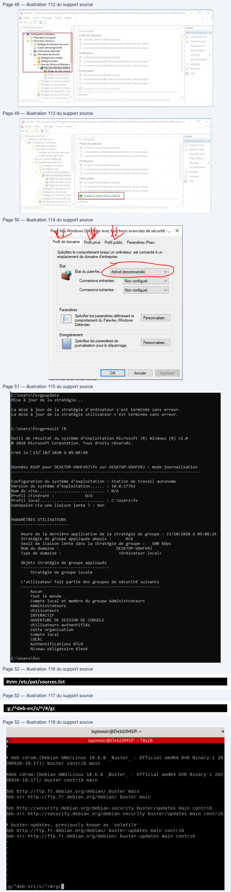
Page 53
Le /gc à la fin déclenchera une demande sur les chagement a valider ou non :
Texte relevé dans les illustrations
# deb
cdrom:[Debian
GNU/Linux
10.6.0
Buster
-
Official
amd64
DVD
Binary-1
20
200926-10:17]/
buster
contrib
main
#deb
cdrom:[Debian
GNU/Linux
10.6.0
Buster
-
Official
amd64
DVD
Binary-1
202
00926-10:17]/
buster
contrib
main
deb http://ftp.fr.debian.org/debiar
buster
main
Gieb-src
http://ftp.fr.debian.org/debian/
buster main
deb http://security.debian.org/debian-security
buster/updates
main
contrib
deb-src
http://security.debian.org/debian-security
buster/updates
main
contrib
#
buster-updates,
previously
known
as
‘volatile'
deb
http://ftp.fr.debian.org/debian/
buster-updates
main
contrib
deb-src
http://ftp.fr.debian.org/debian/
buster-updates
main
contrib
# deb
cdrom: [Debian
GNU/Linux
10.6.0
Buster
-
Official
amd64
DVD Binary-1
20
200926-10:17]
buster
contrib
mair
#deb
cdrom: [Debian
GNU/Linux
10.6.0
Buster
-
Official
amd64
DVD Binary-1
202
00926-10:17]/
buster
contrib
mai
deb
http://ftp.fr.debian.org/debian/
buster
main
#deb-src
http://ftp.fr.debian.org/debian/
buster
main
deb
http://security.debian.org/debian-security
buster/updates
main
contrib
#deb-src
http://security.debian.org/debian-security
buster/updates
main
contri
#
buster-updates,
previously
known
as
‘volatile!
deb
http://ftp.fr.debian.org/debian/
buster-updates
main
contrib
Fideb-src http://ftp.fr.debian.org/debian/
buster-updates main contrib
3
substitutions
on
3
lines
Page 54
2.2.8 Pour améliorer le confort sous Vim, vous mettrez à jour l’application via le package
simplement nommé « vim» et activerez automatiquement la coloration syntaxique
et la numérotation des lignes.
Nous allons d’abord mettre à jour la base de données des paquets :
# aptitude update
Puis lancer l’installation :
# apt install vim
Ensuite, modifier le fichier /etc/vim/vimrc comme suit :
Décommenter la ligne syntax on, chercher les lignes commençant par « set » et modifier la
ligne set compatible en set nocompatible. Si elle n’existe pas, ajoutez totalement la
directive. Enfin, ajouter la ligne set number.
syntax on : Active le surlignage syntaxique de vim.
Tout les modifications effectuées dans /etc/vim/vimrc s’appliquent sur tous les utilisateurs.
Afin de personnaliser le vim pour chaque utilisateur il faut faire des modification dans
/home/User/.vimrc et ensuite ajouter les lignes :
Set number : numérote les lignes du fichier.
set nocompatible : Cette option empêche vim d'avoir une compatibilité vi trop affirmée. Elle
doit être au début de chaque fichier vimrc car elle affecte beaucoup d'autres options
que vous pourriez vouloir modifier.
Texte relevé dans les illustrations
"
ALL
system-wide
defaults
are
set
in $VIMRUNTIME/debian.vim
and sourced
by
"the
call
to
:runtime
you can
find below.
If
you wish
to change any
of
those
"
settings,
you
should
do
it
in this
file
(/etc/vim/vimrc),
since debian. vim
will
be overwritten everytime
an upgrade
of the
vim packages
is
performed.
“
It
is
recommended
to make changes
after sourcing debian.vim since
it
alters
“
the
value
of
the
‘compatible’
option.
“
This
line should
not
be
removed
as
it ensures
that
various
options
are
"
properly set
to work with
the Vim-related
packages
available
in Debian.
runtime!
debian.
vim
"
Vim will
load
$VIMRUNTIME/defaults.vim
if
the
user
does
not
have
a
vimre
“
This
happens
after
/etc/vim/vimrc(.local)
are loaded,
so
it will
override
"any
settings
in these
files
“
If
you
don't want
that
to
happen,
uncomment
the below line
to prevent
“
defaults.vim
from being
loaded.
"let
g:skip_defaults_vim
=
1
“
Uncomment
the
next
line
to
make Vim more Vi-compatible
“
NOTE:
debian.vim sets
‘nocompatible'.
Setting
‘compatible’
changes
numerous
“
options,
so any other options
should
be set AFTER setting
‘compatible
set nocompatible
"
vimS
and later versions
support syntax highlighting.
Uncommenting
the next
"
Line enables
syntax highlighting by default
syntax
on
“
If
using
a dark
background within the editing area and syntax
highlighting
"
turn
on
this
option
as
well
“set background=dark
“
Uncomment
the
following
to have Vim jump
to the last position when
"
reopening
a
file
“au BufReadPost
*
if line(**\"")
>
1 && line("*\"")
<= line("s*)
|
exe
“normal!
g'\**
|
endif
“
uncomment
the following
to have Vim load
indentation
rules
and plugins
"
according
to the detected filetype
“filetype
plugin
indent
on
“
The following
are commented
out
as
they
cause
vim to behave
a lot
"
differently
from
regular
Vi.
They
are highly
recommended
though
“set
showcmd
“
Show
(partial)
command
in
status
line.
“set
showmatch
"
Show matching
brackets.
"set
ignorecase
"
Do case
insensitive matching
“set
smartcase
"Do
smart
case matching
“set
incsearch
"
Incremental
search
“set
autowrite
"
Automatically save before commands
like
:next
and
:make
"set hidden
"
Hide
buffers
when
they
are abandoned
set
_mouse=a
"Enable mouse usage
(all
modes
set number
“
Source
a
global
configuration
file
if
available
if filereadable("/etc/vim/vimre.
local")
source
/etc/vim/vimrc.
local
endif
Page 55
3
Partie 3 – Configuration du stockage et des ressources
3.1 Partitionnement de disques
✓ Sur le poste Windows 10
3.1.1 Via l’outil en ligne de commande DISKPART sur le deuxième disque dur vous
utiliserez le format de table de partition « MBR ». Vous créerez sur celui-ci une
partition nommée « DATA », accessible par la lettre « D: » d’une taille de 15 Go.
DISKPART> list disk
N° disque Statut Taille Libre Dyn GPT
--------- ------------- ------- ------- --- ---
Disque 0 En ligne 32 G octets 0 octets *
Disque 1 En ligne 40 G octets 39 G octets
DISKPART> select disk 1
Le disque 1 est maintenant le disque sélectionné.
DISKPART> list disk
N° disque Statut Taille Libre Dyn GPT
--------- ------------- ------- ------- --- ---
Disque 0 En ligne 32 G octets 0 octets *
* Disque 1 En ligne 40 G octets 39 G octets
DISKPART> offline disk
DiskPart a réussi la mise hors connexion du disque sélectionné.
DISKPART> online disk
DiskPart a amené le disque sélectionné en ligne.
DISKPART> convert MBR
DiskPart a correctement converti le disque sélectionné au format MBR.
DISKPART> create partition primary size=15000
DiskPart a réussi à créer la partition spécifiée.
DISKPART> format fs=ntfs label="DATA"
100 pour cent effectués
DiskPart a formaté le volume.
DISKPART> assign letter=D
DiskPart a correctement assigné la lettre de lecteur ou le point de montage.
Page 56
Vérifions le résultat, nous pouvons voir avec l’image ci-dessous (grâce à la commande
detail disk) la partition de 14G en NTFS et la lettre D assignée
Nous pouvons voir (grâce à list disk) que le disque 1 de 40GO n’est pas en GPT, donc en
MBR.
✓ Sur le poste Debian 10
3.1.2 Trois partitions principales seront créées sur le deuxième disque dur :
3.1.2.1 La 1re, formatée en ext4, occupera un espace de 15 Go et se nommera
« PROFILS »
3.1.2.2 La 2e, formatée en ext4, fera 15 Go et s’appellera « DATA »
3.1.2.3 La 3e, formatée en xfs (le système de fichiers n’est pas installé par défaut),
occupera tout l’espace restant et se nommera « LOGS »
En tant que super-utilisateur,
Lister les disques pour connaitre le nom du disque à partitionner :
# fdisk -l
Disque /dev/sda : 21.5 Go, 21474836480 octets
255 têtes, 63 secteurs/piste, 2610 cylindres, total 41943040 secteurs
Unités = secteurs de 1 * 512 = 512 octets
Taille de secteur (logique / physique) : 512 octets / 512 octets
taille d'E/S (minimale / optimale) : 512 octets / 512 octets
Identifiant de disque : 0x000db18b
Périphérique Amorce
Début
Fin
Blocs
Id Système
/dev/sda1
*
2048
999423
498688
83 Linux
/dev/sda2
41443328
41940991
248832
82 partition d'échange
Linux / Solaris
/dev/sda3
999424
34201599
16601088
83 Linux
/dev/sda4
34201600
36155391
976896
83 Linux
Texte relevé dans les illustrations
m1
C:\Windows\system32\diskpart.exe
—
o
x
a
IDISKPART>
detail
disk
VMware,
VMware
Virtual
S
SCSI
Disk Device
ID du disque
:
251EACD7
Type
:
SAS
État
:
En
ligne
Chemin
:
@
Cible
:
@
ID
LUN
:
©
Chemin d’accès de l’emplacement
:
PCIROOT(@)#PCI(1800)#PCI(8008)#SAS(P@0TEOLE0)
État
en
lecture
seule
actuel
:
Non
Lecture
seule
:
Non
Disque de démarrage
:
Non
Disque de fichiers d’échange
:
Non
Disque de fichiers de mise en veille prolongée
:
Non
Disque de fichiers de vidage sur incident
:
Non
Disque en cluster
:
Non
N° volume
Ltr
Nom
Fs
Type
Taille
Statut
Info
*
Volume
4
D
DATA
NTFS
Partition
14
G
Sain
DISKPART>
list
disk
N°
disque
Statut
Taille
Libre
Dyn
GPT
Disque
©
En
ligne
32
G octets
@ octets
*
Disque
1
En ligne
40 G octets
25
G octets
v
| Périphérique Amorce Début Fin | Blocs | Id Système |
| /dev/sda1 * 2048 999423 | 498688 | 83 Linux |
| /dev/sda2 41443328 41940991 | 248832 | 82 partition d'échange |
| Linux /Solaris | ||
| /dev/sda3 999424 34201599 | 16601088 | 83 Linux |
| /dev/sda4 34201600 36155391 | 976896 | 83 Linux |
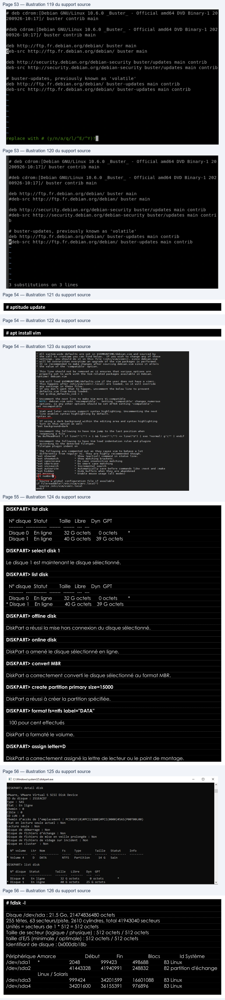
Page 57
Les entrées de la table de partitions ne sont pas dans l'ordre du disque
Disque /dev/sdb : 42.9 Go, 42949672960 octets
255 têtes, 63 secteurs/piste, 5221 cylindres, total 83886080 secteurs
Unités = secteurs de 1 * 512 = 512 octets
Taille de secteur (logique / physique) : 512 octets / 512 octets
taille d'E/S (minimale / optimale) : 512 octets / 512 octets
Identifiant de disque : 0x00000000
Le disque /dev/sdb ne contient pas une table de partitions valable
Utiliser le disque /dev/sdb avec l'outil fdisk :
# fdisk /dev/sdb
Utiliser les commandes suivantes afin de créer les trois partitions :
1ère partition :
· n : créer une nouvelle partition
· p : type de partition primaire
· Laisser le numéro de partition par défaut
· Laisser le premier secteur par défaut
· +15G pour ajouter 15Go
2ème partition:
· n : créer une nouvelle partition
· p : type de partition primaire
· Laisser le numéro de partition par défaut
· Laisser le premier secteur par défaut
· +15G pour ajouter 15Go
3ème partition:
· n : créer une nouvelle partition
· p : type de partition primaire
· Laisser le numéro de partition par défaut
· Laisser le premier secteur par défaut
· Laisser le dernier secteur par défaut pour occuper tout l'espace restant
Quitter fdisk en utilisant la commande 'w' afin d'écrire les modifications.
Installer le paquet 'xfsprogs' pour utiliser le système de fichier xfs:
# apt install xfsprogs
Formater les partitions :
# mkfs.ext4 -L PROFILS /dev/sdb1
# mkfs.ext4 -L DATA /dev/sdb2
# mkfs.xfs -L LOGS /dev/sdb3
Page 58
3.2 Occupation des espaces disques
✓ Sur le poste Debian 10
N.B : il est fortement conseillé de réaliser un snapshot machine éteinte
3.2.1 Répertoires d’accueil
Finalement, l’espace alloué au dossier contenant les profils utilisateurs « /home » a été
sous-estimé. En conséquence, il vous est demandé de remplacer définitivement ce volume
par celui nommé « PROFILS », crée précédemment. Une fois les actions terminées, vous
testerez que les utilisateurs ont bien accès à leurs données personnelles.
Répertoire d'accueil
Faire une copie temporaire du répertoire /home en préservant les droits :
# cp -rp /home /tmp/home-backup
Modifier le fichier /etc/fstab:
# vim /etc/fstab
Commenter la ligne contenant home, en ajoutant un "#" devant :
#UUID=4b59933b-136a-4287-8658-c97b2ec93603 /home ext4 defaults 0 2
Ajouter la ligne permettant de monter la partition « PROFILS » dans /home en fin de fichier :
LABEL=PROFILS /home ext4 defaults 0 2
Enregistrer les modifications et monter les partitions :
# mount -a
Copier les données de /tmp/home-backup dans /home :
# cp -rp /tmp/home-backup/* /home/
Page 59
3.2.2 Dossiers de service
Les données mises en commun entre membres de chaque service seront stockées au
sein du volume appelé « DATA ». Ce dernier sera monté automatiquement dans le dossier
« /services » et hébergera l’arborescence ci-dessous :
Créer l'arborescence :
# mkdir -p /services/
Puis le faire pour chaque dossier
{commercial,comptabilite,direction,informatique,logistique}
3.2.3 Pour éviter tout problème de confidentialité, chaque dossier ne sera accessible en
lecture et écriture qu’aux seuls membres de chaque groupe.
Par exemple, les commerciaux seront les seuls à pouvoir accéder en lecture et
modification au dossier « commercial ».
Changer les groupes propriétaires de chaque dossier :
# cd /services/
# chown :commercial commercial
# chown :comptabilite comptabilite
# chown :direction direction
# chown :informatique informatique
# chown :logistique logistique
Changer les droits de tous les répertoires :
# chmod 770 *
Ou
# chmod g+x *
Texte relevé dans les illustrations
B® services
(3 commercial
9 comptabilite
85 direction
(4 informatique
FB Logistique
BE
RE
RE
Page 60
✓ Sur le poste Windows 10
3.2.4 À l’emplacement « D:\données\ », vous créerez un dossier « Commerciaux », dont
l’accès sera interdit à toute personne étrangère au service.
Sous D:\données\ créer le dossier 'Commerciaux'
Clic-Droit sur le dossier -> "Propriétés" sur le dossier
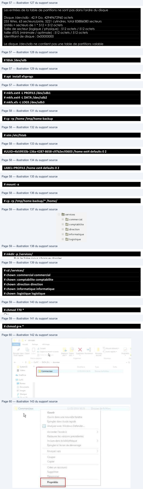
Page 61
Sous l'onglet Sécurité cliquer sur "Avancé"
Désactiver l'héritage
Texte relevé dans les illustrations
Propriétés de: Commerciaux
x
Général
Patage
Sécunte
Versions precédertes
Personinaliser
Nom de l'objet:
Di données Commerciaux
Noms de Groupes ou d 'utilisataura
Ce|
BE Syneme
|
BE Administrateurs (DESKTOP-TM912UB Administrateurs}
£2 Utiisateurs DESKTOP TMST2UE\Ltiisateurs)
Pour modifier le:
isstione, cliquez sut M
our
modifier
les autorisations,
cliquez
eut
Modifier
Modifier
Autorisations pour Utiisateurs authentifics
‘ugonger
Réfuser
Conirile tata!
a
Modification
Lecture & exécution
Affichage du contenu du dossier
Lecture
Ecriture
be
Four les autonsatons spéciales et les paramétres avancés, cliquez sur
|
OlAgaaee:
lntonniaticts sure contre d sceés At ier
Sstitotissticnis
Parameétres de sécurité avancés pour Commerciaix
oO
x
Nom:
D:idonnées\Commerciatx
manne
pjarnet (DESKTOP-TM912UE\pjamet) @ Modifier
Autorisations
Audit
Acces effectif
Pour obtenir des informations supplémentaires, double-chiquez sur une entrés d'autorisation, Pour modifier une entrée d'autorisation,
sélectionnez | entrée et cliquez sur Modifier {si disponible.
|
Entrées d'autorisations:
| [pe
Principal
Acces
Henté de
Sappliqueé
{
[ER Auto.
Administrateurs (DESKTOP-T...
Contréle total
DA
Ce dossier lez sous-dossiers at.
GR Auto.
Système
Controle total
DA
Cedessier, lessous-dossiers et...
&% Auto...
Utilissteurs authentifiés
Modification
on
Ce dossier, tes sous-dossiers et...
|
SA Auto. Utilisateurs (DESKTOP-TM912—
Lecture
et exécution
DA
Ce dossier, les sous-dossiers et...
|
Ajouter
Suhpoitte
iigteer
|
CIRempiecer toutes lec entrées d'autonsation des objets enfants pardesentrées d'autorisation pouvant être héntées decet objet
Page 62
Supprimer toutes les autorisations héritées de cet objet.
Valider
"Cliquer sur "Ajouter..." puis sur Sélectionnez un principal
Texte relevé dans les illustrations
|
— Supprimer toutes les autorisations héritées de cet objet.
ok
| nue
Autorisations pour données
Principal:
Type:
Autoriser
S'applique
à: |Ce dossier, les sous-dossiers et les fichiers
Page 63
Sélectionnez “modification” et “Appliquer ces autorisations…” puis cliquer sur ok
Texte relevé dans les illustrations
Sélectionnez un utilisateur ou un groupe
#
Sélectionnez le type de cet objet
:
un utilisateur, un groupe ou Principal de sécurité intégré
Types d'objets.
À partir de cet emplacement
:
DESKTOP-VOHFWSJ
Emplacements…
Entrez le nom de l'objet à sélectionner (exemples)
:
— Commercial W
Vérifier les noms
Avancé.
Annuler
Autorisations pour données
Qo
x
Principal:
L_Commercial (DESKTOP-VDHFV9N\L Commercial)
Sélectionnez un principal
Type:
Autoriser
v
S'applique à: |Ce dossier, les sous-dossiers et les fichiers
v
Autorisations de base:
Afficher les autorisations avancées
[] Contrôle total
Modification
Lecture et exécution
MAffichage du contenu du dossier
Lecture
Ecriture
Autorisations spéciales
FMiAppliquer ces autorisations uniquement aux objets et/ou aux conteneurs faisant partie de ce conteneur
Effacer tout
Page 64
Ensuite supprimer les autres membres autorisés d’accès de sorte qu’il ne reste plus que le
groupe L_commercial_W et le système (l’accès ne sera autorisés exclusivement qu’au
groupe L_commercial_W) :
Afin de tester rapidement nos modifications nous pouvons utiliser le l’accès effectifs
(onglet « Accès effectif ») et voir le résultat :
Texte relevé dans les illustrations
|_| Paramètres de sécurité avancés pour données
oO
x
Nom:
D:\données
Propriétaire
:
Lena Oxton (DESKTOP-VDHFV9J\loxton) 9 Modifier
Autorisations
Audit
Accés effectif
Pour obtenir des informations supplémentaires, double-cliquez sur une entrée d'autorisation. Pour modifier une entrée d'autorisation,
sélectionnez l'entrée et cliquez sur Modifier (si disponible).
Entrées d'autorisations :
Type
Principal
Accès
Hérité de
S'applique à
Autoriser
Système
Contrôle total
Aucun
Ce dossier, les sous-dossiers et...
82 Autoriser
L_Commercial (DESKTOP-VD...
Modification
Aucun
Ce dossier, les sous-dossiers et..
<
>
Supprimer
Modifier
Activer l'héritage
C]Remplacer toutes les entrées d'autorisation des objets enfants par des entrées d'autorisation pouvant être héritées de cet objet
|
Annuler
Appliquer
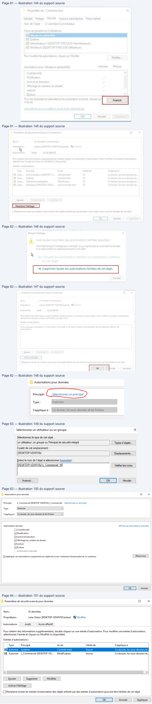
Page 65
Texte relevé dans les illustrations
LI Paramètres de sécurité avancés pour données
ao
x
Nom:
D:\données
Propriétaire
:
Lena Oxton (DESKTOP-VDHFV9/\loxton) @ Modifier
Autorisations
Audit
Accès effectif
L'accès effectif vous permet d'afficher les autorisations effectives d'un compte d'utilisateur, de groupe ou de périphérique. Si le compte est
membre d'un domaine, vous pouvez également évaluer l'impact d'ajouts au jeton de sécurité pour le compte. Lorsque vous évaluez l'impact de
l'ajout d'un groupe, tout groupe dont le groupe souhaité est membre doit être ajouté séparément.
Utilisateur/Groupe:
Grimes Rick (DESKTOP-VDHFV9/\rgrimes) _ Sélectionner un utilisateur
Afficher l'accès effectif
Accès effectif
Autorisation
Accès limité par
x
Contréle total
Autorisations defichiers
x
Parcours du dossier/exécuter le fichier
Autorisations defichiers
x
Liste du dossier/lecture de données
Autorisations de fichiers
x
Attributs de lecture
Autorisations defichiers
x
Lecture des attributs étendus
Autorisations defichiers
x
Création de fichier/écriture de données
Autorisations de fichiers
x
Création de dossier/ajout de données
Autorisations de fichiers
x
Attributs d'écriture
Autorisations defichiers
x
Écriture d'attributs étendus
Autorisations defichiers
x
Suppression de sous-dossier et fichier
Autorisations de fichiers
x
Suppression
Autorisations defichiers
Autorisations de lecture
Autorisations de fichiers
x
Modifier les autorisations
Autorisations defichiers
x
Appropriation
Autorisations de fichiers
[Annuler
| | Appliquer
Page 66
Si nous changeons le propriétaire du fichier (car ici notre administrateur l’est) nous n’aurons
plus aucun n’accès :
3.2.5 De plus, les informaticiens bénéficieront pour leur propre besoin, d’un dossier
« D:\Support_Info » leur permettant d’y déposer des fichiers et dossiers. Son accès
sera bien évidemment restrictif.
Sous DATA (D:), créer le dossier "Support_Info"
Texte relevé dans les illustrations
Propriétés de: données
X
Général
Partage
Sécurité
Versions précédentes
Personnaliser
Nom de l'objet:
D:\données
© Vous devez disposer d'autarisations d'accès en lecture pour
afficher les propriétés de cet objet.
Cliquez sur Avancé pour continuer.
Pour les autorisations spéciales et les paramètres avancés, cliquez sur
Avancé.
Informations sur le contrôle d'accès et les autorisations
OK
Annuler
Appliquer
|
Page 67
Clic-Droit sur le dossier -> Propriétés
Page 68
"Désactiver l'héritage"
Valider en cliquant sur "OK"
Texte relevé dans les illustrations
Désactiver l'héritage
|
— Convertir les autorisations héritées en autorisations explicites
sur cet objet.
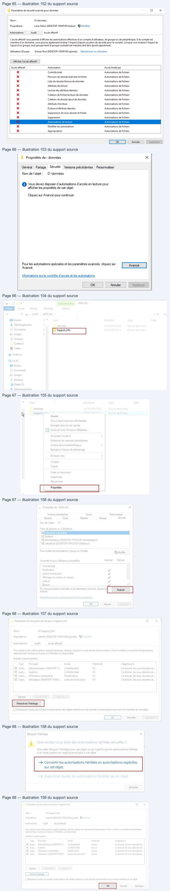
Page 69
Puis nous procéderons de la même manière :
Texte relevé dans les illustrations
Ww
DER
curl
Portage
atficnane
e
Li
Musique
i
à
CS
SE Autoriser
Système
Contrôle total
Aueun
Ce dossier, les sous dei
8
LEE
“Utilisateurs (DESKTOP-VDHFV... Lecture
et exécution
Aucun
Ce dossier, les sous-doss|
Bouter |
Coins]
[Moses
PEUX
œu
LL]
fapez ici pour effectuer une recherche
i
a
1)
“
5
Sa
TR au D
a
Fichier
ccuel
Partage
Affichage
e
e
+
=>
DAT
Pon
ih
a
Microsoft Edge
Accès rapide
Nom:
DAsupportinfo,
WB Bureau
Propriétaire :
x (DESKTOP-VDHFVN)
a
3
Autorisation:
Partage
Audit
Accès effectif
D
Musique
L
ia
Aves
Te
Prop
pes
Hate de
S'apphqueà
]
PoE
SB Autoriser
Système
Controle total
Aucun
Ce dossier, les sous-dos4
= AAO)
|
<
>
Boze)
Css] | Mourir
ox
Tonal
[prise
=
;
œu
ESM ©Ttepezici pouretfectuer
une recherche
RE
S = B
À A0 om D
Page 70
Texte relevé dans les illustrations
“
e
+
rege
&
M Bureau] | S'appliqueà
le
le
m0
a KE
OM
CCR
|
BAO om D
Sélectionnez un utilisateur ou un groupe
x
Sélectionnez le type de cet objet
:
un utilisateur, un groupe ou Principal de sécurité intégré
Types d'objets.
À partir de cet emplacement
:
DESKTOP-VOHFVSJ
Emplacements…
Entrez le nom de l'objet à sélectionner (exemples)
:
DESKTOP-VOHFVA#L Informatique VW
Vérifier les noms
Avancé.
Annuler
Page 71
Texte relevé dans les illustrations
a
| © Autorisations pour support. info
a
x
EU
<4
e
a
Ui Bureau) | Sappiqueà: [Ce dois les sour dossier
etle fichiers
|
Docu
|
M
vues
FN
oo
|
Affichagedu contenu du dossier
nl
=
;
œu
ESM ©Ttepezici pouretfectuer
une recherche
RE
S = B
À A0 om D
a
Fichier |
e
Li
|
3
|
3
vocunl
CS
Medication
& Onedrivg
EAAffichage
du contenu
du dossier
= Dara
2 Receow | |
TRSGoerEE
ec
acer tout
=
;
œu
ESM
© Ttepezici pouretfectuer
une recherche
RE
= =
B&B
AO mom D
Page 72
Texte relevé dans les illustrations
a
Fichier
ccueil
rartags
Affichage
e
e
:
=>
om
i
}
a
3
Autorisations
Partage
Audit
Accès effectif
Rés
-
= AAO)
=
;
œu
ESM ©Ttepezici pouretfectuer
une recherche
RE
S = B
À A0 om D
a
Fichier
ccueil
Partage
Affichage
e
e
:
nt
;
a
| Sélectionnezun utiisateurouun groupe
x
PEER
Sélectionnez
le type de cet objet
I Bureau
ur atsateur. un groupeou Prncipal de sécuté wedge
Tipe Shia
io wane,
[DESKTOP-VDHFVSs ioxton]
Verfierles noms
Féparément.
Rés
:
Avance,
OK
onde
= AAO)
=
;
œu
ESM ©Ttepezici pouretfectuer
une recherche
RE
aS = B
À A0 om D
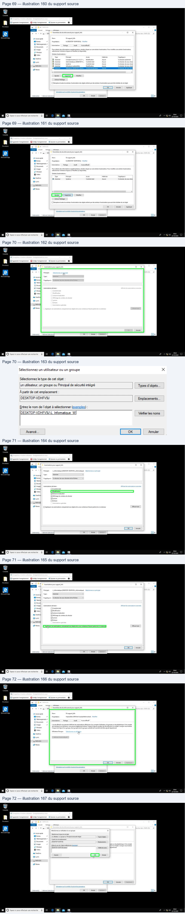
Page 73
Texte relevé dans les illustrations
a
Fichier
ccuel
Partage
Affichage
e
a
Microsoft Edge
Accès rapide
Nom:
DAsupportinfo,
3
Autorisations
Partage
Audit
Accès effectif
3
Utiliseteur/Groupe:
Lena Oxton (DESKTOP-VDHFV9/\loxton)
i$
mao)
ona
=
fapez ici pour effectuer une recherche
{
[ES
a
2]
LR
O
tepez ici pour
effec
:
=
SB
a2 ©
ADM aromOI
a
Fichier
ccuel
Partage
Affichage
e
a
Microsoft Edge
Accès rapide
Nom:
DAsupportinfo,
3
Autorisations
Partage
Audit
Accès effectif
a
@ Windows
ne peutpas déterminer lesautorisations
qui
appliquent à Lena Oxton (DESKTOP-YDHFV@)\oxton).
Be Vio:
ache eect voor peptic rte steve uen dubai: group de phiphtcqen scone
mao)
DT
3
=
ne
ona
=
fapez ici pour effectuer une recherche
{
[ES
a
2]
LR
©
T2pez
ici
pour
ettec
:
E
CR)
BAM omD
Page 74
Texte relevé dans les illustrations
LT
Procédure
-
= | DATA (D:
~
5
-
e
+
=> DATA (D:
a
le
D Bureau
ce
Aves
= AAO)
=
;
œu
ESM ©Ttepezici pouretfectuer
une recherche
RE
= =
B&B
BAO om D
LT
Procédure
-
= | DATA (D:
~
5
-
e
+
=>
DATA (D:
Là
.
=
D
Bureau
fem
4
Téléchargement:
Tux
Lau
Ouvrir dans une nouvelle fenétre
FE
Images
Epingler
à Accès rapide
vs:
Accords acces à
tits
Épingler
à l'écran de démarrage
= AAO)
Emoye ves
© Supprimer
© Renommer
Pope
=
;
œu
ESM ©Ttepezici pouretfectuer
une recherche
RE
= =
B&B
BAO om D
Page 75
Texte relevé dans les illustrations
a
Fichier
cueil
Partage
stichage
e
e
+
=>
DATA (D:
Là
.
=
D
Bureau
Led
supnot into —
ana
à Dosindeñihes
oe:
Propriétés de : support_info
x
M
vidéo:
=
—_
Tale
Docteté)
= AAO)
ra
s
Clcaché
Avancé.
=
;
œu
ESM ©Ttepezici pouretfectuer
une recherche
RE
S = B
À A0 om D
a
Fichier
cueil
Partage
stichage
e
e
+
=>
DATA (D:
Là
.
=
D
Bureau
Led
supnot into —
ana
à Dosindeñihes
oe:
Propriétés de : support_info
x
Aves
ER
= AAO)
=
;
œu
ESM ©Ttepezici pouretfectuer
une recherche
RE
aS = B
À A0 om D
Page 76
3.3 Creation de partages reseau
N.B : il est fortement conseillé de réaliser un snapshot machine éteinte
3.3.1 En suivant les bonnes pratiques, vous partagerez le dossier « Support_Info ». Il sera
invisible aux yeux de tous pour plus de sécurité. En cas de nécessité de déployer un
partage similaire sur un autre poste, vous chercherez la commande PowerShell
équivalente à vos actions, que vous conserverez dans un fichier PowerShell « .ps1 ».
Vous afficherez avec la commande cmd la liste des partages disponible
Pour cacher le partage il faut mettre un « $ » à la fin du nom du partage, comme ceci :
Clic avec le bouton gauche sur « Propriétés »
Texte relevé dans les illustrations
e
GD Suspendre l'enregistrement © Aréter l'enregistrement _Ajouter
un commentaire @ +
a
-
= | data (D)
_
D
x
=
BE
cu
rouge
amensge
©!
yp
ail
# Accès rapide
4
Suppo
Ÿ Takchargemens
(Ouvrir dans une nouvelle fenêtre
D Dem
Épingler
à Acces rapide
à Mons
Acconder l'accès à
>
LS
Restaurer les versions précédentes
oo tate
cere
= a0)
Pre
cant
Seppe
feria
Psp
FP
© Tsperici pour effectuer
une recherche
ed
Bas
Bw
A
AK) 3000 PE
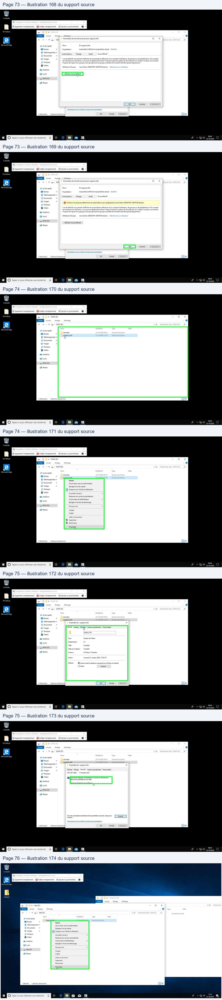
Page 77
Clic avec le bouton gauche sur « Partage »
Clic sur « Partage avancé »
Texte relevé dans les illustrations
e
ET
Lo
À Téléchargement:
:
is
PRE
[Suppor _bfe
one
Bts,
D
a)
Clea
=
FPN
© roi powetiecner werechece À QD
aaa B
BAD
ayo M
e Ca i
Lo
À Téléchargement:
Videos
nu
cere
CES
on
PS
ER © roi pour cttcnerunerecherte À QD
aaa B
BAD
ayo M
Page 78
Clic sur « Nom du partage »
Clic « Autorisations »
Texte relevé dans les illustrations
e
Lo
renier
EE
Partage
Affichage
©!
5%»
ail
# Accès rapide
7
.
all
Portage sance
x]
= Images
Apartager ce dossier
|
LS
(oem du partage :
Wi cepc
=
aa
|
(aT)
|e
Fo
©
‘eperici pour effectuer
nerecherche
[I
Baas
eam
M
e
Lo
renier
EE
Partage
Affichage
©!
5%»
ail
# Accès rapide
7
.
all
Portage sance
x]
= Images
Apartager ce dossier
|
LS
(oem du partage :
à OneDrive
Support Jos
Wi cepc
=
aa
|
ESS
|
EE
Fo
©
‘eperici pour effectuer
nerecherche
[I
Baas
eam
M
Page 79
Clic OK
Ou en ligne de commande :
Créons le partage :
New-smbshare support_info$ -path d:\support_info -changeaccess “utilisateurs authentifiés”
Changeons les permissions :
$acl prend le resultat des acl du fichier :
$acl = get-acl D:\support_info
$ace definit la nouvelle règle des ACE (Acces Control Entry) (droit en modification pour le
groupe informatique) :
$ace = New-Object security.accesscontrol.filesystemaccessrule("L_informatique_RW", "Modify",
"Allow")
Texte relevé dans les illustrations
=!"
F5
Fichier | Accueil
Partage
Affichage
€
+
4S
oe
>
DATA (D:)
“a
Nom
~
Modifié le
Type
oF Accès rapide
support
aasanianan
da ca
D
y
ne
M Bureau
BEC
L Téléchargement:
ss
=| Documents
Autorisations pour support_infos
x
=| Images
Autorisations du partage
J) Musique
Noms de groupes ou d'utilisateurs
:
B Vidéos
=
Pe utilisateurs authentiiés
4 OneDrive
D cePc
= DATA (D:)
Ajouter...
Supprimer
Hefin
i> Réseau
Autorisations pour Utilisateurs
authentifiés
Autoriser
Refuser
Contréle total
O
O
Modifier
O
Lecture
O
sur
Informations sur le contrôle d'accés et les autorisations
Annuler
Applique
l'élément
1 élément sélectionné
A
Page 80
Appliquons les règles :
$acl.addaccessrule($ace)
set-acl D:\support_info $acl
Pour voir les partage en ligne de commande tapez “net share”:
3.3.2 Afin d’en tester l’accès, votre binôme génèrera un lecteur réseau « U: » qui pointera
vers le dossier partagé. Ce lecteur devra apparaître automatiquement à
l’ouverture de session. À cette fin, deux méthodes opérationnelles différentes
devront être trouvées.
Utilisons la commande :
net use U: \\10.10.255.253\Support_info$ /persistent:yes
3.3.3 Enfin, votre binôme en validera l’accès en écriture en y créant un fichier.
Texte relevé dans les illustrations
EX Invite de commandes
C:\>net share
Nom partage
Ressource
Remarque
C$
cry
Partage par défaut
D$
D:\
Partage par défaut
support_info$
d:\support_info
IPC$
IPC
distant
prints
C:\Windows\system32\spaol\drivers
Pilotes d'imprimantes
ADMINS
C:\Windows
Administration
à distance
support_info D:\support_info
HP
LaserJet
M9656
MFP
Mis en
f
HP
LaserJet M995
MFP
La commande s’est
terminée
correctement.
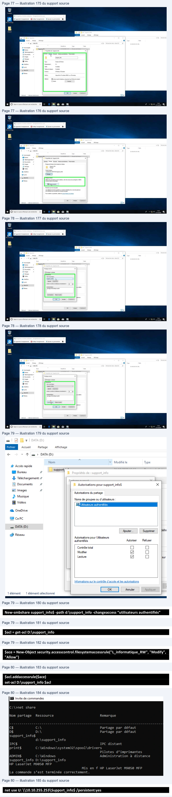
Page 81
3.4 Gestion d’imprimantes
3.4.1 Une imprimante HP LaserJet M9050 MFP est à installer sur le système Windows. Elle
possède l’adresse IP (fictive) 172.16.63.251 et doit être partagée sur le réseau afin
de la rendre disponible pour d’autres postes.
Nous utilisons les pilotes fournis :
Nous les dézippons :
Texte relevé dans les illustrations
Corbeillea
Microsoft Edge
Tzip.exe
ript_utilisateu…
Pilote HP_Laser]
etM9050MFP.e
ss]
WinZip Self-Extractor - Pilote_HP_Laserlet_M9050_MFP.exe
>
To unzip all files in this self-extractor
fileto the
specified folder press the Unzip button.
Run
WinZip
Unzip ta folder:
Print
Driver\pcl6-x64-7 0.0.24832]E
Sale
Close
Overwrite files without prompting
About
When done unzipping open:
Ainstall.exe
Help
Page 82
Choisissez l’ajout d’une imprimante via son port TCP/IP
Texte relevé dans les illustrations
Installation de HP Universal Printing
X
Bienvenue dans l'Assistant d'installation
HP Universal Printing
Cet assistant va installer le pilote HP Universal Printing PCL 6°. Avant
de continuer, lisez le Contrat de licence.
(1
SES
Contrat de licence utilisateur final
*
i
4
LISEZ ATTENTIVEMENT LES INFORMATIONS CI
2 ER
APRÈS AVANT D'UTILISER LE PRODUIT LOGICIEL
:
——
Ce Contrat de licence utilisateur final ("CLUF") est un
oo.
contrat entre (a) vous-même (en tant que personne ou
M
sate
|
Acceptez-vous les conditions de ce Contrat de licence 7
pa
Cliquez sur ‘Oui’ pour accepter et continuer. Si vous sélectionnez
eee
‘Non’, l'installation est annulée.
Installation de HP Universal Printing
x
Mode d'installation
Sélectionnez un mode d'installation pour le pilote "HP Universal Printing PCL 6".
po
(@ Mode Traditionnel - Crée un objet d'imprimante normal dans le dossier Imprimantes. Avec ce
mode, vous sélectionnez
limprimante de destination maintenant
et
elle reste
fixe
(©) Mode Dynamique - Crée un objet ‘Imprimante Universal’ dans le dossier Imprimantes. Avec
ce mode, vous pouvez sélectionner dynamiquement votre imprimante de destination
chaque fois que vous imprimez.
© Mode USB - Plug-and-Play
Supprimer toutes les versions du pilote d'impression universel HP dans le magasin de pilotes
Ajouterle pilote "HP Universal Printing PCL 6" au magasin de pilotes Windows
@
< Amière
Suivant
Annuler
Page 83
Ecrivez l’@ip demandée :
Nous patientons un peu:
Texte relevé dans les illustrations
€ = Ajouter une imprimante
Entrer un nom d'hôte ou une adresse IP d'imprimante
Type de périphérique:
Périphérique TCP/IP
“
Nom d'hôte ou adresse IP
:
172.16.63.251|
Nom du port:
172.16.63.251
Interroger l'imprimante et sélectionner automatiquement le pilote a utiliser
= Ajouter une imprimante
Détection du port TCP/IP
Détection du port TCP/IP...
Windows affichera automatiquement la page suivante une fois le processus de détection terminé,
CG
Page 84
Nous choisirons un pilote HP :
Cliquez sur suivant :
Texte relevé dans les illustrations
a
€
gab Ajouter une imprimante
Informations supplémentaires requises concernant le port
Ce périphérique est introuvable sur le réseau. Vérifiez que:
1. Le périphérique est allumé.
2, Vous êtes connecté au réseau,
3, Le périphérique est configuré correctement,
4. L'adresse de la page précédente est correcte.
Si vous pensez que l'adresse est incorrecte, cliquez sur Précédent pour revenir à la page précédente.
Corrigez l'adresse et effectuez une nouvelle recherche sur le réseau. Si vous êtes sûr que l'adresse est
correcte, sélectionnez le type de périphérique ci-dessous.
Type de périphérique
© Standard
Hewlett Packard
let Direct
“
© Personnalisé
Paramètres.
= Ajouter une imprimante
Détection du modèle de pilote...
Windows communique avec l'imprimante afin de détecter
automatiquement le pilote d'impression à utiliser.
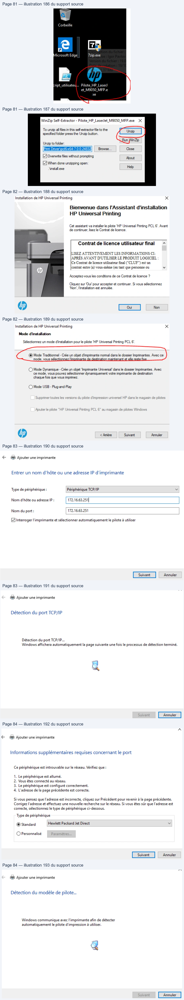
Page 85
Nous choisirons un pilote à déployer :
Renseignez les informations sur l’imprimante :
Texte relevé dans les illustrations
A
€
dab Ajouter une imprimante
Installer le pilote d'imprimante
—
Choisissez l'imprimante dans la liste. Cliquez sur Windows Update pour voir d'autres modèles.
aL
Pour installer le pilote à partir d'un CD d'installation, cliquez sur Disque fourni,
Imprimantes
[J
HP Universal Printing PCL 6
(EQ)
HP Universal Printing PCL 6 (v7.0.0)
Œ
Cepilotea été signé numériquement.
Windows Update
Disque fourni.
Pourquoi la signature du pilote est-elle importante?
Suivant
Annuler
Ca
€ ah Ajouter une imprimante
Entrer un nom d'imprimante
Norm de l'imprimante
:
HP Universal Printing PCL 6 (v7.0.0)
Cette imprimante va être installée avec le pilote HP Universal Printing PCL 6 (v7.0.0).
Page 86
Nous renseignerons le nom demander : « HP LaserJet M9050 MFP »
Nous cliquons sur terminer :
Texte relevé dans les illustrations
À
< = Ajouter une imprimante
Entrer un nom d'imprimante
Nom del'imprimante:
HP LaserJet M9050 MFP|
Cette imprimante va être installée avec le pilote HP Universal Printing PCL 6 (v7.0.0),
Installation de HP Universal Printing
x
Terminer
—
—
Imprimante :
|
sb
HP Universal Printing PCL 6
i
Etat:
Lol
L'imprimante ‘HP Universal Printing PCL 6" a été installée avec
be @
|
succès,
|||||
:
|
Installation de l'imprimante terminée. Cliquez sur Terminer' pour
baa
fermer l'assistant.
Q
Page 87
Pour vérifier nous pouvons aller voir dans la « gestion de l’impression » :
Nous pouvons voir que l’imprimante installée est bien présente :
Texte relevé dans les illustrations
ct=
Tout
Applications
Documents
Web
Plus +
A
À
Meilleur résultat
=
A
Gestion de l'ordinateur
>
{
=
==
/
Application
—_,
P
<7
Applications
ion
de
l'i
.
Gestion de
l'impression
a
Gestion de l'impression
Application
Rechercher dans l'entreprise et sur le Web
=
w
:
A
gestion de - Afficher les résultats
>
CT Ouvrir
Ps
professionnels et Web
De
CO
Exécuter en tant qu'administrateur
Paramètres (7)
:
u
Ouvrir l'emplacement du fichier
2
Épingler au menu Démarrer
ingler à la
barre
des
tâches
ke
+
Épingler
à
la
barre
des
tach
{& Gestion de l'impression
Fichier
Action
Affichage
?
e+2r| S8\Em
{fm Gestion de l'impression
Nom de l'imprimante
Statut delafile…
Travau…
Nom du serveur
Nom du pilote
Version du pilote
Type de pilote
i Filtres personnalisés
Fax
Prêt
=
DESKTOP-VDH....
Microsore
Share
Fax
B
BE
Type 3 - Modeutilisateur
ce VS (OM
ag
csonof-
Pret
FD
Pr
0
DESKTOP-VDH..
Microsof Print To PD
70.0.17763:1
Type4
- Mode utilisateur
<1) Formulaires
IH Microsoft
XPS Document Writer Prêt
0°
DESKTOP-VDH... Microsoft
XPS Document Writer v4
10.0.17763.1
Type 4 - Modeutilisateur
D one
1 OneNote
for Windows 10
Prêt
0
DESKTOP-VDH... Microsoft
Software Printer Driver 10.0.17763.1
Type 4 - Mode utilisateur
=”ES
ri Xerox Office Color
Prêt
0
DESKTOP-VDH...
Generic / Text Only
10.0.17763.1
Type 3 - Mode utilisateur
1 Imprimantes déployées
Page 88
3.4.2 Les permissions d’utilisation de cette dernière sont les suivantes :
3.4.2.1 Tous les utilisateurs peuvent imprimer
3.4.2.2 Le service Comptabilité peut supprimer des impressions bloquées en cas de
problèmes
3.4.2.3 Le service informatique possède le contrôle total
Pour cela faites un clic droit sur l’imprimante :
Puis sur l’onglet sécurité :
Texte relevé dans les illustrations
Bi Gestion
-
x
ein
“Adin
Mage
À
@#9\/am/X2\
HE
|@ Suspendre l'enregistrement
‘Arrêter l'enregistrement
is] Ajouter
un commentaire
+
+ ae poem
max
Prêt
©
DESKTOP-VDH.. Microsoft
Shared Fax Driver
10.017631
‘Type3 -Mode utilisateur
Imprimantes
a
2
Tept |
ee
sts
:
Àman
Oui
fe tte eemprinate
AD
Most neo POF
OIE
Typed Mode sie
ea EMS | cera ea
ÉD. Most} Docume Vitrut 1041781
Types Moderne
HP Las MoU MP
”
=
La
mx OneNote fi
/P-VDH... Microsoft
Software Printer Driver
10.0.17763.1
Type4 - Mode utilisateur
‘Autres actions
>
OF cesar vor
ti
me
Dilgercrée
de groupe
ex Formulaires
Définir des valeurs d'impression
par défaut.
PAS
came
Sp rprmarhes déphgées
Imprimer une page de test
i en ep
eee
supper
eit
hide
a
Elo Ponte
mi pee
eo ee we
ee
ie
Fehr
“Adin
cage
À
es
amixXa/
Be
:
@Suspendrevenregictement © Arétélesregétrement
“MU Ajouteruncommentie @ +
{ie Gestion de l'impression
Nom de l'imprimante
Statut
de le file... Trévau. emmener
Br
rrmmpilote
Actions
“=a
eFax
Pret
o
DESKTOP-VDH... Microsoft
Shared Fax Driver
10.0.17763.1
‘Type
3- Modeutilisateur
(Imprimantes
”
3 Toutes esimprimonts |ip Laseet M050 MEP
Pret
o
DESKTOP-VDH... Genetic
/ Te Only
core 9
rs
impartPOF
pat
0
DESKTOR-VOR
Miao PT POF
orme
pad Modetater
Birnie
en
Nera
DSDace its Pr
9.
SESEIOPO Mronat30S Dacre” JO07IRS
pet Modem
HP ae OsoMEP
ws
ener
omhate Medion
Pet
0
DESKTOPADHL.
MienofterePintr
Diver TO0,7761
Typed Ned iter
renier
5
À
À DESKTOP-VOHFVS (oe |
res
Semis
Poe
ee
ed
Peas HP ase OED
x
[ae a
eee
Shed
Page
Pa
heed atc
=
RTE
Emplacement:
[local informatique
]
Mose:
Gene
Te On
Fonction
pens
nape: on
wacom
i
aca
ae
Sa
Elo Tier pou recente
mo = 2m sew we
A
aaa,
my
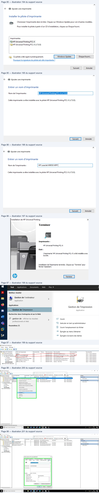
Page 89
Supprimer les utilisateurs non concernés puis ajouter les groupes
L_comptabilite_W et L_informatique_W :
Texte relevé dans les illustrations
te
DIN
ED.
°
lees
Qe Hemme
© À
a
Bb cation cxtimpenioo
[eon ectrprmore
poorer PR Es
Q
as aston
Lhd —
=
ve a roms
ora
Pret
o
DESKTOP-VDH..
Microsoft
Shared Fax Driver
10.0.17783.1
Type3 - Mode ubisateur
Impnmantes,
-
2
Toutes les imprimantes | Qu
Lsee MBOSO MEP
Pret
°
DDESKTOP.VOH...
Generic / Test Only
asie
rs
imperatorin
toPOF
pu
G
DETOPADH.
Méoso int Te POF
rares
Typed Mode ater
pao
Re Ti
TR
Si! lp
(Te
leu | units Se
Mentameeen aan
TOUS LES PAOAGES DAPUCATEN
Lee EE
Auspa TUS
LES PICAGES
ingame
=)
Q
prose
SE
an
—
a
Elo:
ms pee oe
tw we
a
ag
a
i
en 2HIXS
| HE
:
Wi Garondemon
[Nom deimpimane
pren (bess
à
Be pue
LEA >
Fe
“=a
eFax
Pret
o
DESKTOP-VDH... Microsoft
Shared Fax Driver
10.0.17763.1
‘Type3- Mode utilisateur
(Imprimantes
”
fau al MB
Microsoft Print to PDF
Prat
o
DESKTOP-VDH,.. Microsoft
Print To POF
10017631
Type4 - Mode utilisateur
BP boomin
[romaine
pa
0
DESKTOP-VDHL- Mets PteDe
10017781
Typed Mode iatut
tre actns
>
2
FT beset wore
ted]
Poe
ilies
.
mes
en eus
le
Fuce
(DESKTOP VOHFVAL
az
ee
a oar
ne.
pond
imprimer
i)
Q
(Gérer cette imprimarte
Qo
Qa
(Gestion des documents
oO
preter
ER
De
[SIE
|
sr
ie
La CEE
D: = 2m sew we
A
age,
my
Page 90
Ensuite indique les droits demandés :
Le groupe L_Comptabilité_W aura « imprimer » et « gestion des documents »
Le groupe L_Informatique_CT aura tous les droits.
Texte relevé dans les illustrations
we
Fier
eon
Aiichage
2
@#9\/am/X2\ HE
|@ suspendre l'enregistrement Q)Anéterteniegitiement i Ajouteruncommentaire @ =
Be Geen detimpresion
|| nom de timpimete
porn oe een
ee
LD —
Co
+ ae poem
mnFax
Pret
o
DESKTOP-VDH... Microsoft
Shared Fax Driver
10.0.1763.1
‘Type 3 - Mode utilisateur
Imprimantes
a
2 aimant |
La OSD
rt
ü
ESKTOPDH Gena
Te Only
—
.
pirate erst
into POF
pa
0
DESIOPVDH. Misc
Pim ToPOF
rooms
Tyee Mode teur
SE mn ro
| re PS Drcumentie Pt
0
DESKTOPLYOH. MirosoR
XP Document tert 10017781
Typed Mode ita
HP Las MoU MP
”
nn
Mono
Pa
GO
DESKTOPDH.
MicrsotSeftarePonterOnver
10077831
Typed
Mode itt
mate
5
À
DESCTOP ADS
oe
à
Pan
À rer
RES
Er
@ Peps
deHP ave 050 MFP
x
Fam dias
Camu domes
Sein diptice
cont
ae
Lew
Dans
lon)
Senet
Do
gp
tt
LE
TENTE)
1 Cont er 1153ADAM 22874
ACRENTEURPROPRIETARE
BE Atanas DESTOPVOUSAnette)
Bk Comsat DESKTOP VORFVSN Ca
ani DESKTOP VIVA
etn)
usa asus
mm
sion
pasin
ae Far
imprime
i)
ia
(Gérer cettempnmarte
Qa
‘Gestion des documents
Ba
Qa
Frs
annees
DRE
a
i
FEN CEE
mi pee © ei we
nm,
we
Fier
eon
Aiichage
2
@#9\/am/X2\ HE
|@ suspendre l'enregistrement Q)Anéterteniegitiement i Ajouteruncommentaire @ =
Be Geen detimpresion
|| nom de timpimete
porn oe een
ee
LD —
Co
+ ae poem
mnFax
Pret
o
DESKTOP-VDH... Microsoft
Shared Fax Driver
10.0.1763.1
‘Type 3 - Mode utilisateur
Imprimantes
a
2 aimant |
La OSD
rt
ü
ESKTOPDH Gena
Te Only
—
.
pirate erst
into POF
pa
0
DESIOPVDH. Misc
Pim ToPOF
rooms
Tyee Mode teur
SE mn ro
| re PS Drcumentie Pt
0
DESKTOPLYOH. MirosoR
XP Document tert 10017781
Typed Mode ita
HP Las MoU MP
”
nn
Mono
Pa
GO
DESKTOPDH.
MicrsotSeftarePonterOnver
10077831
Typed
Mode itt
mate
5
À
DESCTOP ADS
oe
à
Pan
À rer
RES
Er
@ Peps
deHP ave 050 MFP
x
Fam dias
Camu domes
Sein diptice
com | ae
Lew
Dans le)
Senet
tin dein
nt
TS TOUSLES PROG ESDENON
1 Cont er
153 0139268201127 76427
Ba CRENTEURPROPRIETARE
Bi panto DSTOP YOKE!és)
telat
CESRTOP VORA Cosa)
SEL Mae DESKTOP VDM. Homan)
[aan ses
le
—
cian
i,
ine
acer
Far
imprime
i)
ia
(Gérer cettempnmarte
D
Qa
Cn
da cts
Roo
Frs
:
a
DRE
a
i
FEN CEE
mi pee © ei we
nm,
Page 91
3.4.3 Votre binôme s’y connectera et la déclarera comme imprimante par défaut.
Afin de se connecter à l'imprimante réseau de notre binôme, entrer le chemin UNC de
son poste Windows : \\@ipdubinome
Puis faire un Clic-Droit sur l'imprimante et "Connecter"
Faire un Clic-Droit sur l'imprimante "HP LaserJet M9050 MFP " et sélectionner "Définir
comme imprimante par défaut"
Texte relevé dans les illustrations
B|
>
| 172.16.63.253
Accueil
Partage
Affichage
€
+ À D
>
Réseau
>
172.16.63.253
»
es
# Accès rapide
S& HP LaserJet M9050 MFP
support_info
S Xerox Office Color
IN Bureau
#
ao
S EN >
Réseau
>
172.16.63.253
»
ide
=> HP LaserJet M9050 MFP
#
‘
Ouvrir
rgement: #
~_
Connecter...
ents
#
Créer un raccourci
#
Propriétés
|
am
4a
Yuvrir
oa]
Q
;
nmerle pénphéenque
Page 92
3.4.4 Pour l’édition de documents comptables volumineux (bilan de fin d’exercice, état
des provisions…), un pool d’imprimantes devra être mis en œuvre, autorisant
l’impression sur 2 périphériques d’impression physiques Xerox Office Color possédant
les adresses IP suivantes : les pilotes sont ici :
✓ 172.16.63.250
✓ 172.16.63.249
Nous déployons les pilotes demandés :
Texte relevé dans les illustrations
Corbeille
icrosoft Edge
Tzip.exe
pt_utilisateu... Pilote
HP _Lase..
a
=
Hroupes.csy
Pilote
Xerox Offi
ce-Color_C60C70
EXE
Ap
2 ®
FR WinRAR self-extracting archive
-
x
aI
|
.
—
PU
©
oper ic pourrechercher
mo pees ee es
8 ABO yum D
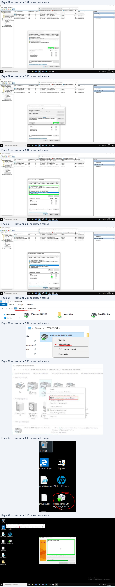
Page 93
Cliquons sur j’accepte:
Texte relevé dans les illustrations
Cliquons sur j'accepte:
e
2e
LL
=
re
“J
xerox @ \
script utiisateu.…
Pilote HP_Lase.
UE
—
a
2
a
B
DOTTA TÉLÉCHARGER,
NIINSTALLER, MIUTILISER
CE LOGICIELET
SRE
FICMERS AUQUELS
LE CLIENT, OÙ UNTIERS AU NOM OUCLIENT, À
—*
dutisation du Logicel sur l'équipement de marque Xerox sur lequel a
Fel
©) taper pour recherches
A:
ee
ee
ee:
ee)
&
AD sro D
e
2e
LL
=
re
Vy
xerox @ |
script utiisateu.…
Pilote HP_Lase.
UE
—
a
2
a
B
DOTTA TÉLÉCHARGER,
NIINSTALLER, MIUTILISER
CE LOGICIELET
SRE
FICMERS AUQUELS
LE CLIENT, OÙ UNTIERS AU NOM OUCLIENT, À
—*
dutisation du Logicel sur l'équipement de marque Xerox sur lequel a
ÉD
©
Taperici pourrechercher
D:
epeeaeseze vps
8 ADM area D
Page 94
Ici nous choisirons une imprimante reconnu sur les réseau:
Nous indiquons l’@ ip de l’imprimante :
Texte relevé dans les illustrations
% installation de l'imprimante Xerox
x
.
1
ie
a
Adresse IP ou nom DNS :
beam
Rechercher
À propos de
Savant >
Annuler
F Installation de l'imprimante Xerox
x
|É |
ze
Adresse IP ou nom ONS =
[172.16.63.250
:
À propos de
Savant >
Annuler
Page 95
Nous choisissons le pilote demandé:
Texte relevé dans les illustrations
Y installation du pilote d'imprimante Xerox
x
Impossible de trouver une imprimante prise en charge pour la valeur de port
sase,
Sélectionner le modéle dimpnmante à installer ou appuyer sur Annuler pour
specifier une autre valeur Ge port.
Xerox Color C70
[
À propos de
|
Suuvant >
Annuler
Page 96
Nous indiquons le nom de l’imprimante, puis nous cliquons sur installer:
Texte relevé dans les illustrations
% Options d'installation
x
ye “Options d'installation :
Nom de la file d'attente :
Xerox Color C60 PCL 6
|
Choix de pilotes d'imprimante :
(PostScript
FAPCL 6 (recommandé)
Options supplémentaires:
Télécharger les fichiers depuis Internet
| Aproposde
| | <<Précédent
Annuler
4 État de l'installation
x
oe
"Installation terminée
oi
Félicitations !
107
Xerox Color C60 a été installé sur l'ordinateur. Vous
=
pouvez imprimer.
Les éléments suivants ont été installés :
- File d'attente : Xerox Color C60 PCL 6
- Pilote : Xerox Color C60 PCL6
vi
EADéfirir comme imprimante par défaut
Fiimprmer une page de test
ClPartager lmprmante
Aproposde
| | Definecontactjemplacem...
| [|Temne|
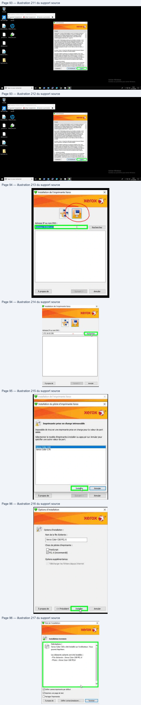
Page 97
Retournons dans le gestionnaire d’imprimante pour voir notre nouvelle imprimante:
Sous l'onglet "Ports", cocher "Activer le pool d'imprimante"
Texte relevé dans les illustrations
=
LW
Tout
Applications
Documents
Web
Plus v
&
À
Meilleur résultat
=
ee = de l'impression
f
7
Application
=~
9
Gestionnaire
de
périphéri
Sa
5" 0nnare
de périphériques
>
Gestion de l'impression
Panneau de configuration
a
~
Application
Annlicsatiane
i= Gestion de l'impression
Fichier
Action
Affichage
?
«+2
X2|E
i= Gestion del'impression
Nom del'imprimante
El quesPeon
os Fax
va = DESTOP-VDHFVO) toc
|HP Lasertet M9050 MFP
w
-
i
a
Pilot
°°
GS) Microsoft Printto PDF
ilotes
a
.
Be Microsoft
XPS Document Writer
(Sy! Formulaires
_
Ü
Ports
=! OneNote for Windows
8
T
:
C | ÉXerox Color C60 PCL 6
f= Imprimantes
Es ERS
.
.
f=) Imprimantes déployées
= Propriétés de Xerox Color C60 PCL6
x
Sécurité
Paramètres du périphérique
Configuration
Administration
Général
Partage
Parts
Avancé
Gestion des couleurs
Ss
Xerox Color CÉOPCLE
Impression sur les ports suivants. L'impression se fera sur le premier port
sélectionné libre.
Port
a
[1 coms:
[1 come:
[1 FILE:
LD 172.16.63.251
X_172_16_63_250
172.16.63.249
iw
©
>
Ajouter un port...
Supprimerle port
Configurer
le port...
Aoteerti gestion
ou
trsgebidirectionnel
F1 Activer le pool d'imprimante
Annuler
Appliquer
Page 98
Cliquons sur ajouter un port :
Sélectionner "Standard TCP/IP Port" puis valider avec "Ajouter un port..."
Texte relevé dans les illustrations
= Propriétés de Xerox Color C60 PCL6
x
Sécurité
Paramètres du périphérique
Configuration
Administration
Général
Partage
Parts
Avancé
Gestion des couleurs
Ss
Xerox Color C60 PCLE
Impression sur les ports suivants. L'impression se fera sur le premier port
sélectionné libre.
Port
“
[1 coms:
LJ come:
C1 FILE:
CO 172.16.63.251
X_172_16_63_250
172.16,63.249
v
<
>
(|
Ajouter un port... p]
Supprimer le port
Configurer le port...
——_____
Activer la gestion du mode bidirectionnel
Activer le pool d'imprimante
aoe
|
Page 99
Ajouter l'adresse IP souhaitée (ici 172.16.63.249) et valider par "Suivant"
Texte relevé dans les illustrations
Assistant Ajout de port impnmante TCP/IP standard
u
Assistant Ajout de port d'imprimante TCP/IP
standard
—
Utilisez cet Assistant pour ajouter un port pour une
Imprimante réseau.
Avant de continuer,
vérifiez que
|,
Le périphérique ect sous tension
2
Le reséau eat configure et vous
y êtes connects
Cliquez sur Suwvant pour continuer
Assistant Ajout de port imprimante TCP/IP standard
Pour quel périphérique voulez-vous ajouter un port ?
ye
Entrez un nom d'imprimante ou une adresse IP, et le nom du port pour le périphérique désiré,
Nom ou adresse IP de l'imprimante :
| 172.16.63.249]
Nom du port:
172.16,63.249
Page 100
Laissons les pilotes “Generic Network Card” :
Valider en cliquant sur "Terminer"
Texte relevé dans les illustrations
| Assistant Ajout de port impnmante TCP/IP standard
Informations supplémentaires requises concemant le port
Le pénphénque n'a pas pu être iderttie
S
|
Ce périphérique est introuvable sur le réseau, Vérifiez que
1. Le périphérique est allumé,
2
Vous étes connecté au réseau,
3, Le périphérique est configuré correctement
4, l'adresse de la pege précédente
st correcte
Sivous pensez que l'adresse est incorrecte cliquez sur Précédent pour revenir é ls page précédente
Corrigez l'adresse et effectuez une nouvelle recherche sur le réseau, Si vous êtes sûr que l'adresse ect
|
correcte, sétectionnez le type de périphérique ci-dessous,
Type de penphénque
@ Standard
[Generic Network Card
i}
Personnalisé
|
| Assistant Ajout de port imprmante TCP/IP standard
U
Fin de l'Assistant Ajout de port imprimante
TCP/IP standard
—
Vous avez sélectionné un port avec les caractéristiques
suivantes
SNMP
Non
Protacale;
RAW, Port $100
Periphenque;
1051,19.95
Nom du por:
1GS1.19,93
Type de cartes
Genenc Network Card
Chiquezsur Terminer pour terminer cet Assistant.
< Précédent
|
Annuler
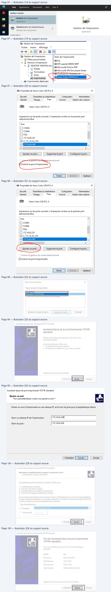
Page 101
Voici notre second port ip ajouter à notre imprimante qui fait notre pool d’impression:
Texte relevé dans les illustrations
a Propriétés de Xerox Color C60 PCL6
x
Sécurité
Paramètres du périphérique
Configuration
Administration
Général
Partage
Ports
Avancé
Gestion des couleurs
>
Xerox Color C60 PCLE
Impression sur les ports suivants. L'impression se fera sur le premier port
sélectionné libre.
Port
“
[1 com3:
[] coma:
[1 FILE:
ETES
2
q
X_172_16_63_230
172.16.63.249
iw
<
>
Ajouter un port...
Supprimer le port
Configurer le port...
Activer la gestion du mode bidirectionnel
Activer le pool d'imprimante
Annuler
Appliquer
Page 102
3.4.5 Vous tiendrez compte des caractéristiques suivantes :
3.4.5.1 Seul le service Comptabilité est habilité à utiliser ces périphériques et
uniquement entre 19h00 et 3h00
3.4.5.2 Les administrateurs (service informatique) possèdent le contrôle total.
Se rendre sous l'onglet "Sécurité", supprimer le groupe "Tout le monde" de la liste des
groupes autorisés puis cliquer sur "Ajouter..."
Texte relevé dans les illustrations
FE
DESKTOP-TMS12UEïnfomatique;DESKTOP-TM912UE\comotabilite
énfier
le:
1
Page 103
Accorder toutes les autorisations au groupe "informatique"
Sous l’onglet avancé, cocher l’option « disponible de » puis compléter la tranche
horaire de 19:00 à 03:00)
Texte relevé dans les illustrations
Imprimer
Gérer cette imprimante
HA
Gestion des documents
M
Autorisations spéciales
@ Disponible de
19:00
fe]
à
103:00
+
ga
Proce
jovi
j
‘
Page 104
Valider les modifications avec "OK"
3.4.6 Crée 2 files d’attente pour la Xerox Office Color. Les directeurs auront la priorité
sur les autres groupes.
3.4.7 Déplacer le spool d’impression sur D : (au lieu de C:\windows).
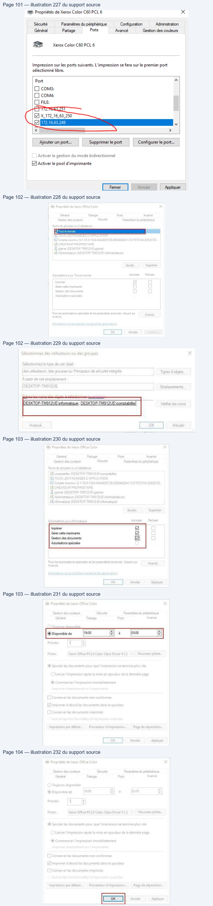
Page 105
4 Partie 4 – Configuration avancée des systems
4.1 Configuration avancée système Debian
N.B : il est fortement conseillé de réaliser un snapshot machine éteinte.
4.1.1 Afin d’accélérer quelque peu le démarrage du système, l’affichage du menu
du chargeur d’amorçage grub ne durera que 2 secondes.
Éditer le fichier /etc/default/grub et modifier l’entrée GRUB_TIMEOUT avec valeur
« 2 » :
# vim /etc/default/grub
Ensuite, mettre à jour le Grub :
#update-grub ou grub2-mkconfig -o /boot/grub/grub.cfg
Texte relevé dans les illustrations
L
1# If
you change this
file,
run
‘update-grub'
afterwards
to update
2 # /boot/grub/grub.cfg.
|
|
3 # For full documentation of the options
in this
file,
see:
4 #
info
-f grub
-n
‘Simple configuration
6
GRUB_DEFAULT=0
7 GRUB_TIMEOUT=2]
8 GRUB_DISTRIBUTOR= Lsb_ release
-1
-s 2> /dev/n
||
echo Debian
9
GRUB_CMDLINE_LINUX_DEFAULT="quiet'
10
GRUB_CMDLINE_LINUX=""
11
12
# Uncomment
to enable BadRAM filtering,
modify to suit your needs
13
# This works with Linux
(no patch
required)
and with any kernel
that obtains
14 # the memory map information from GRUB
(GNU
Mach,
kernel of FreeBSD
...)
15 #GRUB_BADRAM="0x01234567
, Oxfefefefe, Ox89abcdef , Oxefefefef
16
17 # Uncomment
to disable graphical
terminal
(grub-pc
only)
18 #GRUB_TERMINAL=console
19
20
# The resolution used on graphical
terminal
21 # note that you can use only modes which your graphic card supports via VBE
22 # you can see them in
real GRUB with the command
‘vbeinfo
23
#GRUB_GFXMODE=640x480
25 # Uncomment
if you don't want GRUB to pass
"root=UUID=xxx"
parameter to Linux
26 #GRUB_DISABLE_LINUX_UUID=true
28 # Uncomment to disable generation of
recovery mode menu entries
29 #GRUB_DISABLE_RECOVERY="true"
30
31 # Uncomment
to get
a beep at grub start
32 #GRUB_INIT_TUNE="480 440
1"
root@Deb1OMSP
:~# update-grub ou grub2-mkconfig -o /boot/grub/grub.cfg
Création du fichier de configuration GRUB...
Found background image: /usr/share/images/desktop-base/desktop-grub.
png
Image Linux trouvée
:
/boot/vmlinuz-4.19.6-12-amd64
Image mémoire initiale trouvée
: /boot/initrd.img-4.19.0-12-amd64
Image Linux trouvée
: /boot/vmlinuz-4.19.6-11-amd64
Image mémoire initiale trouvée
:
/boot/initrd.img-4.19.6-11-amd64
fait
Page 106
4.1.2 Finalement, l’espace réservé à la pagination n’est pas suffisant. Il faudrait ainsi
utiliser, et ce de façon définitive un swap de 1 Go, pour cela vous vous servirez
de l’espace restant sur le premier disque.
Afin de redimensionner le swap, désactiver le swap :
# swapoff /dev/sda2
Puis modifier le partitionnement :
# fdisk /dev/sda
Préparer la partition à recevoir le swap :
# mkswap /dev/sda2
Puis éditer le fichier /etc/fstab et copier la ligne de swap existante (en la
commentant) pour la modifier comme suit :
/dev/sda2 swap swap defaults 0 0
activer le swap:
# swapon –a /dev/sda2
4.1.3 Vous mettrez à jour l’intégralité des paquets de votre système Debian.
Grâce à la commande :
# apt upgrade
Page 107
4.2 Configuration avancée système Windows 10
4.2.1 Pour permettre la reconfiguration du système Windows 10 depuis un système
distant, vous activerez la fonctionnalité du bureau à distance avec
authentification au niveau du réseau (NLA) et donnerez les autorisations
adéquates pour le compte utilisateur de votre binôme.
Autoriser les connexions à distance ce situe dans le Panneau de configuration >
système et sécurité > autoriser l’accès à distance :
Texte relevé dans les illustrations
@ Système et sécurité
+
+? LS > Panneau de configuration
> Système et sécurité
Page d'accueil du panneau de
4
was
.
configuration
vw Sécurité et maintenance
Vérifier l'état de votre ordinateur et résoudre les problèmes
° _Système et sécurité _
@ Modifier les paramètres de contrôle de compte d'utilisateur
Réseau ot Internet
Résoudre des problèmes informatiques courants
Matériel et audio
Pg Pare-feu Windows Defender
p
Vérifier l'état du pare-feu | Autoriser une application via le Pare-feu Windows
rogrammes
Comptes d'utilisateurs
& Systéme
A
oe
“=
Afficher la quantité de mémoire RAM et la vitesse du processeur
LA Autoriser l'accès à distance
pparence et personnalisation
:
-
|
-
5
à
mt
Horloge et région
Propriétés système
x
Options d'ergonomie
Nom de l'ordinateur
Matériel
Paramètres système avancés
Protection du système
Utilisation à distance
Assistance à distance
lorique des fichiers
© Autoriser les connexions d'assistance à distance vers cet ordinateur
Que se passel lorsque ‘active l'Assistance à
distance ?
ir d'une sauvegarde
Options avancées.
Bureau à distance
Choisissez une option, puis spécifiez qui peut se connecter.
O Ne pas autoriser les connexions à distance à cet ordinateur
(©) Autoriser les connexions à distance à cet ordinateur
[A N'autoriser que la connexion des ordinateurs exécutant le Bureau
is
à distance avec authentification NLA (recommandé)
lournaux d'événements
Comment choisir ?
Sélectionnez des utilisateurs...
(=)
Annuler | |. Appliquer
Page 108
Ensuite nous pouvons ajouter le groupe des informaticiens dans le groupe des
utilisateurs de bureau à distance :
Nous le ferons via l’invite de commande powershell (avec les droits administrateur),
sinon le système ne l’acceptera pas :
net localgroup « utilisateurs du bureau à distance » L_informatique /add
Pour vérifier le résultat :
Texte relevé dans les illustrations
a Gestion de l'ordinateur
Fichier
Action
Affichage
?
e+2r| 08
E
(> Gestion de l'ordinateur (local) || Nom
Description
¥ ii Outils systeme
Si Administrateurs
Les membres du groupe Administ...
©
Planificateur de tâches
-
-
Administrateurs Hyper-V
Les membres de ce groupe dispos...
FF] Observateur d'événeme
.
ae
.
.
@& Duplicateurs
Prend en charge la réplication des...
f2| Dossiers partagés
@Bllis.1usRS
G
intéqré
utilisé par |
.
M
:
roupe
intégré
utilisé
par
les servi...
v &® Utilisateurs et groupes |
—
P
9
P
-
à Utilisateurs
SM Invités
Les membres du groupe Invités di...
|
Groupes
& Lecteurs des journaux d'événements
Des membres de ce groupe peuve...
@ Performance
dk Opérateurs d'assistance de contrôle d'accès Les membres de ce groupe peuve...
r Gestionnaire de périphé @& Opérateurs de chiffrement
Les membres sont autorisés à effe...
v #3 Stockage
3h Opérateurs de configuration réseau
Les membres de ce groupe peuve...
iP Gestion des disques
& Opérateurs de sauvegarde
Les membres du groupe Opérate..
EX Services et applications
dE System Managed Accounts Group
Les membres de ce groupe sont g...
SH Utilisateurs
Les utilisateurs ne peuvent pas eff...
@ Utilisateurs avec pouvoir
Les utilisateurs avec pouvoir sont...
Utilisateurs de gestion à distance
Les membres de ce groupe ont ac...
Se
Litili
de
l'Ana
de performances Les membres de ce groupe peuve...
C| @& Utilisateurs du Bureau à distance
Les membres de ce groupe dispos...
ÆUtisateurs du journal de performances
Les membres de ce groupe peuve...
@& Utilisateurs du modèle COM distribué
Les membres sont autorisés à lan...
Be _vmware_
VMware User Group
| Æ Administrateur
: Windows PowerShell
Windows
PowerShell
Copyright
(C)
Microsoft Corporation.
Tous droits réservés.
PS C:\Windows\system32> net localgroup
"utilisateurs du bureau
à distance"
L_informatique
/add
La
commande
s’est terminée
correctement.
Propriétés de: Utilisateurs du Bureau à distance
f
À
Général
a
Utilisateurs du Bureau à distance
Description
:
Les membres de ce groupe disposent des droits nécessaires
pour ouvir une session à distance
Membres
:
& L_Informatique
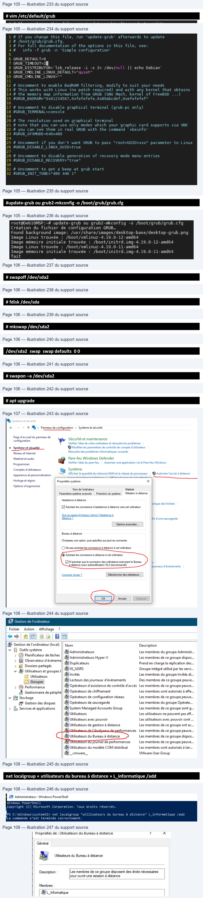
Page 109
4.2.2 Vérifiez le numéro de port de RDP avec la commande netstat -an.
Depuis le pc Debian 10 avec remmina :
Nous pouvons voir sur l’image ci-dessus, la connexion locale est bien sur le port
3389 avec l’@ip 172.16.63.253.
4.2.3 Vous demanderez à votre binôme de se connecter sur votre poste
Windows 10 afin de tester le bon fonctionnement.
Texte relevé dans les illustrations
5]
#X
Gestionnaire des tâches
—
o
x
PS C:\Windows\system32> netstat -ano
| select
Fichier
Options
Affichage
pee Cats
Processus | Performance | Historique
des applications | Démarrage | Utilisateurs
Détails |Services
Proto
Adresse locale
Adresse distante
État
TCP
@.0.0.0:135
0.0.0.0:0
LISTENING
880
Nom
PID
Statut
Nom d'utilisateur
Mémoire
(...
Pro...
Virtualisa À
TCP
@.0.0.0:445
0.0.0.0:0
LISTENING
4
SS pe
nee
Hire
er
E)RuntimeBroker.exe
5148
En cours d'exécution
loxton
320Ko
00
Désactivé
TCP
@.0.8.0:5048
@.0.0.8:8
LISTENING
1216
@ OneDrive.exe
5144
En cours d'exécution
fx
460 Ko
00
Désactivé
IE
OMAR)
OD
Panay
&
EJ YourPhone.exe
5076
interrompu
fx
OKo
00
Désactivé
TCP
0.0.0.0:49664
0.0.0.0:0
LISTENING
540
-
"|
TCP
@.0.0.0:49665
0.0.0.0:0
LISTENING
644
=| SkypeApp.exe
5052
Interrompu
fx
OKo
00
Désactivé
TCP
@.0.0.0:49666
0.0.0.6:8
LISTENING
1088
©) ShellExperienceHost.
4976
Interrompu
loxton
0 Ko
00
Désactivé
TCP
@.0.0.0:49667
0.0.0.0:0
LISTENING
68
7
02
0
00
7
1e
genes
ges
TENTE
ooo
BJ taskhostw.exe
4924
En cours d'exécution
loxton
OKo
00
Désactivé
TCP
0.6.0.0:49670
0.0.0.0:0
LISTENING
628
El dwm.exe
4876
En cours d'exécution
DWM-2
32Ko
00
Désactivé
TCP
10.10.255.253:139
0.0.0.0:0
LISTENING
4
| SearchUl.exe
4836
Interrompu
loxton
OKo
00
Désactivé
TCP
L::1:135
[::]:0
LISTENING
880
712
0
He
Le
ie
LISTEN
:
Edilhost.exe
4712
En cours d'exécution
Systeme
0Ko
00
Nonauto
TcP
[::]:3389
[::]:0
LISTENING
4516
IS conhost.exe
4676
En cours d'exécution
fx
120Ko
00
Nonauto
TCP
[:2]:5357
[::]:0
LISTENING
4
1] RuntimeBroker.exe
4624
En cours d'exécution
fix
OKo
00
Désactivé
TCP
[::]:49664
EE
LISTENING
540
ps
E
Fe
Hors
SES
re eee
eae
© |svchost.exe
4516
En cours d'exécution
SERVICE RESEAU
340Ko
00.
Non auto
TCP
[::]:49666
[::]:@
LISTENING
1088
PF ctfmon.exe
4512
En cours d'exécution
loxton
OKo
00
Désactivé
TCP
[L::1:49667
[::1:0
LISTENING
68
E\ApplicationFrameHo...
4340
En cours d'exécution
fx
0Ko
00
Désactivé
TCP
[::]:49668
[::]:0
LISTENING
1968
335
5
.
5
5
oo |
tcp.
fs: ].49670
tie
ies
oe
©] SgrmBroker.exe
4332
En cours d'exécution
ystème
0Ko
jon auto
UDP
6.0.0.0:500
34
68
E]RuntimeBroker.exe
4316
En cours d'exécution
fx
OKo
00
Désactivé¥
UDP
0.0.0.0:3389
+
4516
<
>
UDP
0.0.0.0:3702
oo
1216
UDP
@.0.0.0:3782
LS
2312
<
‘i
UP
0.8.0 0:37
nl
Sai
Moins de détails
Fin de tâche
Activités
Remmina +
mar. 14:52
172.16.63.253
ra
3
oH
© 172.16.63.253
ra
L3
ra
oa
ca
aa
£3 Administrateur
: Windows PowerShell
—
a
x
a
=
Proto
Adresse locale
Adresse
distante
Etat
PS
C:\Windows \system32>
netstat
-ano
Connexions
actives
RS
Proto
Adresse locale
Adresse distante
État
TCP
@.28.8.0:135
@.2.28.0:2
LISTENING
880
TCP
@.0.0.@:445
@.2.0.20:2
LISTENING
4
a
TCP
@.0.0.@:3389
a.e.0.0:@
LISTENING
4516
TCP
2.0.0.8:5040
@.2.2.0:2
LISTENING
1216
TCP
@.28.0.0:5357
@.28.28.0:2
LISTENING
4
v
TCP
@. 2.2. a:49664
@.2.0.20:2
LISTENING
540
TCP
0.0.0.0:49665
a.0.0.0:@
LISTENING
644
2
TCP
@.0.0.0:49666
a.8.8.0:@
LISTENING
1088
.
TCP
@. 0.2. 2:49667
@.2.0.2:2
LISTENING
68
TCP
0.0.0.8:49668
a.e.0.0:@
LISTENING
1960
TCP
2.0.0.0:49670
a.0.0.0:@
LISTENING
628
TCP
172.16.63.253:139
@.28.28.0:2
LISTENING
4
TCP
172.16.63.253:3389
172.16.63.252:38946
ESTABLISHED
4516
Page 110
5 Partie 5 – Installation d’applications
5.1 Installation d’application sur le Windows 10
5.1.1 Vous chercherez et validerez la possibilité d’installer de façon silencieuse le
logiciel 7zip. C’est-à-dire, qu’aucune boite de dialogue ou assistant
graphique ne doit s’afficher à l’écran au déclenchement de l’installation,
hormis bien sûr l’alerte UAC.(Regarder dans l’aide et la FAQ du site officiel
de 7zip)
Nous pouvons accèder à l’aide de 7zip via l’URL suivante :
https://www.7-zip.org/faq.html
À partir d’un fichier batch ou directement depuis la ligne de commande, lancer
l’exécutable :
7zipXXXX-x64.exe /S /D="c:\program files\7zip"
5.2 Installation d’application sur le poste Debian 10
5.2.1 Sans toucher aux paramétrages actuels du poste Windows, vous vous
connecterez à ce dernier à l’aide du protocole RDP. Pour cela, vous
rechercherez et installerez une application cliente disponible sur les dépôts
officiels sous forme graphique capable entre autres de gérer ce protocole,
sachant que Vinagre et freerdp ne permettent pas facilement de gérer
l’authentification NLA.
Après une recherche avec :
#apt search rdp
#apt search bureau a distance (ou apt seach remote desktop)
Nous pouvons installer remmina :
#apt install remmina
Dans l'interface graphique, lancer Remmina :
Texte relevé dans les illustrations
En
train
de
trier...
Fait
Activités
ven. 13:53
Q
remml
a
Remmina
Page 111
Créer une nouvelle connexion :
Compléter le nom et le mot de passe puis cliquons sur « connexion » :
Texte relevé dans les illustrations
a
Visionneur
de bureaux distants Remmina
.—
=
a
Remote Desktop
Client
“
~
P
RDP +
110.10.255.25.
a
Nom +
Groupe
Serveur
Greffon
Dernière connexion
0 élément au total.
Souhaitez-vous autoriser Remmina à envoyer périodiquement des statistiques d'utilisation à ses développeurs? : Non
Oui
Préférences de bureau distant
x
Profil
Non
Connexion rapide
Groupe
.
Protocole
© RDP — Remote Desktop Protocol
Le
Précommande
command %h %u %t %U %p %q --option
Post commande
/path/to/command -opt1 arg %h %u %t -opt2 %U Y%p %g
Basique
Avancé
Tunnel SSH
Serveur
172.16.63.253
+
Nom d'utilisateur
loxton
Mot de passe de l'utilisateur
eocccce
Définitions d'affichage
+) Utiliser la taille de fenêtre initiale
Utiliser La définition d'affichage du client
Personnalisée | 640x480
ad
=
Profondeur de couleur
GFX AVC 4:4:4 (32 bon)
=
Annuler
Définir par défaut
Enregistrer
Connexion
Enregistrer et se connecter
Page 112
Nous pouvons voir sur l’image ci-dessous que nous sommes connecté sur le windows 10 :
5.2.2 Installez Webmin afin que l’administrateur puis effectuer une partie de son travail via
une interface web graphique.
Avec l’installation en ligne :
https://www.webmin.com/deb.html
Texte relevé dans les illustrations
Deb10_MSP/lapinnoir/root
Activités
© Remmina +
mar. 14:55
>|
172.16.63.253
x
|}
@172.16.63.253
»
|
53
d
Le
4e
a
a
moO
x
= à
ANT
crane
CAS webmin
RE KE
Home #77 (5):
Documentation
Usermin
Virtualmin
Cloudmin
Community
Download Webmin 1.960
@ Installing on Debian
@ RPM
.
7
.
oe
If you are using the DEB version of webmin, first download the file from the
downloads
pac
@ Debian Package
, or run the command
:
@ TAR file
wget http: //prdownloads. sourceforge.net/webadmin/webmin_1.960_al11.deb
@ Solaris Package
@ Development Versions
then run the command
:
@
Third-Party Modules
dpkg --install webmin_1.960_a11.deb
Webmin Installation
The install will be done automatically to
/usr/snare/webmin, the administration username set
@ Installing the RPM
to root and the password to your current root password. You should now be able to login to
:
Webmin at the URL
http://|
st:
1000
Or if accessing it remotely, replace 1ccainost
@
Installing on Debian
:
:
with your system's IP address.
@
Installing the TAR File
@ Installing on Solaris
If Debian complains about missing dependencies, you can install them with the command
:
@ Installing
on Windows
apt-get install
perl
libnet-ssleay-perl
openssl
libauthen-pam-perl
1libpam-
runtime libio-pty-perl
apt-show-versions python
Other Sites
.
If you are installing on Ubuntu and the apt-get command reports that some of the packages
@ Virtualmin Pro
cannot be found, edit
/etc/apt/sources.1ist and make sure the lines ending with universe are
@ Webmin Supporters
not commented out.
@ StyleShout
Some Debian-based distributions (Ubuntu in particular) don't allow logins by the root user
<
FORGE
by default. However, the user created at system installation time can use sudo to switch to
root. Webmin will allow any user who has this suco capability to login with full root privileges.
If you want to connect from a remote server and your system hasa firewall installed, see
his
pag
is
ns
t
c
00.
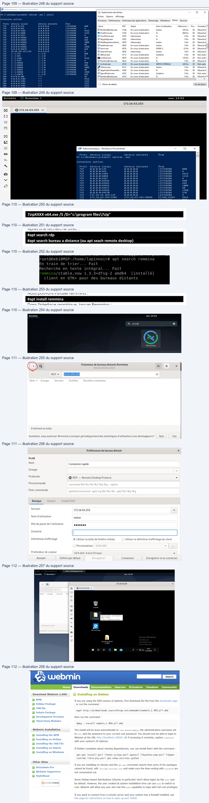
Page 113
Comme indiquer il manque des dépendances :
Appliquons les dépendances :
Webmin est cassé réparons le :
Texte relevé dans les illustrations
root@Deb19MSP:-# dpkg --install webmin 1.960 all.deb
Sélection du paquet webmin précédemment désélectionné.
(Lecture de La base de données...
142710 fichiers
et répertoires déjà installés.)
Préparation du dépaquetage de webmin 1.960 all.deb
...
Dépaquetage de webmin
(1.960)
...
dpkg:
des problémes
de dépendances empéchent la configuration de webmin
:
webmin dépend de Libauthen-pam-perl
;
cependant
:
Le paquet Libauthen-pam-perl
n'est pas installé.
webmin dépend de libio-pty-perl
;
cependant
:
Le paquet Libio-pty-perl
n'est pas installé.
dpkg:
de traitement du paquet webmin
(--install)
:
problèmes de dépendances
-
laissé non configuré
raitement des actions différées
(« triggers
»)
pour systemd
(241-7~deblou4)
...
Des
ont été rencontrées pendant L'exécution
:
webmin
root@eb10MSP:~# apt-get install perl libnet-ssleay-perl openssl libauthen-pam-perl Libpam-runtime libio-pty-perl apt-show-versions python
Lecture des Listes de paquets...
Fait
Construction de L'arbre des dépendances
Lecture
des
informations
d'état...
Fait
Libnet-ssleay-perl
est déjà la version la plus
récente
(1.85-24b1).
lbnet@saleay{perlapasaclentelinetallclwantallasenti=s
openssl
est
déjà la version la plus
récente
(1.1.1d-0+deb10u3).
openssl passé en
« installé manuellement
».
Libpam-runtime est déjà la version la plus
récente
(1.3.1-5).
perl
est
déjà la version la plus
récente
(5.28.1-6+debl6ul).
python est déjà la version la plus
récente
(2.7.16-1).
Vous pouvez Lancer
« apt
--fix-broken install
» pour corriger ces problèmes.
Les paquets
suivants contiennent des dépendances non satisfaites
:
apt-show-versions
:
Dépend:
libapt-pkg-perl
(>= 0.1.21)
mais ne sera pas installé
E:
Dépendances non satisfaites.
Essayez
«
apt
--fix-broken
install
» sans paquet
(ou indiquez
une solution).
root@Deb10MSP:-# apt
--fix-broken install
root@Deb1OMSP:-# apt
--fix-broken install
Lecture des
listes
de paquets...
Fait
Construction de l'arbre des dépendances
Lecture
des
informations
d'état...
Fait
Correction des dépendances...
Fait
Les paquets supplémentaires
suivants seront installés
:
libauthen-pam-perl Libio-pty-perl
Les NOUVEAUX paquets
suivants seront installés
:
libauthen-pam-perl libio-pty-perl
© mis
à jour,
2 nouvellement installés,
©
à enlever et
@ non mis
à jour.
1 partiellement installés
ou enlevés.
Il est nécessaire
de prendre 61,4 ko dans les archives.
Après
cette opération,
188 ko d'espace disque supplémentaires
seront utilisés.
Souhaitez-vous
continuer
?
[0/n]
0
Réception de
:1 http://ftp.fr.debian.org/debian buster/main amd64 libauthen-pam-perl amd64 0.16-3+b6
[27,6 kB]
Réception de
:2 http://ftp.fr.debian.org/debian buster/main amd64 libio-pty-perl amd64 1:1.08-1.1+b5
[33,7 kB]
61,4 ko réceptionnés
en Os
(312 ko/s)
Sélection du paquet libauthen-pam-perl précédemment désélectionné.
(Lecture de la base de données...
200742 fichiers
et
répertoires
déjà installés.)
Préparation du dépaquetage de
.../libauthen-pam-perl_0.16-3+b6_amd64.deb
...
Dépaquetage de Llibauthen-pam-perl
(0.16-3+b6)
...
Sélection du paquet libio-pty-perl précédemment désélectionné.
Préparation du dépaquetage de
.../libio-pty-perl_1%3al.08-1.1+b5_amd64.deb
...
Dépaquetage de libio-pty-perl
(1:1.08-1.1+b5)
...
Paramétrage de libio-pty-perl
(1:1.08-1.1+b5)
...
Paramétrage de libauthen-pam-perl
(0.16-3+b6)
...
Paramétrage de webmin
(1.960)
...
Webmin install complete.
You can now login to https://Deb1OMSP :10000/
as
root with your
root password,
or as any user who can use sudo
to
run commands
as
root.
‘Traitement des actions différées
(« triggers
»)
pour man-db
(2.8.5-2)
...
Traitement des actions différées
(« triggers
»)
pour systemd
(241-7~debl0u4)
...
root@Deb10MSP
:~#
Page 114
Nous allons maintenant sur notre navigateur :
Acceptons les risques :
Texte relevé dans les illustrations
À
Attention: risque probab
x | +
€ >
Cc a
À https://deb10msp:10000
~ OW
à. Attention
: risque probable de sécurité
Firefox a détecté une menace de sécurité potentielle et n'a pas poursuivi vers deb10msp. Si vous accédez à ce site, des
attaquants pourraient dérober des informations comme vos mots de passe, courriels, ou données de carte bancaire.
En savoir plus...
à. Attention: risque probable de sécurité
Firefox a détecté une menace de sécurité potentielle et n'a pas poursuivi vers deb10msp. Si vous accédez à ce site, des
attaquants pourraient dérober des informations comme vos mots de passe, courriels, ou données de carte bancaire.
En savoir plus...
Les sites web justifient leur identité par des certificats. Firefox ne fait pas confiance à ce site, car il utilise
un certificat qui n'est pas valide pour deb10msp:10000.
Code d'erreur:MOZILLA_PKIX_ERROR_SELF_SIGNED_CERT
Afficher le certificat
Accepter le risque et poursuivre
Page 115
Authentifions-nous en super-admin root :
Ça marche :
Texte relevé dans les illustrations
€ Login to Webmin
x |+
&
Cc à
© À https://deblOmsp:10000
You must enter a username and
password to login to the server
on deb10msp
&
root
@
| oc!
Remember me
+ Signin
€ Dashboard — Webmin!
x | +
>
€
ee
©| À https://deb1Omsp:10000/sysinfo.cgi?xnavigation=1
OB
+
w
In D ©
=
G
Dashboard
System Information
C
& Webmin
‘
75%
À
29%
0%
32%
\
V4
# Other:
‘
NS 7
©
Networking
«
& Hardware
«
System hostname
Deb10MSP (127.0.1.1)
© Cluster
‘
Operating system
Debian Linux 10
fe Un-used Modules
‘
Webmin version
1.960
Authentic theme version
1961
©
©
Refresh Modules
Time on system
Friday, October23,2020 2:25 PM
Kernel and CPU
Linux 4.19.0-12-amd64 on x86_64
IH
2
2 % ©
dort
Processor information
Intel(R) Core(TM) i9-9900K CPU @ 3.60GHz, 2 cores
‘System uptime
7 minutes
Running processes
191
CPU load averages
1.05 (1 min) 1.16 (5 mins) 0.76 (15 mins)
Real memory
1.08 GiB used / 755.38 MiB cached / 3.83 GiB total
Virtual memory
0 bytes used / 242.99 MiB total
Local disk space
5.48 GiB used / 11.4 GiB free / 16.89 GiB total
Package updates
All installed packages are up to date
Stats History
Page 116
6 Partie 6 – Sauvegarde et restauration
6.1 Sauvegarde sur le poste Debian 10
6.1.1 Afin d’éviter toute perte de données importantes, vous planifierez la sauvegarde
quotidienne à 12h30 sous forme de fichiers « tar » :
6.1.1.1 Des données personnelles des utilisateurs
6.1.1.2 Des fichiers de données présents dans les dossiers de service
Pour cela nous pouvons créer un script :
#vim /root/script.sh
Contenu du script :
#!/bin/bash
tar cf /root/HomeBack.tar /home
tar cf /root/ServicesBack.tar /services
Modification des permissions du script afin qu’il puisse être utilisé :
#chmod u+x /root/script.sh
Puis planification à l’aide d’une crontab :
#crontab -e
Puis inscription dans le fichier :
30 12 * * 1-5 /root/script.sh
Texte relevé dans les illustrations
GNU nano 3.2
RE EEOTETTES
ig Edit this file to introduce tasks to be run by cron.
# Each task
to run has to be defined through
a single line
# indicating with different fields when the task will be run
# and what command to run for the task
# To define the time you can provide concrete values for
# minute
(m),
hour
(h),
day of month
(dom),
month
(mon),
# and day of week
(dow)
or use
'*'
in these fields
(for
'any').
# Notice that tasks will be started based on the cron's system
# daemon's
notion
of time
and timezones.
# output of the crontab jobs
(including errors)
is sent through
id email to the user the crontab file belongs to (unless redirected).
# For example,
you can
run a backup of all your user accounts
# at
5 a.m every week with:
Æ 0
5
*
*
1 tar -zcf /var/backups/home.tgz
/home/
É For more information see the manual pages of crontab(5) and cron(s)
# mh
dom mon dow
command
30 12 * * 1-5 /root/script.sh]
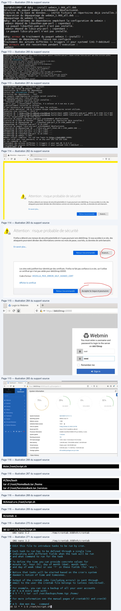
Page 117
6.1.2 Pour vous prémunir d’un arrêt brutal du système, vous configurerez une duplication
des fichiers à l’aide de la commande scp en direction d’un dossier qui sera mis à
disposition à distance sur le poste Debian de votre binôme.
N.B : il se peut que la commande scp ne soit pas présente sur votre système. Vous installerez
le cas échéant les paquets nécessaires.
Pour cela regardons si nous avons déjà des paquets concernant SCP :
#apt-cache search scp
Puis dans notre crontab ajoutons :
scp /root/*.tar loxton@ipdubinôme:/dossier
Texte relevé dans les illustrations
#
Edit
this
file
to
introduce
tasks
to
be
run
by
cron.
#
# Each
task
to
run has
to
be
defined through
a
single line
# indicating with
different fields
when
the
task
will
be
run
#
and
what
command
to
run
for
the
task
#
To
define
the
time
you
can
provide
concrete
values
for
# minute
(m),
hour
(h),
day
of
month
(dom),
month
(mon),
#
and
day
of
week
(dow)
or
use
'*'
in
these
fields
(for
‘any').
#
# Notice
that
tasks
will
be
started
based
on
the
cron's
system
#
daemon's
notion
of
time
and
timezones.
#
# Output
of
the crontab
jobs
(including errors)
is
sent
through
# email
to
the
user the
crontab
file
belongs
to
(unless
redirected).
#
#
For example,
you can
run
a backup
of
all
your user
accounts
#
at
5
a.m
every
week
with:
#05
*
*
1
tar
-zcf
/var/backups/home.tgz
/home/
#
#
For more
information
see
the
manual
pages
of
crontab(5)
and cron(8
#
# mh
dom mon
dow
conifand
30
12
*
*
1-5 /root/script.sh && scp /root/*.tar loxton@ipdubinôme:/dossier_partage_binome
Page 118
6.2 Sauvegarde sur les postes Windows 10
6.2.1 Vous ajouterez tout d’abord un nouveau disque dur de 60 Go dans le cas où vous
manqueriez d’espace de stockage.
Veuillez répéter la procédure d’ajout de disque sous Vmware workstation écrite au début
de la correction de cette MSP
6.2.2 Vous réaliserez une image système permettant en cas de panne importante de
restaurer le système d’exploitation en intégralité.
Page 119
Sous "Stockage" - "Gestion des disques", repérer le disque de 60Go puis ajouter un nouveau
volume simple
(Clic-droit sur l'espace "non alloué" puis "Nouveau volume simple")
Laisser la taille maximale et cliquer sur "Suivant"
Texte relevé dans les illustrations
&
Gestion
de l'ordinateu:
oO
y
|
Fichier
Action
Affichage
Æ
Gestion
de
l'ordinateur (local) || Volume
Disposition | Type _ | Systeme defichiers | Statut
Actions
|
w
Jutils
systeme
=
(C
Simple
Debase
NTFS
Sain
(Démarrer,
Fichier
d'échange,
Vidage:
|
.
|
;
1
(
ple
Debese
NTFS
+
a
2°:
| Gestion des disques
|
Planificateur de tâches ||
DATA(D
imple
Débase NTFS
Sain (Partition principale!
|
Dossiers partagé
— Réservé au système
Simple
jebase
NTFS
ain (Système, Actif, Partition principale
De!
Utilisateurs
at groupes!
À
Gestionnaire de périphé
v SH Stockage
oP Gestion
des disques
|
|
|
ÿ|
|
0e
|
De base
Réservé au système
(C)
En ligne
sin
(Système.
Actif Rats
Din
à
ne
— Disque1 ——
==)
De base
DATA (D)
Nouveau
volume agrégé pat bandés
o
00
G
15,
Go NTF
Nouveau
volume
en miroi
En ligne
sin
(Partition princip
Propriété
Vt SE
|
De base
Aide
En
ligne
Non alloue
‘
M Non!
alloué Ml
Partition principale
Assistant
Création
d'un volurne simple
x
7
Spécifier la taille du volume
hoisir une taille
de
volume comprise entre
le taille
maximale et la taille mininaie
'
Espace dique maximal en Mo
61437
Espace
dinalie minima! en M
f
Taille du yotume simple en Mo
61897]
=
a
af ca
Page 120
Attribuer une lettre :
Formater le volume en formatage rapide et lui attribuer un nom :
Texte relevé dans les illustrations
Attribuer une
lettre de lecteur ou de
chemin d'acces
|
Formater une partition
F
cocker
des
donméss
sur
cette partit
me
devez
d'abord
le
e
@ Formater
ce volume avec les paramètres suivants:
Système de fichiers -
NTFS
v]
Taille d'unité d'allocation:
| Pardéfaut
5]
Nom de volume
BACKUP
M1 Effectuer
un formatage rapide
ClActiver la compression des fichiers et dossiers
|
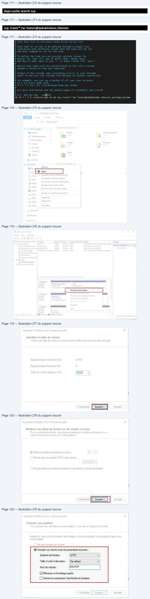
Page 121
Ouvrir le panneau de configuration -> système et sécurité -> sauvegarder et restaurer >
Créer une image système
Texte relevé dans les illustrations
naze
LR RP
NRE
pep Stee MRHERTAUREZ Jearnut
je
Assistant Création d'un volurne simple
x
FI
Fin de l'Assistant Création d'un
volume simple
|
L'Asbistent Création d'en volume simple est termine
Vous avezsoéoiiéles paramètres suivants
_
| Type du volume : Volume simple
a
| Disques sélectionnés : Disque 2
|
| Taille du volume
61437 Mo
|
|Letire de lecteur ou chemin d'accès F
|
| Système de fichiers
NTFS
| Tale d'unité d'allocation - Par défaut
y:
|
€
>
Pourfermercet Assistant. cliquez aut Termiriet
y
=
oa
LI
fn
|
<P
ru
wy Sauvegarder et restaurer (Windows 7)
+
À fr) > Panneau
de configuration > Système
et sécurité > Sauvegarder
et restaurer (Windows7)
oot sate du panneau de
Sauvegarder ou restaurer des fichiers
@ Créer une image système
Sauvegarder
Créer un disque de réparañion
SauvegardeWindows non configurée.
Configurer la sauvegarde
système
Restaurer
Pour cet ordinateur, Windows n'a détecté aucune sauvegarde.
@ choisir une autre sauvegarde comme source de restauration des fichiers
Page 122
Choisir le bon disque cliquer sur suivant puis enregistrer la sauvegarde.
Texte relevé dans les illustrations
x
F
a Créer une image système
dé
Où voulez-vous enregistrer la sauvegarde ?
Une image système est une copie des lecteurs nécessaires à l'exécution de Windows. Elle peut aussi
comprendre des lecteurs supplémentaires, Une image système peut servir à restaurer votre
ordinateur si votre lecteur de disque ou ordinateur s'arrête de fonctionner, Cependant, vous ne
pouvez pas sélectionner d'éléments individuels à restaurer.
@ Sur un disque dur
= DATA (D:)
: 39,90 Go de libres
we
© Sur un ou plusieurs DVD
= Lecteur de DVD (B:)
©) Sur un partage réseau
Sélectionner...
Page 123
6.2.3 Ensuite, vous planifierez une sauvegarde journalière des données du service
informatique (dossier « support informatique ») à 12h45. Les fichiers résultants seront
placés sur le partage « Support_Info » de votre binôme dans un dossier qui sera créé
à cette fin.
Ouvrir les paramètres de sauvegarde.
Accéder à l'outil Sauvegarder et restaurer
Texte relevé dans les illustrations
ER
ff
f
©
Filtres
Fae
Meitlour résultat
ST
esomères sème
Paramètres
%
Protection contre les ransomware
Suggestions de recherche
D sauvegarde -
Afficher tes
î
2]
==
8|
*
2
ti
© sauvegarde
Et
| Paramètres
cs
o
x
|
|
|
Accueil
Sauvegarde
|
|
hercher
un paramétr
Sauvegardera l'aide de l'historique des fichiers
Sauyeaardez vos fichiers sur un autre lecteur, puis restaurez-les si
Mise à jour et sécurité
les originaux sont perdus, endommagés où supprimés.
©
Windows Update
4
Ajouter un lecteur
S
Sécurité de Windows
opt
|
|
T
Sauvegarde
Vous recherchez une ancienne sauvegarde ?
|
Si vous avez créé une sauvegarde a l'aide de l'outil Sauvegarde
|
Résoudre les problèmes
et restauration de Windows 7, ce dernier fonctianne toujours
|
TD
Récupération
Accéderà l'outil Sauvegarder et restaurer (Windows 7)
| ©
Activation
Vous avez des questions ?
|
| A
Localiser mon appareil
|
Pour
les développeurs
:
| pa
MERPPRNE
Optimiser Windows
| Æ Programme Windows Insider
ss PER —
Page 124
Cliquer sur "Configurer la sauvegarde"
Cliquer sur "Enregistrer sur un réseau..."
Texte relevé dans les illustrations
Enregistrer sur un réseau...
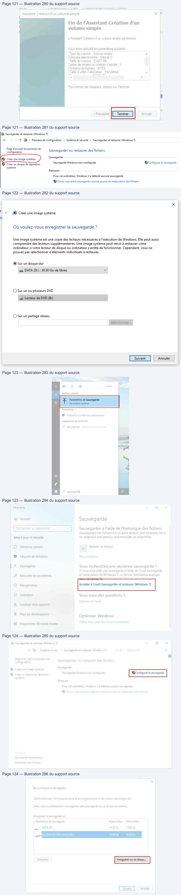
Page 125
Indiquer l'emplacement réseau de sauvegarde (\\@ipdubinôme\Support_Info), entrer les
informations d'identification (Nom d'utilisateur et mot de passe d'un compte ayant accès
à l'emplacement réseau) puis valider.
Cliquer sur suivant.
Texte relevé dans les illustrations
x
we Configurer la sauvegarde
Sélectionner un emplacement réseau
Indiquez l'emplacement réseau de vos fichiers de sauvegarde et entrez les informations
d'identification permettant à la sauvegarde Windows d'accéder à l'emplacement.
Emplacement réseau :
\\10.51.18.1\Support_Info
Parcourir...
Exemple:\\serveur\partage
Informations d'identification réseau
La Sauvegarde Windows a besoin du nom d'utilisateur et du mot de passe pour accéder à
l'emplacement réseau lors de l'enregistrement de votre sauvegarde.
Nom d'utilisateur:
Plarneti8
SE
ontiqurer
|s sauvega
W
=
y
ecomrnanac
|
enregistrér
otre sa
EGaIGE =
in
disque dur
externe
Enregistrer
la
sauvegarde
sur
Destination
de
sauvegarde
Espace
libre
Taille
totale
BACKLIP /E
Recommandé
£
=
|
ny
Des
utilissteyrecur
le réseau peuvent éventuellement accèder
4
votre
sauvegarde
Suivant
inriule
Page 126
Sélectionner "Me laisser choisir" puis cliquer sur "Suivant"
Texte relevé dans les illustrations
@ Me laisser choisir
Vous pouvez sélectionner des bibliothèques ou des dossiers, et indiquer si une image
système doit être incluse dans la sauvegarde. Les éléments sélectionnés seront
sauvegardés régulièrement.
À
Page 127
Sélectionner le dossier à sauvegarder (Support_Info) et décocher "Inclure une image
système de lecteurs" puis cliquer sur "Suivant"
Cliquer ensuite sur "Modifier la planification"
Texte relevé dans les illustrations
x
© 8 Configurer la sauvegarde
Que voulez-vous sauvegarder ?
|
Activez la case à cocher des éléments à inclure dans la sauvegarde,
> [ISA Bibliothèques de Jerome Renard
“a
» CIS Bibliothèques
de pjarnet
+ I Ordinateur
>» [lg Disque local (C:)
v Ok. DATA (D:)
ly
Cl
SRECYCLEBIN
» [ll | données
©
| Support info
C1
System Volume Information
v [ls BACKUP (F:)
C1
System Volume Information
Ÿ
[] Inclure une image système de lecteurs: Réservé au système, (C:)
Une image système contient une copie des lecteurs nécessaires au fonctionnement de Windows. Elle
vous permet de restaurer votre ordinateur en cas de panne,
13
uppeart_intc
Tous
les fichiers de données lo
|
. _
- “fm
|
Enregistrer
les parametres et exécuter la sauvegarde
rule
Page 128
Exécuter la sauvegarde tous les jours à l'heure voulu (ici 13:00) puis valider.
Enfin, enregistrer les paramètres et exécuter la sauvegarde, une première sauvegarde est
alors effectuée et devrait apparaitre dans l'emplacement réseau sélectionné plus haut.
Texte relevé dans les illustrations
x
def Configurer la sauvegarde
Quelle est la fréquence de sauvegarde souhaitée 7
Les fichiers nouveaux et modifiés créés après la dernière sauvegarde seront ajoutés à votre sauvegarde
selon la planification définie ci-dessous.
© Exécution planifiée (recommandé)
Fréquence:
Tous les jours
v
Jour:
Heure:
13:00
v
Ta
wge/shrink screenshot.
Enregistrer les paramétres et exécuter la sauvegarde
f
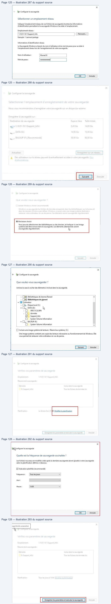
Page 129
Afin de modifier plus précisément l'heure de la sauvegarde, accéder au "Planificateur des
tâches"
Dans les Tâches actives, double-clic sur la tâche "AutomaticBackup"
Texte relevé dans les illustrations
=
EE
&
Filtres
ra
Meille
4 Planificateur de taches
|
nu
i
ameres
=
Tâches planifièes
©
Planifier votre redémarrage
&
Modifier
les heures d'activité
Suggestions de recherche
D
planifi
ieee
|—_|
—|
=
‘1
Lai
2
|
CR
©
planifil
Planificateur de
tâches
-
#
a
Fichier
Action
Affichage
i?
| © Planificateur de
tâches (Local
Actions
Bibliotheque du Planifical
Planificateur de tâches (Local)
+
Se connecter
à
un autre ordinateur
Nom
de la tâche
Réultstd,,
Démarrage de
Fin
de l'exécuti
Click to enlarge/shrink screenshot.
R
Importer ane tache
Afficher
toutes
les
tâches
actives
ie]
Activer
l'historique
de toutes
les tâches
onfiguration du compte
du serviceAT
Taches actives
=
Affichage
»
Actualiser
Les tééfies actives sont des taches
qui sont actuellement activées et qui n'ont pas
=
|
E
Aide
|
Résumé:
85 au total
|
|
Nom de la tâche
Prochaine exécution
Déclencheurs
OneDrive Standalone
Update Task-… 16/05/2019 12:04:53
À09:00
le 01/05/
ScanForUpdates
17/05/2019 00:13:17
Plusieurs décien
Registration
16/05/2019 15:15:09
Plusieurs déclen |
Dernière actualisation à
15/05/2018
16:24:17
Actualiser
Page 130
Clic-Droit sur la tâche puis "Propriétés"
Sous l'onglet "Déclencheurs", modifier le déclenchement
Texte relevé dans les illustrations
ou
Modifier...
=:
Page 131
Modifier l'heure à la valeur souhaitée (12:45) et valider
6.2.4 Enfin, vous paramétrerez les points de restauration sur le volume « C: » et réserverez à
cet usage 8% de la capacité du lecteur.
Accéder à la gestion des points de restauration système
Texte relevé dans les illustrations
‘
Démarrer: {15/05/2019 [Br| [12:45:00
2] pp Synch. fuseaux
N
horaires
Page 132
Sélectionner le lecteur C: et cliquer sur "Configurer"
Texte relevé dans les illustrations
—
2
|
aged’
=
aia
@
Filtres N/
bnfigi
Meilleur résultat
Sil
@
réer u
Ra Créer un point de restauration
réer u
”
Panneau de configuration
pren
Suggestions de recherche
P& point de - Afficher les résultats
Web
Bir
Écuriti
fistorie
k
pen
Pe
Fi
© point del
=|
Paramétres de protection
Lecteurs disponibles
Protection
| aa DATA (D)
Désactivée
BACKUP (F:)
Désactivée
P=) Disque local (C:) (Système)
Désactivée
Configurez des paramètres de restauration, gérez
Conf
l'espace disque et supprimez des points de
ci
restauration
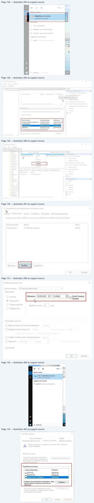
Page 133
Créer un point de restauration système
Texte relevé dans les illustrations
Se Protection système pour Disque local (C:}
x
US ames de restauration
En activant la protection du système, vous pouvez annuler les
modifications indésirables en restaurant l'ordinateur à un état antérieur.
© activer la protection du système
Désactiver la protection du système
Utilisation de l'espace disque
—
—
Vous pouvez régler l'espace disque maximal utilisé pour la protection du
système. À mesure que l'espace se remplit, les anciens points de
restauration sont supprimés afin de libérer de la place pour les nouveaux
points,
Utilisation actuelle : 5
Utilisation max :
|]
8% (2,36 Go)
Supprimer tous les points de restauration pour ce
=
pour les lecteurs dont la protection du systéme
est actives.
Protection du système
x
Créer un point de restauration
Entrez une description pour vous aider à identifier le point de restauration, La
date et l'heure actuelles sont ajoutées automatiquement.
restauration]
ander
Page 134
7 Pour aller plus loin – Partitionnement LVM
7.1 Configuration du stockage et des ressources
7.1.1 Sur le poste Debian : La partition nommée « LOGS » sera montée de façon
permanente dans le dossier « /var/log » afin de soulager la partition utilisée
jusque-là. De nombreux fichiers y sont positionnés et utilisés notamment par le
système en quasi-permanence, vous veillerez donc à ne perdre aucune
information vitale. Vous vérifierez après coup que l’inscription des évènements
fonctionne correctement.
Afin de pouvoir copier l'intégralité du dossier "/var/log" qui est en quasi-permanence
utilisé par le système, nous devons dans un premier temps redémarrer en mode
maintenance :
# init 1
Une fois en mode maintenance, nous pouvons copier le contenu de "/var/log" dans
un dossier temporaire, en conservant les permissions :
# mkdir /tmp/logs
# cp -rp /var/log /tmp/logs
Nous pouvons alors modifier le fichier "/etc/fstab" puis vérifier que le montage se
déroule correctement :
# echo "LABEL=LOGS /var/log xfs defaults 0 0" >> /etc/fstab
# mount -a
Nous pouvons maintenant recopier les données de log dans la nouvelle partition :
# cp -rp /tmp/logs/* /var/log/
Jettons un œil dans le contenu de /var/log et dans tmp/logs :
#ls -al /var /log
#ls -al /tmp/logs
Maintenant redémarrons la machine :
# reboot
Nous pouvons vérifier que de nouvelles données ont étés inscrites dans les journaux
(log) pendant ou après le redémarrage du système :
# tail /var/log/syslog
Page 135
7.1.2 Depuis le système Debian : vous devez monter le partage « Support_Info »
hébergé sur le poste Windows de votre binôme, à l’aide du compte utilisateur
adéquat. Attention à la problématique de version de protocole SMB supportée
par Windows 10.
Sur le windows 10 installer le support protocolaire SMB/CIFS :
Sur le Debian:
Installez le paquets cifs-utils :
#apt install cifs-utils
Créer le repertoire de montage :
#mkdir /home/loxton/support_info
Vérifions les droits sur le repertoire :
#chown loxton:informatique /home/loxton/support_info
#chmod 770 /home/loxton/support_info
Dans fstab ajoutons la ligne :
//172.16.63.253/support_info /home/loxton/support_info cifs
username=loxton,password=TLP4$$VV0rI),file_mode=0777,dir_mode=0777 0 0
Puis monter le partage :
#mount -a
Attention n’oublier pas que le partage ne doit pas être caché sur windows (supprimer
le $ à la fin du partage)
Texte relevé dans les illustrations
o
=
’
[i > Panneau de configuration
>» Programmes > Programmes et fonctionnalités
Page d'accueil du panneau de | (jj Fonctionnalités de Windows
-
o
x
configuration
x
7
Activer ou désactiver des fonctionnalités Windows
[7]
Afficher les mises à jour
installées
Pour activer une fonctionnalité, activez la case à cocher correspondante. Pour désactiver une fonctionnalité,
@ Activer ou désactiver des
désactivez la case à cocher correspondante. Une case à cocher pleine signifie qu'une partie de la fonctionnalité
fonctionnalités Windows
EEE
+
Fonctionnalités mutlimédias
ai}
C1)
Guarded Host
10
= [ll | Hyper-V
D3,
Imprimer dans un PDF de Microsoft
bo,
(| | Instance principale
Web des Internet Information Services (IIS)
D
Internet Explorer 11
1
4,
= CJ) | Internet Information Services
[ll | Legacy Components
Microsoft XPS Document Writer
= LJ | MultiPoint Connector
Prise en charge de l'API RDC (Remote Differential Compression)
= [] | Serveur de mise en file d'attente Microsoft (MSMQ)
[] | Service d'activation des processus Windows
&
[M)|_|
Services avancés .NET Framework 4.7
=
[M]| | Services d'impression et de numérisation de document
=)
[LL
Services pour NFS
[IL | Simple TCPIP services (i.e. echo, daytime etc)
-
SMB 1.0/CIFS Client
SMB 1.0/CIFS Server
Suppression automatique de SMB 1.0/CIFS
SMB Direct
LJ}
Sous-système Windows pour Linux
[IL | Telnet Client
v
Annuler
Page 136
7.2 Configuration avancée des systèmes
7.2.1 Sur le poste Windows : Pour économiser l’espace de la partition système, vous
déplacerez le fichier de pagination (swap) à la racine du lecteur « D: » en
laissant le système gérer la taille du fichier.
Accéder au panneau de configuration système
Texte relevé dans les illustrations
=
A
&
Filtres \7
|
a
Meilleur résultat
& Système
fo]
Panneau de configuration
Paramètres
|
© À propos de votre PC
©)
Activer ou désactiver les icônes système
©
Voir si vous avez une version 32 bits ou 64
bits de Windows
3
Synchroniser le curseur du Narrateur et le
focus système
=
Zone de notification de la barre des tâches
Applications
& Informations système
h,
&
Configuration du système
Suggestions de recherche
4
À systè - Afficher les résultats Web
=
&
|
Fd
=
Fi
©
syste}
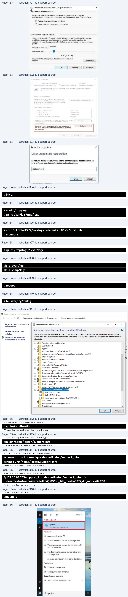
Page 137
Entrer dans les “Paramètres systèmes avancés”
Texte relevé dans les illustrations
4 Gi « Système et sécurité
> Système
vl& | Rechercher
2
Page d'accueil du panneau de
,
s
—
9
configuration
Informations système générales
D Essonne ae peapnenque:
Mon Windows
® Paramètres d'utilisation
à
Ween MIE
mnEs om
.
distance
© 2018 Microsoft
|
W | n OWS 10
@ Protection du système
SPARUE
Sil
—
Système
Processeur
:
Intel(R) Core(TM) i5-4690 CPU @ 3.50GHz
3.49 GHz
Mémoire installée (RAM):
4,00 Go
Type du système:
Système d'exploitation 64 bits, processeur
x64
Stylet et fonction tactile:
La fonctionnalité d'entrée tactile ou avec un stylet n'est pas
disponible sur cet écran.
Paramètres de nom d'ordinateur, de domaine et de groupe de travail
Nom de l'ordinateur:
W10-19
@ Modifier les
Nom complet:
W10-19
poramictres
Description de l'ordinateur :
Groupe detravail:
WORKGROUP
Activation de Windows
Connectez-vous à Internet pour activer Windows. Lire les termes du contrat de licence
Voir aussi
logiciel Microsoft
Sécurité et maintenance
ID de produit
: 00330-80000-00000-AA873
Activer Windows
Page 138
Cliquer sur “Paramètres”
Sous l’onglet “Avancé”, cliquer sur “Modifier”
Texte relevé dans les illustrations
Propriétés système
x
Nom de l'ordinateur
Matériel
Paramètres système avancés
Protection du système
Utilisation à distance
Vous devez ouvrir une session d'administrateur pour effectuer la plupart de
ces modifications.
Performances
Efets visuels, planification du processeur, utilisation de la mémoire et
mémoire virtuelle
Profil des utilisateurs
Paramètres du Bureau liés à votre connexion
Démarrage et récupération
Informations de démarage du système, de défaillance du système et de
débogage
|
Variables d’environnement...
OK
Annuler
Appliquer
Options de performances
x
Effets visuels.Le Jpreventonde l'exécution des données
Performances des applications
Choisissez comment allouer les ressources du processeur.
Ajuster pour obtenir les meilleures performances pour:
© Les programmes
O Les services d'arrière-plan
Mémoire virtuelle
Un fichier d'échange est une zone du disque que Windows utilise comme s'il s'agissait de
mémoire vive (RAM).
Taille du fichier d'échange pour tous les lecteurs:
1408 Mo
cs
EE
Page 139
Décocher la case “Gestion automatique du fichier d’échange pour les lecteurs”
Sélectionner le lecteur D:
Cocher “Taille gérée par le système” Valider en cliquant sur “OK”
Après avoir validé, redémarrer l’ordinateur pour que les modifications soient prises
en comptes.
Texte relevé dans les illustrations
Mémoire virtuelle
X
[] Gestion automatique du fichier d'échange pour les lecteurs
Taille du fichier d'échange pour chaque lecteur
Lecteur [nom de volume]
Taille du fichier d'échange (Ma)
Ib:
[DATA]
Aucun
|
Lecteur sélectionné:
D: [DATA]
Espace disponible:
15299 Mo
OTaille personnalisée:
Taille initiale (koi
:
Taille maxirnale (Moi
:
@
Taille gérée par le système
© Aucun fichier d'échange
Définir
Taille totale du fichier d'échange pour tous les lecteurs
Minimale autorisée:
= 16 Mo
Recommandée :
1407 Mo
Allouée actuellement:
1408 Mo
Microsoft Windows
#
Vous devez redémarrer votre ordinateur pour
appliquer ces modifications
Avant de redémarrer, enregistrez les fichiers ouverts et fermez tous les
programmes,
Redémarrer maintenant
Redémarrer ultérieurement
Page 140
7.2.2 Sur le poste Debian : Plusieurs applications installées depuis les sources vont
être installées dans /opt. Pour plus de flexibilité, l’espace disque accessible
à cet emplacement sera géré au moyen de LVM.
7.2.2.1 Vous ajouterez 2 nouveaux disques SCSI de 20Go ; vérifier leur
bonne prise en compte par le système.
7.2.2.2 Au moyen des commandes appropriées, vous créerez un volume
logique LMV de 32Go
7.2.2.3 Le volume logique créé précédemment est à formater en ext4. Il
doit être accessible depuis /opt et ce de façon permanente.
Pour cela, nous devons utiliser la méthode LVM pour créer un volume logique
s'étendant sur les deux disques physiques.
Une fois les disques ajouter à la VM nous la redémarrerons.
Nous aurons besoin dans un premier temps de trouver le gestionnaire lvm :
#apt search lvm
Installons-le :
#apt install lvm2
Nous allons d'abord préparer nos deux disques durs à recevoir des volumes
logiques. Nous allons donc créer un volume physique pour les deux disques durs,
nous pourrons voir le résultat grâce à la commande pvdisplay :
# pvcreate /dev/sdc /dev/sdd
# pvdisplay
Texte relevé dans les illustrations
root@Deb1@MSP:-# pvcreate fdev/sde /dev/sdd
i.
|
Physical volume "/dev/sde" successfully created.
Physical volume "/dev/sdd" successfully created.
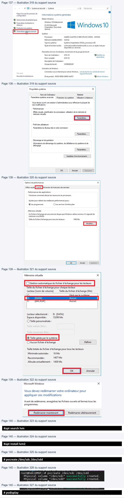
Page 141
Nous pouvons maintenant créer un groupe de volume englobant les deux disques
dur, ils seront alors ensemble considérés comme un seul disque dur logique (nous
l'appellerons applications):
# vgcreate applications /dev/sdc /dev/sdd
Enfin, nous pouvons créer un volume logique nommé opt, d'une taille de 32Go
dans le groupe de volumes applications :
# lvcreate -n opt -L 32G applications
# lvdisplay
Texte relevé dans les illustrations
root@Deb10MSP:-# pvdisplay
“"/dev/sdc"
is
a new physical volume of "26,66 GiB"
---
NEW Physical volume
---
PV Name
/dev/sdc
VG
Name
PV Size
20,00 GiB
Allocatable
NO
PE
Size
F]
Total
PE
fe)
Free
PE
i]
Allocated
PE
i)
PV UUID
bszX13-5L]Q-2T62-bAw3 -2100-0Yv3-dad9P0
"/dev/sdd"
is
a new physical volume of "20,00 GiB"
---
NEW Physical volume
---
PV Name
/dev/sdd
VG
Name
PV Size
20,08 G1B
Allocatable
NO
PE
Size
fc)
Total
PE
i)
Free
PE
ie]
Allocated
PE
cs)
PV UUID
wF411s-KP1P-aLUa-5pF] -tyfJ-lRh6-Cn7mpn
oot@DebloMsSP:~#
lvdisplay
---
Logical volume
---
LV Path
/dev/applications/opt
LV Name
opt
VG Name
applications
LV UUID
d7z100-GExn-0A5z-gHFX-deeF-Kh82-6yuL1v
LV Write Access
read/write
LV Creation host,
time DeblOMSP,
2020-10-23
16:11:07 +0200
LV Status
available
# open
É]
LV Size
32,00 GiB
Current
LE
8192
Segments
2
Allocation
inherit
Read ahead sectors
auto
-
currently set to
256
Block
device
254:0
Page 142
MSP systèmes clients
Nous pouvons maintenant formater ce nouveau volume en ext4 :
# mkfs.ext4 /dev/applications/opt
Enfin nous pouvons le monter de manière permanente dans le dossier /opt en ajoutant
une ligne au fichier /etc/fstab puis en relançant le montage des disques :
# echo "/dev/mapper/applications-opt /opt ext4 defaults 0 0" >> /etc/fstab
# mount -a
Page 142/143
© ENI – Tous droits réservés
Texte relevé dans les illustrations
root@Deb10MSP
:-# mkfs.ext4 /dev/applications/opt
mke2fs
1.44.5
(15-Dec-2018)
Creating filesystem with 8388608 4k blocks
and 2097152 inodes
Filesystem UUID:
4205f5d6-f88a-477c-940b-6365f373d898
Superblock backups stored on blocks:
32768,
98304,
163840,
229376,
294912,
819200,
884736,
1605632,
2654208,
4096000,
7962624
Allocating group tables:
done
Writing inode tables:
done
Creating journal
(65536 blocks):
done
Writing superblocks
and filesystem accounting information:
done
Er
Page 143
MSP systèmes clients
7.2.3 Vous trouverez un fichier Excel (Résultats_séminaire.xlsx) comprenant les notes des
employer aux derniers séminaires. Veuillez l’ouvrir et compléter :
7.2.3.1 La colonne à l’aide d’une formule “Total par élève”
=SOMME(B5:E5)
7.2.3.2 La colonne à l’aide d’une formule “Moyenne par élève”
=MOYENNE(B5:E5)
7.2.3.3 La ligne “Total par matière” est une somme des notes des employés dans
une matière
=SOMME(B5:B12)
7.2.3.4 La ligne “Moyenne par matière” est une moyenne des notes des employés
dans une matière
=MOYENNE(B5:B12)
7.2.3.5 La ligne “note maximum” indique la meilleure note des employés dans une
matière
=MAX(B5:B12)
7.2.3.6 La ligne “note minimum” indique la note la plus faible des employés dans
un matière
=MIN(B5:B12)
7.2.3.7 La ligne “nombre d’élèves” indique le nombre d’élèves
=NBVAL(A5:A12)
Pour compléter la colonne appréciation vous devrez créer la condition suivante
:
7.2.3.8 Si la moyenne et l'assiduité >10 afficher Bien
7.2.3.9 Si la moyenne <=10 et l'assiduité >=10 afficher En Progrès
7.2.3.10 Si la moyenne >=10 et l'assiduité <10 afficher Trop d'absences
7.2.3.11 Si la moyenne et l'assiduité <10 afficher En danger !
=SI(ET(G5>10;H5>10);"Bien";SI(ET(G5<=10;H5>=10);"En progrès";SI(ET(G5>=10;H5<10);"Trop
d'absences";"En danger!")))
Page 143/143
© ENI – Tous droits réservés
Texte relevé dans les illustrations
v
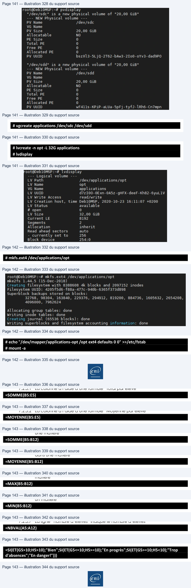
Référence du document : 11FMGV91iFpk7B4zi-mYfv1LrVd3T2vYf · SHA-256 1316bbc9d075426a…
Correction · création_groupes.txt · document texte
Notes textuelles présentes dans le Drive. Aucun support de cours illustré distinct n’est fourni pour ce document ; aucune illustration n’a été inventée ou attribuée à ENI.
Correction originale : à consulter après avoir tenté l’exercice.
Document texte
###############################################################
# Script de création des groupes dans windows 10 client #
# Tracer Lexton #
# créé le 20 octobre 2020 #
# Mis à jour le 20 octobre 2020 #
# Mis à jour par Jesse MacCree #
# le 20 octobre 2020 #
# Fonctionnel sous Windows 10 entreprise build 2004 #
###############################################################
# Indiquer l'adresse complète du fichier utilisateurs .csv
# Indiquer le délimiteur pour le fichier .csv
# Indiquer les noms d'en-têtes
$datasource=Import-CSV -Path "C:\Users\fx\Desktop\groupes.csv" -Delimiter ";" -Header Groupes,description
#Boucle d'alimentation
Foreach($data in $datasource) {
# Nom des groupes
$groupes=$data.Groupes
# description des groupes
$description=$data.description
#creation du groupe avec les données renseignées dnas le tableau csv
New-LocalGroup -Name ”$groupes” -Description “$description”
# Fait une liste
$nomliste=$affich
$liste = $liste + $nomliste + ","
}
# Affiche le résultat des imports
write-host "Les groupes : " -ForegroundColor Black
write-host "$liste" -foregroundcolor red
write-host "ont été créés" -ForegroundColor BlackRéférence du document : 1Qdof_W0D8at36EjxjuED_GHUtwvN8tQJ · SHA-256 3fedf75b44295417…
Correction · création_utilisateur.txt · document texte
Notes textuelles présentes dans le Drive. Aucun support de cours illustré distinct n’est fourni pour ce document ; aucune illustration n’a été inventée ou attribuée à ENI.
Correction originale : à consulter après avoir tenté l’exercice.
Document texte
###############################################################
# Script de création des utilisateurs dans windows 10 client #
# Tracer Lexton #
# créé le 20 octobre 2020 #
# Mis à jour le 20 octobre 2020 #
# Mis à jour par Jesse MacCree #
# le 20 octobre 2020 #
# Fonctionnel sous Windows 10 entreprise build 2004 #
###############################################################
# Indiquer l'adresse complète du fichier utilisateurs .csv
# Indiquer le délimiteur pour le fichier .csv
# Indiquer les noms d'en-têtes
$datasource=Import-CSV -Path "C:\Users\fx\Desktop\utilisateurs.csv" -Delimiter ";" -Header Prénom,Nom,login,mail,password,description
#Boucle d'alimentation
Foreach($data in $datasource) {
# Nom et prénom de famille
$Nom=$data.Nom
$prenom=$data.Prénom
$FullName=$nom + " " + $prenom
# Affichage de l'utilisateur
$affich=$FullName
# Nom de famille
$login=$data.login
#le mot de passe
$password=$data.password
#la description
$description=$data.description
#creation utilisateur avec les toutes les données renseignées
New-LocalUser -FullName "$FullName" -Description "$description" -Name "$login" -Password (ConvertTo-SecureString -AsPlainText "$password" -Force)
# Fait une liste
$nomliste=$affich
$liste = $liste + $nomliste + ","
}
# Affiche le résultat des imports
write-host "Les utilisateurs : " -ForegroundColor Black
write-host "$liste" -foregroundcolor red
write-host "ont été créés" -ForegroundColor BlackRéférence du document : 1UUK-587hgViAQPniG-sVpIZoPSGFPE18 · SHA-256 053622e8258b3fd0…
Complément IA / externe au cours — fiche pédagogique du portail
Cette fiche contient une reformulation et des aides d’apprentissage rédigées par IA. Elle est distincte de la transcription des documents du Drive et ne la remplace pas. Les schémas de synthèse de cette fiche sont des illustrations IA / externes au cours, sauf les captures explicitement attribuées à un document source.
Organisation¶
Les réponses restent séparées des questions. Commencer par l’énoncé, conserver les preuves de vérification, puis consulter la correction seulement après une tentative complète.
- Préparer l’environnement et un retour arrière.
- Lire l’énoncé en entier.
- Noter l’état initial.
- Réaliser les manipulations.
- Vérifier chaque résultat.
- Comparer avec la correction.
- Énoncés
- Corrections
- Cours du module
Ressources¶
- 01_utilisateurs_groupes.sh
- 02_sauvegarde_quotidienne.sh
- 03_lvm_opt.sh
- 01_direction_comptabilite.cmd
- 02_informatique_logistique.ps1
- 03_preparer_profils.ps1
- 04_partage_support_info.ps1
- 05_deplacer_spool.ps1
- Resultats_seminaire_solution_complete.xlsx
- Résultats_séminaire.xlsx
- Résultats_séminaire_corrigé.xlsx
- groupes.csv